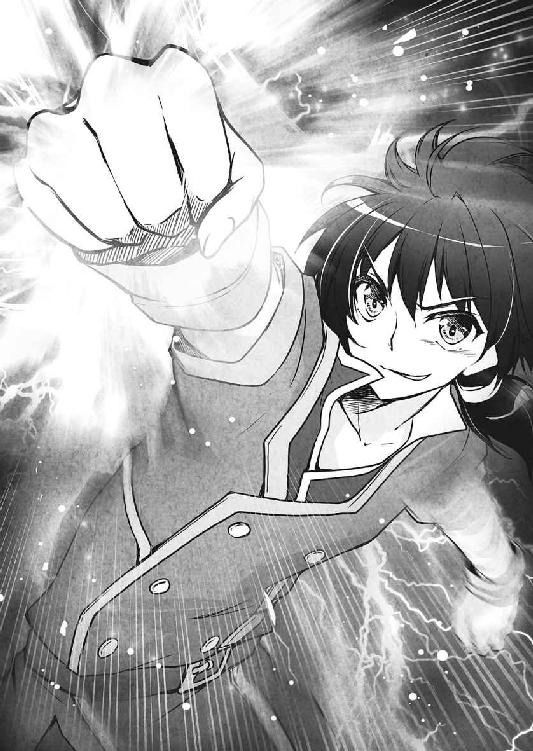

| アスガルド武皇戦記3 煌杖の焔姫と武闘の皇者 (富士見ファンタジア文庫) | |
| 鏡 遊 | |
| (2016) | |
アスガルド武皇戦記３
煌杖の焔姫と武闘の皇者
鏡遊

富士見ファンタジア文庫
本作品の全部または一部を無断で複製、転載、配信、送信したり、ホームページ上に転載したりすることを禁止します。また、本作品の内容を無断で改変、改ざん等を行うことも禁止します。
本作品購入時にご承諾いただいた規約により、有償・無償にかかわらず本作品を第三者に譲渡することはできません。
本作品を示すサムネイルなどのイメージ画像は、再ダウンロード時に予告なく変更される場合があります。
本作品の内容は、底本発行時の取材・執筆内容に基づきます。
本作品は縦書きでレイアウトされています。
また、ご覧になるリーディングシステムにより、表示の差が認められることがあります。
プロローグ
蒼天を、燃えるような赤い鱗の龍がゆく。
空を飛んでいるのが不思議なくらいの巨体で、しかも左側の翼には大穴が空いているが、強風が吹く高空をまっすぐに進んでいる。
その赤龍は、魔族の国〝闇と塔の国〟最大の脅威であった〝狂眼の龍王〟の眷属である。龍王には及ばないものの、一軍にも匹敵するほどの強大な力を有している。
狂眼の龍王は既に亡い。赤龍は、かつての主を倒した〝龍王殺し〟の配下となっている。龍王と結んでいた主従の契約が、主が替わりつつも継続された形だ。
「............」
カグヤは、その龍王の眷属の背に乗っている。
長く艶やかな黒髪、豊かにふくらんだ胸、すらりと細い腰──そして、あまりに整いすぎた顔。年齢は十七歳。
この美少女は大陸の五大国の一つ、人間が統治する〝湖と平原の国〟の騎士姫である。
史上もっとも美しい騎士姫、とも言われている。
龍が飛んでいるのは、地上の人間が粒のように見えるほどの高さだ。並の人間ならば目がくらむだろうが、カグヤはまるで気にしていなかった。龍の背は広く、まず転がり落ちることもなさそうだ。
「それにしても......この子はよくこの状況で眠れるわね」
カグヤは、ちらりと横に目を向け、呆れて言った。
そこには、赤い髪を二つに結び、フリルが多くついた豪華な衣装をまとった美しい少女が、猫のように身体を丸めて眠っている。
少女の名は、ベルティーユ。彼女こそが、エルズニルの騎士姫にして、狂眼の龍王を討った張本人である。年齢は十四歳で、外見もまだ子供っぽさを多分に残している。
エルフの国、〝森と風の国〟の森を飛び立ってすぐに、ベルティーユは眠ってしまった。赤龍は、主が眠っていても、命じられたとおりに飛び続けている。
「まあ、ベルティーユさんもだいぶ派手に魔術を使っていましたし......お疲れなのでは」
「ははっ、この子の魔力は無尽蔵だよ。ただ、やることがないから寝てるだけ。ていうか、あたしも眠くなってきた。ふわぁ......」
ベルティーユを擁護したのが、金髪の華奢なエルフ少女──シルフィン・フォウの騎士姫エレノールである。年齢は百歳を過ぎているが、十代の少女にしか見えない。
眠たそうにあくびをした少女は、灰色の髪を三つ編みにして、露出度の高い服を着ている。彼女はドワーフの国〝山と鉄の国〟の騎士姫リザだ。年齢は十八歳で、当代の騎士姫の中では、もっとも大人びている。
「............」
そして、黙りこくっているのが、既に滅んだ〝森と炎の国〟の騎士姫であるフェリオだ。肩までの銀髪に、褐色の肌。こちらも肩や胸の谷間が剝き出しの、露出の多い服装だ。
エルフと同じく寿命の長いダークエルフだが、フェリオは見た目どおりに若く、まだ十六歳である。彼女は基本的には無口で、龍に乗ってからもほとんど口を利いていない。
この赤龍の背には、武皇大陸を五分する騎士姫全員が揃っているというわけだ。
彼女たちにとって浅からぬ関係の少年──タイガという名の彼が、現在行方不明なのだ。
シルフィン・フォウで、高位の亜神である〝十六将〟の一体、〝氷嵐のセム〟をエレノールと他の騎士姫たちの力で撃破したものの、その場にいたはずのタイガが突如として姿を消したのだ。
周囲を念入りに捜索したが、タイガは見つからなかった。
だが、騎士姫たちにあきらめるという選択肢はなく、ベルティーユが全員を龍に乗せて、こうして旅立ったのだ。
シルフィン・フォウを離れてからまだ半日と経っていない。
大陸最高の魔術師でもあるベルティーユは、なんらかの方法でタイガを捜せるらしい。
赤龍は、そのベルティーユの命を受けて飛んでいるのだ。
「この龍はどこへ向かっているのでしょう？ 方向的には大陸の中央部でしょうか？」
エレノールが可愛らしく小首を傾げながら言った。
ごく大ざっぱに言って、武皇大陸の北東部にフィムテ、その南部の広大な森林地帯がシルフィン・フォウ。カグヤたちの出発点はここだ。
それから、大陸中央あたりから北西部、大陸の三分の一にあたる領土を占めているのが帝国とも呼ばれるエルズニル。さらにその南の山岳地帯がドワーフの国ギムルだ。ギムルは広くはないが、鉱山が豊富にあり、莫大な富を生んでいる。
そのエルズニルとギムルが国境を接する、大陸の中央部には、国を追われたダークエルフの多くが住む砂漠地帯──そして、かつて大陸王と亜神王が決戦し、今は有毒な瘴気に包まれた魔の森、〝聖地〟が存在する。
他でもないタイガが、かつて聖地に潜入し、そこに亜神たちがいることを確認している。
もし、タイガを連れ去ったのが亜神なら、聖地が亜神たちの本拠地だとしたら──カグヤは、ごくりと唾を吞み込んだ。
聖地を包む瘴気は、優秀な魔術師が強力な結界を張っても、耐えきれるものではないらしい。
カグヤには、〝大陸王の武具〟の加護がある。それでも、聖地の瘴気に耐えられるかわからない。
いや──
カグヤは、小さく首を振った。
耐えられるかどうかではなく、タイガを見つけて連れ戻すまでは、どんな困難だろうと乗り越えるまでだ。
カグヤがあらためて決意を固めた、まさにそのとき──
「きゃああっ！」
カグヤは悲鳴を上げ、赤龍の鱗にしがみつくようにした。
突然、暴風が吹き荒れ、身体が吹き飛ばされそうになっている。
「なっ、なに!? なんなのよ、これは！」
カグヤは慎重に体勢を立て直しながら、周囲を確認する。
いつの間にか、赤龍の周りに風が激しく渦巻いていた。龍の背にいる彼女も、気を抜けば、一瞬で地の果てまでも飛ばされそうになる。
まるで竜巻の内部に入り込んでしまったかのようだ。
「ふー......面倒くさい......」
またもや唐突に──そんな声が聞こえてきた。
赤龍の鼻面のすぐ前と言ってもいい近距離に、一人の少女が浮かんでいた。
長く伸ばした桃色の髪に、だぼだぼの服装。首から肩に、羽衣のようなものをまとっている。
なかなか美しい顔をしているが、その額には銀色に輝く〝第三の目〟が──
「亜神将！ いえ、十六将!?」
カグヤは、ぎょっとする。
亜神の少女の全身から〝神気〟の強烈な波動が放たれてくる。
その波動は、つい先ほどまで相対していた亜神将セムに劣らない。
十六将は、騎士姫に匹敵する力を持つ怪物たちである。
「この竜巻はあんたの仕業ね......！ みんな、一気に仕留めるわよ！」
カグヤは、特に意識せずにこの場を仕切っていた。
騎士姫は全員が同格であり、年齢はエレノールやリザのほうが上だが、適当なドワーフや控えめなエルフよりは、カグヤが指揮官に向いている。
「あたしのミヨルニルは大地の力を借りるから、お空の上じゃたいしたことできないね」
「我のダーインスレイヴは、基本的には対人戦闘用だ」
「......実は私、セムとの戦いでかなり力を使い果たしていまして、足が生まれたての鹿みたいに震えてます」
「揃って役に立たないわね！」
リザ、フェリオ、エレノールが続けて言い、カグヤは呆れながら空中に浮かび上がった魔法陣から神槍〝グングニール〟を取り出す。
この竜巻は、おそらく亜神将の奥義──〝魔技〟によるものだ。
彼女がまとっている羽衣は、大陸を漂うごくごく小さく、力を秘めた金属の粒──オリハで構成した防具に違いない。
あの羽衣で風を集めて、竜巻と化している。
グングニールで羽衣を破壊し、ついでに亜神将の命を奪えば、竜巻も消えるだろう。
「これで終わり......」
だが、羽衣の亜神が先に動いた。彼女は、けだるげにつぶやくと、左手を振るった。
同時に、赤龍の周囲を包んでいた竜巻がさらに吹き荒れ、穴が空いた翼と無事なほうの翼をまとめて斬り裂いてしまう。
「ああっ!?」
カグヤはグングニールを繰り出そうとして、足場が激しく揺れるのを感じた。
翼を斬り裂かれた赤龍は悲鳴のような咆哮を上げ、いきなり失速を始めた。まだ渦巻いている竜巻へと突っ込む形で落ちていく。
「ちょ、ちょっと......ベルティーユ！ 龍をなんとかして！」
「うにゅ......もう食べられませんわ......」
「そんな寝言はいいから！ お願いだから起きてぇぇっ！」
カグヤの必死な叫びにも、ベルティーユは目を覚ます様子はなかった。
「グオオオオオオオオッ！」
赤龍は竜巻に全身を斬り裂かれ、身体を回転させながら、落下を続けている。
「タ、タイガッ......！」
カグヤの身体がふわりと舞い上がり──竜巻の中でかき回されていく。
視界の端に、他の四人の騎士姫たちも同じようにして赤龍の背中から投げ出され、空中を飛び回っているのが見えた。
「こんな、ところで......！」
カグヤは脳内を激しく揺さぶられ、意識が消失していく──
１章 聖地の亜神たち
暗い森の中を、一人の少年が歩いている。
わずかに、歩き方にぎこちなさがある。足を引きずるようにして、腕もだらりと下げたままだ。
少年の名は、タイガ。
フィムテ国の錬武士にして、騎士姫カグヤの従者。
人間であるが、人間でない。
亜神であるが、亜神でない。
だが、タイガ自身は少なくとも自分を人間だと思っている。
この武皇大陸には多くの種族が存在する。
彼は三年の時間をかけて大陸全土を旅して、多くの人々に出会った。混血がさほど珍しくないことを知っている。
混血の者たちは、自分が何者なのか迷い、悩んでいる場合も多かった。
しかし、タイガは迷わない。幼い頃に出会った黒髪の少女は人間で、タイガもまた人間の少年として彼女との時間を重ねた。
だからこそ、タイガはあの頃の自分と変わらないまま、人間のままでこれからも黒髪の少女とともに生きていきたいと願っている。
「............っ！」
タイガは、さっと後ろに跳んだ。直後に、すぐそばの木の上から、なにかが降ってくる。
轟音とともに、一瞬前までタイガがいた場所に大きな穴が穿たれる。
オーガのような筋骨隆々の大男が、木の上から落下してくると同時に、巨大な棍棒を振り下ろしたのだ。
「ちっ......！」
だが、その不意討ちの一撃を避けただけでは危機は終わらなかった。
後ろに跳躍したタイガが着地する寸前、彼の首に二本の刃が襲いかかってきた。
両腕の肘から先が鋭い刃になった細身の男が、いつの間にか飛びつくようにしてタイガに肉薄していたのだ。
二本の刃を交差させるようにして、タイガの首を刈り取りにくる。
そしてタイガは空中に浮いた状態だ。身体が浮いていては、どんな体術の使い手でも体勢を変えるのは容易ではない。
一瞬、タイガの脳裏にダークエルフの少女の顔がよぎる。彼女なら、空中で器用に動いて、軽々とかわしてしまうのだろうが──
「うおおおおおおっ！」
タイガは、刃をかわそうとはしなかった。
大陸を漂う金属の粒──オリハを手足にまとい、神気で全身を強化する。それが、錬武士の戦い方だ。
タイガは、神気を首に集中させて、刃を受け止める。ガキン、と金属がぶつかり合うような音が響いた。
首に凄まじい衝撃を感じつつも、タイガは着地と同時に蹴りを繰り出した。刃の男の腹部を貫く勢いで蹴り抜き、男は吹き飛んでいく。
そのときには、既に棍棒の男も倒れていた。タイガは棍棒の一撃をかわしたついでに、男のアゴを掌底で殴りつけて脳を激しく揺らしていたのである。
襲いかかってきた二人は、額に青と緑の〝第三の目〟が輝いている。十六将ではないが、強靭な個体である亜神将だ。
二体とも完全に気を失っている。タイガは彼らに背を向けて歩き出した。
五百年前、亜神王と大陸王の決戦の舞台となった聖地。
広大な森には有毒な瘴気が満ち、強い魔力を持つ魔族や頑健なドワーフでも足を踏み入れれば瞬く間に命を落とすほどに危険だが、安全な領域も存在する。
聖地の中心部近くに、風と土と水、森の木々が宿す精霊力の乱れが、瘴気の流れを阻害し、奇跡的に安全地帯をつくっているのだ。
その安全地帯は、町が一つすっぽりと収まるほどの広さだ。
タイガは瘴気が満ちた森を進んで、安全地帯へと入った。明確な境界があるわけではないが、呼吸が楽になるのですぐにわかる。
タイガは手足に刻まれた魔法陣を通してオリハを集め、全身に神気を満たすことで、体内に入り込んでくる瘴気を遮断している。
とりあえず楽になったので、タイガは神気を解き放ち、息をついた。
「ほう、今日も無事に戻ってきたのかよ。なんだ、つまらん。最初の頃は、亜神将一体を倒すだけで最終決戦みてえな緊迫感だったのに」
「......あんたも緊迫感とは無縁だな」
タイガは、頭上から降ってきた突然の声に、呆れた顔をする。
縦横五スナ（約五メートル）もありそうな巨岩の上に、一人の男が座っている。
輝くような金色の髪を長く伸ばし、精悍な顔つきをした男だった。
見た目はせいぜい二十代後半といったところだろう。
上半身は裸で、下はごく質素な布のズボン、だぶだぶの白いローブを羽織るようにして着ている。
彼こそが、五百年前に大陸王に討たれて滅んだと言われている亜神王である。
左半身はほぼ失われており、ローブの袖がばたばたと風に揺れている。
「はっ、辛気くさい顔なんぞしたくねえな。余は楽しけりゃそれでいいんだ。ふむ、無傷か。今日送り込んだ奴らは、なかなかの腕だったがな」
「もうあの程度の腕前じゃ、相手にならない」
タイガは、きっぱりと言い切った。
彼は数日前にディヴァという強力な亜神将と戦って、かなりの重傷を負い、体力も甚だしく消耗してしまった。
傷は驚異的な回復力で治癒しつつあるのだが、まだ身体はあちこち痛み、動きもぎこちない。
亜神王からの提案で、毎日何体かの亜神と〝稽古〟することで、調子を取り戻そうとしているのだ。
まだ治りきってない身体に鞭打っているだけのようでもあるが、実際にタイガの肉体は急速に元通りになりつつある。
「はっ、生意気な小僧だなあ。まあいい、こっちに来な」
「............」
タイガは小さく舌打ちしてから、五スナを軽く跳躍して、巨岩の上に乗った。
亜神王の横には大きな酒樽があり、杯も二つ置かれている。
「あんたは、いつ見ても酒かっくらってるな」
「酒は百薬の長、って言ってな。なくした左腕にいい塩梅にしみるのさ。この葡萄酒もなかなかいけるぜ」
そう言いつつ、亜神王は樽に杯を突っ込んで中の葡萄酒を汲み、口元に運んで一気に飲み干した。
「かーっ、美味ぇ！ このために生きてるよなあ！」
「亜神の王が酒のために生きてるのか？ あちこちで戦乱を起こしてるおまえの部下が聞いたら泣くな」
タイガは呆れながら、亜神王の前に座る。
「今は、余が指揮を執ってるわけでもねえからな。ディヴァや十六将どもがいいようにやってくれんだろ。余は酒飲んで、寝てりゃいいのさ。あとはいい女がいりゃ、言うことねえが、まあ〝子孫〟なんて珍しいものでも酒の肴にはなる」
「............」
タイガは黙ったままで、反論しなかった。
もう、〝亜神化〟した姿は騎士姫たちにも見せてしまった。もっとも見られたくなかった者たちに、揃って目撃されたのだ。
あきらめ、認めるしかない。
自分は亜神の血を引いており──しかも、この亜神王の子孫なのだと。
タイガが亜神化した際に額に輝く金色の第三の目は、亜神王の血筋である証拠なのだ。
「なんだ、まだ複雑そうな顔してんなあ。生まれなんて、どうにもならねえことで迷うな。時間の無駄遣いだぞ」
「あいにく、自分の先祖なんていくら珍しくても腹の足しにはならないな」
タイガは亜神王を睨みながら答える。
いくら事実を受け入れたとはいえ、どうしても顔には嫌悪感が出てしまうようだ。
「余は飽きないがな。大陸王にぶっ飛ばされて、五百年ぶりに目覚めてみりゃ、血を継いだガキがいるんだからなあ。余の子孫なんぞいねえと思ってたぜ」
亜神王が感慨深そうにしている理由を、タイガは知っている。
この強大な力を持つ亜神の血を継ぐ子は何人かいたそうだ。
だが、ことごとく早死にした。強大すぎる力を受け継いだはいいが、その力が彼らの肉体を蝕んだのだ。
子を残せるほど生きられる者は、ほぼいないと──亜神王本人もそう考えていた。
しかし、若い年齢での出産を繰り返した一族がいたらしく、かろうじて亜神王の血統は受け継がれていき、タイガの身にも彼の血が流れている。
「そういやあ、今はおまえ以外の錬武士は単なる武器の修理屋になってるらしいな」
「それどころか、武器も使えない錬武士なんて、笑いものさ」
錬武士は亜神王と大陸王が戦争をしていた当時は、オリハを身体にまとい、体術で戦う強力な戦士たちだった。
今の錬武士は、オリハで武器に応急処置をするだけの、軍でも最底辺の存在なのだ。
五百年前からの武芸を今も受け継いでいるのは、既にタイガ一人だけになってしまった。
「そいつらは笑っていい奴とまずい奴の区別がついてねえんだな。さてどうする、今日は？ 酒の相手をするか、それとも──？」
「決まってるだろ」
タイガは立ち上がり、いきなり容赦なく亜神王の頭に蹴りを叩き込んだ。
ドッ、と凄まじい音とともに亜神王は鉄をも砕くタイガの蹴りを軽々と腕で受け止めていた。
「もちろん、おまえをぶっ倒す」
「いい蹴りだ。だが、ご先祖様への敬意がねえよな、てめえは」
亜神王は、にやにやと笑っている。
タイガが足を引いて、一歩後ろに下がった。当然、今の蹴り一発で勝負が決まるなどと考えていなかった。
「やれやれ、てめえは喧嘩っ早くていけねえ」
大陸では悪の化身のごとく恐れられている亜神という種の、王の言葉とは思えなかった。
亜神王は、葡萄酒がたっぷり詰まった樽を持ち上げると、ごくごくと飲み始めた。
大人が数人がかりで持ち上げる樽を片手で、しかも座ったまま持ち上げているだけでも尋常ではないが──
あっという間に、数十人分はあった葡萄酒を飲み干してしまう。
「かーっ、美味え！ 巻き添えで地面に飲ませちまったらもったいねえからな」
「酔っ払ってたから負けたなんて、言い訳すんなよご先祖様」
「酒が入ってるほうが、調子がいいのさ、余は」
亜神王は立ち上がり、右腕を掲げて構えを取った。
その姿に、ぞくりとタイガの背中に寒気が走る。
左半身がなく、隙だらけの構えだというのに。
タイガは、何度味わっても慣れない恐怖に、足が震えるのを感じながら──
ぐっと拳を握り締め、蹴りつけた巨岩にヒビを入れるほどの勢いで走り出した。
タイガは跳躍し、くるりと空中で回転しながら蹴りを繰り出した。
派手な動きでありながら、無駄を極限まで省き、まるで剣の抜き打ちのように鋭い蹴りだった。
「ははっ！ これもいい蹴りだなあ！」
だが亜神王は軽い笑いとともにその蹴りをかわし、右拳を繰り出す。
まったく無造作に突き出されてきた拳が、まだ空中にあったタイガに襲いかかってくる。
オリハを両腕に集中させて受け止めた──が、タイガは列車にでも衝突されたような重々しい衝撃を感じ、背後に吹き飛ばされてしまう。
「ぐっ......！」
タイガがかろうじて両足を踏ん張って、勢いを止めたときには、既に亜神王はすぐ前に肉薄していた。
再び、右の拳が唸りを上げて繰り出されてくる。拳から放たれる風圧だけでまた吹き飛んでしまいそうなほどの勢いだった。
「ちぃっ！」
タイガは舌打ちしつつ、仰向けに倒れ込むようにしてその拳をかわす。
両手を地面につき、両足をはね上げた。二本の足の蹴りが同時に亜神王の頭をめがけて放たれる。
「............っ！」
タイガは、思わず悲鳴を上げそうになってしまう。
逆立ちで繰り出した蹴りに、亜神王が頭突きをぶつけてきたのだ。防御としてはあまりに大ざっぱ、あまりに無謀すぎた──が、体勢を崩されたのはタイガのほうだった。
タイガはかろうじて体勢を立て直し、着地する。
「おおおっ！」
「ははははっ！」
タイガが吠え、亜神王は笑った。着地と同時に前に踏み出したタイガと、同じく踏み込んできていた亜神王の拳が交錯する。
ゴッ、と鈍い音が響き、タイガの頰に亜神王の右拳が炸裂していた。タイガはまたも吹き飛ばされ、今度は亜神王がさっきまで座っていた巨岩へと背中を叩きつけられる。
「ぐはっ......！」
「......と、まあこんなとこか」
今度は、亜神王は追撃をかけてこなかった。岩に叩きつけられたまま、身動きできないタイガににやにやと笑顔を向けてくる。
タイガは、頰に走る激痛に耐えている。とっさにオリハを集中させていなかったら、顔面の骨が粉々に砕けていただろう。
「......あんたは、手加減ってものを知らないのか」
「そういうおまえだって、えぐい技をぶち込んできたじゃねえか」
亜神王は笑ったまま、自分の右脇腹を軽くさすった。
「朧炎だったか。オリハを相手の身体に叩き込んで、内部から破壊する──昔、錬武士が切り札にしてた技だなあ。余じゃなかったら死んでたぜ？」
「死ねばよかったのに......」
タイガは、ぼそりとつぶやく。
彼は亜神王の右拳をくらいながらも、朧炎を叩き込んでいたのだ。
体勢を崩されていた上に、亜神王はタイガが送り込んだオリハに、体内の神気をぶつけて相殺したらしい。
「はっはっは、まあ稽古なんて命懸けでやらなきゃ強くならねえもんな。ぬるいことやってちゃ、強さもぬるいまんまだ」
「............」
そう、タイガと亜神王のこれも──稽古だ。
どういうわけか、亜神王が言い出し、タイガもなぜか逆らえずに彼に稽古をつけられているのだ。
亜神王の左半身がないために、組みにくいという不利はある。
だが、左腕が使えない不利に比べればたいしたことはないだろう。
それでもタイガは、亜神王には遊ばれてしまっている。タイガのほうは、亜神王の動きについていくだけで精一杯──いや、殺されないために必死なのだ。
「くそっ......これじゃ、身体を治してるのか、痛めつけてるのか......」
「はっはっは、大丈夫だ、治らないケガなんてないだろ！」
亜神王は、ばしばしとタイガの肩を殴ってくる。一撃一撃が重く、それだけで肩が外れそうだった。
回復できないケガはもちろんあるのだが、この亜神王はタイガとは異なる常識を持っているらしい。
そもそも、亜神王の身体に治らないケガがあるように見えるのだが。
「こうやってどつき合ってりゃ、身体の調子も戻ってくる。明日もがっつりやるぜ！ 酒の相手に付き合ってくれてもいいがな！」
「......どつき合うほうがマシだ」
タイガは、不思議で仕方なかった。
なぜ、俺はこの敵の親玉と仲良く稽古などしているのか──？
ケガはまだ回復しきっておらず、本調子ではない。
確かに、稽古のおかげで調子は戻りつつあるのだが──
なにより優先すべきは、さっさと聖地を脱出して、カグヤたちのところに戻ることだ。
カグヤたちが心配しているか、激怒しているか──どちらにしても急がなければならない。
ただ、聖地は亜神たちの本拠地だ。
タイガは監禁されているわけではないが、周りには強力な亜神たちが数十体──あるいは数百体ほどうろうろしている。それと──もう一つ気になることもある。
いくらタイガといえども、脱出は容易ではない。
それに、この亜神王もタイガが逃げれば、どう出るかわからない。
「おいおい、なにを考え込んでんだ。余もおまえも、考えなしに勢いで生きてんだろ。考えるほど、らしくないことをやっちまうだけだ」
「......俺はおまえとは違う。先祖だろうが子孫だろうが、どこも似てない」
「そうかあ？ 余とおまえ、よーく似てると思うがな。ま、そのうちわかるさ」
「............っ！」
亜神王は、タイガの背中をひときわ強く叩いて、歩き去っていく。
タイガは、息が詰まりそうになりながら、その背中を見送る。
少なくとも、亜神王はタイガがおとなしく稽古を受けている間は、陽気な態度を崩さない。
先祖というより、まるで父親のような態度にも見える。
亜神王といえば、悪の化身のようなものだと思っていたが──
認めがたくはあっても、タイガには亜神王が悪党だとは思えなかった。
さらに、それから数日。
タイガは、虚空に向けてびゅんびゅんと拳を振るい、空気を斬り裂くような鋭い蹴りを放った。
「......よし」
タイガは、ぐっと拳を握り締める。
負傷を治しているのか、ケガを増やしているのかわからないような日々だったが、身体はほぼ本調子に戻ったようだ。
いや──むしろ、技のキレは増している。
亜神たちとの立ち合いや、亜神王との稽古は、タイガの血肉になっていたようだ。
「あんな命懸けの殴り合いをしといて、なんの進歩もなかったら笑えないけどな......」
強さというのは、実戦の中で磨かれるものだ。
亜神の出現以来、タイガは命を賭した修羅場をくぐってきた。一つ一つの戦いが、数年分の修行に匹敵していたように思える。
亜神王がなかば本気でタイガを殺そうとしていたためか、彼となんとか渡り合ってきたタイガの力も飛躍的に向上したのだ。
「さて、それじゃ......行ってみるか」
タイガは、小さくつぶやいて──後ろを振り向いた。
木々の向こう、枝葉のわずかな隙間を通して──見えた。
五百スナほど先に、ぎょろりとした一対の巨大な目と、紫色に輝く第三の目が──
「あいにく、見られて喜ぶ趣味はないんだ。エレノールじゃあるまいし、新たな性癖の扉が開くこともないだろうしな」
さりげなくエルフの騎士姫を巻き込みつつ、タイガはその三つの目を睨みつける。
この聖地に拉致されてきてから、十数日。
常にへばりつくようにして、視線が向けられていたのだ。
殺気はまったく感じられなかった。おそらく、ただの監視だろう。
大ざっぱな亜神王が監視をつけるとは思えないので、ディヴァあたりの差し金に違いない。この視線が気になって、脱出に踏み切れなかったのだが──
「悪いが、行かせてもらう。女たちを待たせてるんでな」
タイガが不敵に笑うと、三つの目の持ち主も笑ったようだった。
そして、ぎょろ目の亜神は──初めて殺気を放ってきた。
タイガは聖地を駆け抜けている。
以前にも一度だけ侵入したことがあったが、深い森が広がっていて、すぐにでも迷ってしまいそうだ。
エルフの森とはまた違う。満ちている瘴気のせいか、感覚が狂ってしまうのだ。
「ちっ......意外とできたな、あいつ......」
タイガの左肩から、ぼたぼたと血がこぼれている。
ぎょろ目の亜神は、十六将の一体だった。ヴォースやセムほどではないにしても、強力な個体だったのだ。
なんとか倒せたものの、亜神王の稽古を受ける前なら、もっと深傷を負っていたかもしれない。
タイガは、とりあえず北東に向かっている。
今いる場所が聖地のどのあたりなのか見当もつかないが、まずはフィムテを目指さなければ。
カグヤの性格から考えて、国を放り出してタイガを捜している可能性もあるが、行き違いになるとしても、おとなしく待っているわけにもいかない。
「まさか、騎士姫五人揃って......なんてことはないよなあ」
タイガは走りながら、ふと恐ろしい想像をしてしまう。
強化の研ぎを済ませたエレノールも、タイガのもとへ向かっている可能性は高い。
タイガを兄と慕うベルティーユ、弟扱いしているリザも、同行しているかもしれない。
まさか、タイガを仇と狙っているフェリオは来てないだろうが......。
「............っ!?」
タイガは、とっさに後ろへと跳んだ。その直後、炎のかたまりが着弾し、周囲が一気に燃え上がる。
木々があっという間に燃え尽きて、灰となってしまうほどの勢いだった。
「......そう簡単には逃がしてくれないか」
炎が消え去ると──そこには、十数名の人影があった。
いや、正確には十二名。全員が若い男女──に見える亜神たちだ。
「亜神将......いや、十六将か。お揃いとはな」
タイガは、なぜか笑ってしまう。
既に、タイガと騎士姫が二体──いや、ぎょろ目を含めて三体の十六将を倒している。
残りは十三体、一体足りないがほぼ勢揃いというわけだ。
「どうせなら、全員出てくりゃいいのに。なんで一体だけ出し惜しみしてるんだ？ ディヴァの策略かなんかか？」
「黙りなよ、錬武士の小僧。亜神王様が目をかけてやっていたのに、逃げ出すなんて、何様のつもり？」
一体の十六将が前に出てくる。
真っ赤な髪を長く伸ばし、額の第三の目も血のように赤い。小柄で子供のように見えるが、凄まじい殺気と威圧感を放ってきている。
「十六将、〝炎爆のトゥリ〟。逃がさないよ、錬武士タイガ」
「ああ、そうだな。逃げるなんて甘かった」
タイガは、すうっと構えを取り──
「押し通る。おまえら全員ぶっ飛ばして、俺は俺の女たちのところへ帰る。亜神王には世話になったが──おまえらにはなんの義理もないしな」
「調子に乗るなよ、小僧。あんたが亜神王様の子孫だろうが、関係ない。手足をもぐくらいなら、亜神王様も許してくださるだろう......！」
トゥリから放たれる殺気が爆発的に拡大する。
だが、タイガは怯まない。十六将が亜神王への忠義に生きているように、彼にも命を懸けてともに生きたいと思う相手がいる。
ここから、生きて帰らなければならないのだ──
「来いっ！ 全員まとめて相手してやるよ！」
タイガは、気合いとともに吠えた。
多少タイガが強くなったといっても、相手は十六将。それも十二体もいる。
絶望的といってもいい状況だが──タイガは、不思議と負ける気はしなかった。
「ふふふふっ、それでこそ、それでこそお兄様ですわ！」
「............っ!?」
タイガと十六将たちが同時に駆け出そうとしたところで、突然甲高い声が響いた。
それは──タイガがよく知る少女の声だった。
「ベル......!?」
「はぁい、お兄様の可愛い妹、ベルティーユですわ！」
湧いて出たかのように、タイガのすぐ前に、一人の少女が現れる。
二つに結んだ赤い髪に、ひらひらで露出度の高い服装──魔族の騎士姫、ベルティーユだった。
「くっ......」
「おおっ......！」
ベルティーユの出現と同時に、十二体の十六将たちが小さな声を漏らした。
「こ、これは......重力牢獄の術......!? 私たちを押さえ込むとは......！」
トゥリがなかば両膝を地面につきそうになりながら、ベルティーユを睨みつけている。
どうやら、十六将たちの周囲のみ高い重力に包まれているようだ。
「こちらもまさか、この程度の術であっさり押さえ込めるとは思いませんでしたわ。十六将といっても、最強の騎士姫には手も足も出ないようですわね？」
ベルティーユはくすくすと笑っている。
彼女が持つ、煌杖〝レヴァンティン〟。〝大陸王の武具〟の一つで、持ち主の魔力を増幅させることができる。
ただでさえ、ベルティーユは生まれついて強大な魔力を持っている。
レヴァンティンを握ったベルティーユは地上最強──いや、史上最高の魔術師なのだ。
「ベ、ベル、おまえなんで......？」
「お兄様のそばにいるから妹と言うのですわ。まあ、軽く追跡魔術を仕込んであったとも言いますが」
「おまえ、なんてことを......」
いつの間にか、タイガは常に居場所を知られる状態になっていたらしい。
「ふふふ、妹というものは兄に可愛いイタズラを仕掛けるものですわ」
「妹って言っておけばなんでも許されると思ってないか......？」
タイガは呆れてしまう。
「ああ、そうじゃない。おまえ、ここがどこだかわかってるのか！」
「もちろん。ここは帝国と境を接していますし。むしろ、お兄様より私のほうが知っているくらいですわ」
ベルティーユはまったく悪びれない。
追跡魔術のことは百歩譲って許すとしても、聖地に単独で乗り込んでくるとは。
この場もむろん、瘴気が充ち満ちている。ベルティーユは全身を強力な結界で覆って瘴気を防いでいるようだが──
聖地に亜神たちが数多く生息していることは、タイガが以前に説明済みだ。
いくら瘴気を防ぐ手段があっても、これほどまでに危険な場所に騎士姫が来るべきではない。
「ふざけるな、おまえらぁっ！」
トゥリと──数体の十六将が、重力の檻を破って、飛び出した。
それぞれ、炎や氷、光や闇の魔術を発動させながら、タイガとベルティーユに襲いかかってくる。
「あなたたちを倒すなんて、戯れながらでも問題ございませんわ」
ベルティーユは、またくすりと笑うと──レヴァンティンを軽く振るった。
杖の先端の紫水晶がきらりと輝き、魔術が発動する。
「なっ......これは！」
タイガは、ベルティーユから放たれた、凄まじい魔力の波動に身を震わせる。
レヴァンティンを通して発動した魔術は、今まさにタイガたちに襲いかかろうとしていた四体の亜神将がいる空間を──時間停止させていた。
十六将たちは、空中でぴたりと止まったまま、身動きひとつしない。
「時間を止めた......こんな魔術まで使えたのか......」
「限定された範囲内、ごく短い時間だけですけど。それでも充分ですわっ」
時間停止の魔術を発動させたまま、ベルティーユは次の魔術を放った。氷の槍が、凄まじい速度で飛んでいく。
超高度な魔術を使いつつ、もう一つ魔術を放つなど、もはや常識を完全に超越している。
ベルティーユが放った氷の槍が、闇のかたまりを放とうとしていた黒髪の十六将の心臓に突き刺さり──一気に全身を凍りつかせ、次の瞬間には粉々に砕いていた。
「と、この辺が限界ですわね。お兄様、下がりますわよ」
「うおっ......！」
ベルティーユが再びレヴァンティンを軽く振ると風が起こり、タイガはとっさにその風に乗るようにして、後方へと跳躍した。
同時に、時間停止が解け、十六将たちの一斉攻撃が、タイガたちのすぐそばに着弾し、大爆発を起こし、大気と大地が激しく震えた。
「きゃーっ、怖いですわーっ」
ベルティーユはわざとらしい悲鳴を上げ、タイガにしがみついてくる。
むろん、ベルティーユは一人でも逃げられたはずだ。彼女はこの状況でも、まだ遊んでいる。
「おい、ベル。モタモタしてる場合じゃ......！」
タイガは、わずかに焦りを感じていた。
かなり派手に爆発音を響かせている。亜神王がこの場に駆けつけてくるかもしれない。
亜神王が悪の化身でないとしても、簡単に逃がしてくれるとは思えない。
それに──未だ姿を見ていないが、ディヴァの動きも気になる。あの食わせ物の亜神将はなにを仕掛けてくるかわからない。
「うふふ、お兄様。盗人のように逃げるのはベルの好みではありませんわ。常に優雅でなくては」
「好みの問題でもないだろ！」
「逃がすとでも思ってるのか！ 騎士姫ベルティーユ、錬武士！」
トゥリが叫びながら飛び出し、他の十六将たちも合わせて動き、タイガとベルティーユを取り囲んでくる。
十六将たちから圧倒的な神気と、殺気が放たれてきている。
並の戦士ならば、この場で立っていることすらかなわないほどの圧力──
「ふふふ、勘違いしないでほしいですわね」
「なに......？」
挑発するようなベルティーユの口調に、トゥリが怪訝な顔をする。
「逃げる、なんてとんでもありませんわ。私の大事な大事なお兄様を傷つけようとしたあなたたちを──こちらこそ逃がしてあげるものですか」
「最強の騎士姫などと呼ばれても、おまえとその錬武士だけでなにができるんだ!?」
「あなた方のお相手をするのは私一人ですわ。お兄様の手をわずらわせることもありません。お兄様の手は、妹の頭を撫でるためにあるのですから」
ベルティーユは、十六将たちの殺気にもまるで動じず、涼しい顔のままだ。
タイガは、十六将たちよりも、この妹を自称する少女のほうが恐ろしくなってきた。
「さあ、それでは皆さんには踊ってもらいましょう」
ベルティーユは、杖先で空中に魔法陣と魔法文字を描き始める。
一瞬で魔術が発動し、彼女の周囲に光り輝く球体が二十個ほども現れた。
大きさは人の頭ほど、思わず見とれるほど美しい輝きを放っているが──
「ベ、ベル、それはっ......！」
タイガは思わずぎょっとしてしまう。
「魔現水晶球。球体から、私の得意魔法のどれかが無作為にどーんと発動する魔術ですわ。これを使うのは──狂眼の龍王との戦い以来ですわね」
そう、タイガは以前にも、その魔術を見たことがあった。
ベルティーユとともに、巨大で強大な龍たちの王に挑んだあのとき──
この魔族の姫君は、タイガが見たこともない、このあと見ることもないであろう強力な魔術をいくつも繰り出していたが、魔現水晶球はその中でも極めつけだった。
「な、なんだ、これは......？ この凄まじい魔力は......？」
トゥリと、他の十六将たちも程度の差こそあれ、驚きを顔に出している。
十六将たちは、優れた戦士であるからこそ、ベルティーユが発動させた魔術がいかに強力か察したのだろう。
術者本人があっさり種明かししたとおり、これらの球体には、ベルティーユの得意魔法が込められている。
ベルティーユが一言命じれば、瞬時にそれらの魔法が発動する。
つまり──およそ二十の超高等魔術を一斉に放つことができるのだ。
先日の十六将セムとの戦いで使った、五次元連縮魔導砲も球体のどれかから放たれるだろう。
「こんな馬鹿な......騎士姫ベルティーユ、おまえはいったい......？」
「いったいもなにも、私は魔族の騎士姫にして、お兄様の妹ですわ。ご存じでしょう？」
ベルティーユは、トゥリに笑いかけ、片目をつぶってみせた。
タイガは、ベルティーユが説明した以上のことを知っている。
むろん、二十もの魔現水晶球を瞬時に発動させるなど、ベルティーユといえども容易ではない。
遅効魔術──あらかじめ呪文を唱えておいて、任意の瞬間に発動させる魔術が存在する。
さきほど、ベルティーユが空中に書いた魔術文字は遅効魔術を発動させるためのものだったのだ。
瞬間的に発動可能で、近接戦闘でも効果を発揮するディヴァの獣弾は、遅効魔術を極めたものと言えるだろう。
「ふふふ、あまりもったいつけてもあなた方が気の毒ですわね」
ベルティーユが妖しく笑う。
「でも、許してあげるほど私の心は広くないのですわ。だって──私、とても怒ってます」
「ベ、ベル？」
「お兄様をこんな場所に連れ去って監禁するなんて。エルズニルを滅ぼされても、ここまで怒りはしないでしょう。妹的には、あなた方を八つ裂きにして粉微塵にして、二度と再生できないように魂を消し飛ばさなければ、この怒りは晴れません──」
恐ろしい台詞を、ベルティーユは笑顔のままですらすらとまくし立てる。
同時に、彼女の周囲に浮かんでいた魔現水晶球が十六将たちのほうにふわふわと漂っていく。
「火山を燃やし尽くす炎、龍の炎の吐息を凍らせる氷、要塞を粉微塵に砕く爆発、街を丸ごと奈落の底に引きずり込む大地の亀裂、すべてを無に還す破壊の輝き。よりどりみどり、十一人もいらっしゃるのですから、それはもう華麗な死に様をたっぷり拝めますわね。十六将の皆様、騎士姫ベルティーユの魔術の華、その身体をもって味わうがいいですわ」
「くっ......！」
トゥリが歯嚙みし、凄まじい形相でベルティーユを睨みつけている。
タイガは、背中に汗が滲むのを感じた。
この妹を自称する小さな少女は、あるいは研ぎを受けたカグヤやエレノールを上回っているかもしれない──
「おやおや、これは困りましたね」
その青年は、あまり困った風でもなく、優しげな笑みを浮かべている。
青みがかった髪を長く伸ばし、頭に白い布を巻いている。
かなりの長身で、その身にまとっているのはふわりとした白い衣装だ。
彼の名はディヴァ。亜神将のうちの一体である。
五百年前の大陸王との戦いでは、十六将最強の亜神と呼ばれていた。
今は十六将の座を降りているが、その力は衰えるどころか、真の錬武士にも匹敵する体術と獣弾という特殊な術を用い、五百年前よりはるかに強くなっている。
ディヴァは亜神王に絶対の忠誠を誓い、彼に仕えるためだけに生きている亜神だ。
亜神王の子孫であるタイガを聖地に連れて来たのも、ディヴァの仕業である。
偉大なる主の血を継ぐ者を放置しておくわけにはいかなかった。亜神王があそこまでタイガを気に入ったのは意外ではあったが──
「騎士姫ベルティーユ。あれほどの力があるとは思いませんでした」
ディヴァは、ちらりと視線を横に向ける。
彼から少し離れたところに、十六将たちが集まっている。
十六将の筆頭格のトゥリが、治癒能力を持つ亜神に負傷を癒してもらっているところだ。他の十六将たちも程度の差はあれ、傷を負っている。
いや、負傷しただけならば本人の治癒能力もあわせればすぐに回復するのだが──
「まさか、四体もやられるとは......」
そう、タイガの確保に出た十二名の十六将のうち、三分の一が倒されたのだ。
騎士姫ベルティーユと十六将が衝突した周囲一帯は、地形が変わってしまっている。
魔族の騎士姫の魔術によるものだろう。
森の木々は広範囲に亘って薙ぎ払われ、地面が大きく削れて、あちこちで炎が燃え、地面に大量の氷の槍が突き刺さっている。
ベルティーユは、超高等魔術を惜しげもなく披露したらしい。
「うーん、甘く見すぎでしたかね」
「はっはっは、何事も予定どおりにはいかねえよ。意外なことが起きるから面白いんじゃねえか」
いつの間にか、亜神王がディヴァのすぐそばの岩に腰掛けていた。
偉大なる主は、楽しそうにベルティーユがまき散らした破壊の跡を眺めている。
「ディヴァよ、てめえは神槍の騎士姫ばかり気にしすぎだな。五百年前も、煌杖の騎士姫はなかなかのもんだったぜ」
「なにせ、グングニールの使い手は僕にとっては五百年前の宿敵でしたから。執着というのは捨てられないものですよ」
ディヴァは軽口を叩きつつ、亜神王の前に跪く。
「申し訳ありません、亜神王様。あなたの兵を損なってしまいました」
「いやあ、十六将どもが羨ましいぜ」
「はい？」
「騎士姫ベルティーユ、予想以上の怪物みたいじゃねえか。そんな奴と戦って死ねるなんざ、羨ましくてしょうがねえ」
「............」
ディヴァは、絶句してしまう。主の気性はよく知っているが、死んだ部下のことを羨まれても困る。
「あなたが予定外の展開を好むから、僕がガラにもなく計画を立てなければならないのですよ」
「十六将じゃなかろうと、おまえは余の一番の手下さ。当てにしてるぜ、ディヴァ」
「......もったいないお言葉」
ディヴァは、ぶるっと全身が震えるのを感じた。
ただの軽口だとわかっていても、主に認められたことが、狂いそうなほどに嬉しい。
これは亜神すべてが持つ、王への絶対的忠誠心が生んだ感情なのだ。
「ま、ベルティーユだけじゃねえよ。騎士姫は一人たりとも甘く見ちゃならねえ。知ってんだろ、てめえも。奴らが──なんのために存在するのか」
「はっ、肝に銘じておきます」
ディヴァは恭しく答えた。
彼がその目で強さをはっきり確かめたのは、カグヤとエレノールだけだった。
カグヤはもちろん、エレノールも油断のならない相手だった。他の騎士姫の掩護があったとはいえ、暴走状態のセムを一矢で仕留めたのだから。
ディヴァといえども、あのときのエレノールの矢を防げる自信はない。
タイガと、宿敵の血に連なる騎士姫カグヤ。ディヴァが興味を持っているのはこの二人だけだったが、認識をあらためなければならないようだった。
ディヴァは王の御前で跪いたまま──再び、全身を震わせた。
再びの歓喜。そうだ、タイガとカグヤ以外に四人も、自分に戦いの中で悦びを与えてくれる存在がいるのだ。
騎士姫ベルティーユ、エレノール、フェリオ、リザ。
この四人の存在が、戦いに狂ってきたディヴァの心を躍らせてくれる。
ディヴァは全身を震わせながら、こみ上げてくる笑みを抑えきれなかった──
少女がスカートの裾を揺らし、ほっそりとした太ももをちらちらと見せている。
彼女が歩いているのは、鉄道の細い軌条の上だ。
明るい日差しの下で、軌条の上をゆらゆら揺れながら歩く少女の姿は、不思議なほど絵になっている。
「......なあ、ベル」
その少女──ベルティーユの後ろをついていくのは、もちろんタイガだ。
「はい、お兄様」
ベルティーユは後ろを振り向くことなく言った。
「大丈夫です、亜神たちは追ってきていません。このあたりはもう瘴気もまったくありませんわ」
「それはわかってるが......」
瘴気がないからこそ、線路もつくられているのだ。あたりに人影も人里もまったく見当たらないが、この一帯が辺境だからだろう。
周囲は、草木がわずかに生えている程度の荒野で、はるか遠くに地平線が見えている。
ここは既に聖地ではなく、エルズニル帝国の領土内だ。
聖地と他国の境界は、明確に決まっているわけではない。
しいて言うなら、人体に影響がないほど瘴気が薄まった地域が聖地の外ということになる。
ベルティーユが十六将を数体倒し、強引に包囲を破り、さらに襲い来る亜神たちをかわしながら、聖地からの脱出に成功した。
幸い、タイガもベルティーユもほとんど負傷せず、瘴気の影響も見られない。
今は、二人が聖地の外に出てから、丸一日ほどが経過したところだ。
「......俺たちが大丈夫なのはわかってる。ただ、カグヤたちが......」
ここまでの道中で、ベルティーユがカグヤや他の騎士姫たちとともにタイガを捜して旅立った経緯を聞いている。
謎の亜神に襲われ、乗っていた赤龍が撃墜されて、全員はぐれてしまったらしいが──
「大丈夫ですって。まあ、普通に落ちれば原形も残らないほどの高さでしたけど」
「やっぱりまずいじゃないか！」
タイガは、先日の十六将セムとの戦いで、乗っていた赤龍の撃墜を経験している。
かろうじて赤龍が踏ん張ってくれたが、一歩間違えれば死んでもおかしくなかった。
「ですから、カグヤ様たちなら普通に落ちたりしませんわ。確かに、空中で騎士姫全員がどこかに吹き飛んでしまいましたが」
「さらっと言うなよ......」
「騎士姫は全員〝大陸王の武具〟を持っているんですのよ。高いところから落ちて死ぬようなお間抜けさんはいらっしゃらないでしょう」
「そりゃそうかもしれないが......」
騎士姫たちが持つ〝大陸王の武具〟には数々の魔術が込められており、武器自体が判断して、適宜必要な魔術を発動させる。落下を防げる魔術も、込められているはずだ。
タイガも、カグヤたち騎士姫があっさり死ぬとは思っていない。身体が弱いカグヤでも、しぶとさは相当なものだ。それでも無事を確認していない以上、不安は残る。
「お兄様は心配性ですわね。ですが、あまり他の女性のことばかり気に懸けていると、妹は嫉妬してしまいますわよ？ 私の場合、なにをするかわかりませんわよ？」
「怖い！」
十六将を薙ぎ払ったところを見た直後なだけに、冗談になっていなかった。
タイガは、この妹を自称する少女が騎士姫の中でももっとも危険だと再確認する。
「ふふふ、冗談ですわ。ですが、申し訳ありません」
「ん？ なんだ？」
「お兄様を歩かせてしまって。赤龍は療養に戻らせましたし、他のコの飛行能力は一段劣るのですわ」
「ああ、それは別にいい。あの赤い龍も羽を撃ち抜かれたり、災難続きだったな」
タイガは、ベルティーユたちを乗せた赤龍の話も既に聞いている。さすがに狂眼の龍王の眷属だけあって、撃墜されても命に別状はなかったそうだ。
ベルティーユが他の龍たちを呼び出し、彼らの護衛を受けて、巣に帰ったらしい。
「赤龍は、すぐに回復するでしょう。それまでは不便ですが......もうすぐ駅に着くはず。このあたりは聖地に近いせいで、数日に一本しか列車が走ってないのが困りものですが。今度、城将を締め上げて本数を増やすように命じておきますわ」
「いやいや、意味ないだろ！」
鉄道を仕切っているのは、大陸に二十六人いる城将である。
城将は騎士姫に次ぐ力を持っており、騎士姫といえども従わせるのは容易ではない──はずだが、ベルティーユにはそんな常識は通じないらしい。
「おまえ、どんどんタチが悪くなってるよなあ......」
現在、最年少の騎士姫でありながら、史上最強と呼ばれているのは伊達ではない。
ベルティーユに限って言えば、まだ幼いと言える年齢は、未熟と同義ではなく──
未だ、飛躍的に伸びる余地が充分に残されている、ということだ。
過去の騎士姫たちの中でも、魔族の姫は特に優秀な者が多かったという。
その代々の魔族の騎士姫たちでも手を出すことを憚られてきた狂眼の龍王をベルティーユが討伐したのは、八ヶ月ほど前のことだ。
それから今日までのわずかな間にも、ベルティーユは成長を遂げている。
さきほど使った魔現水晶球も、龍王との戦いで使ったとき以上の威力を見せていた。
エレノールがセムと戦ったときに、ベルティーユは助太刀しているが、あのとき使った魔術は、力の一端でしかなかったのだ。
「私の性格にご不満があるようですが......お兄様は？」
「ん？」
「お兄様もずいぶんご自分を棚に上げてはいませんか？」
ベルティーユが足を止め、じろりとタイガを睨んでくる。常に手にしているレヴァンティンの先で口元を隠しているが、目が明らかに怒っている。
「まさか、亜神の本拠地でのんびり過ごしていらっしゃるとは夢にも思いませんでしたわ。私の追跡魔術が失敗しているのかと疑いました。少し、のんきすぎませんこと？」
「そ、それは......」
来たか、とタイガは身体を硬くする。
確かに、いくら負傷していて周りが強力な亜神だらけだったとはいえ、聖地でのんびり療養していたなど自分でも信じられないほどだ。
カグヤには間違いなく怒られると覚悟していたが、この妹もお気に召さないらしい。
「お兄様には、少しばかりしつけが必要でしょうか？」
「か、勘弁してくれ......」
タイガの見たところ、ベルティーユは間違いなく嗜虐趣味がある。それは、親しい相手にも憎悪する相手にも、分け隔てなく発動する。
兄といえども、ベルティーユの餌食になる可能性は低くない。恐ろしい話である。
タイガは、ふうっと息を吐いた。そして──覚悟を決める。
しつけはいらないが、謝罪は必要だ。それも、一つではない。
「悪かったよ、ベル。心配かけたことも──それに、おまえも見たよな。セムとの戦いで、俺が──」
タイガは──亜神の力を騎士姫たちの前で見せてしまった。いずれ明かすつもりだったが、彼女たちは驚いたなんてものではなかっただろう。
その上、亜神の本拠地でのんびりしていたなど──
「心配をかけたことは大いに反省してください。ですが、後者はどうでもいいですわ」
「ど、どうでも......？」
「お兄様が普通ではないことは予想してましたわ。角が生えていようと、お兄様はお兄様。私は気にしません。他の方たちも同じでしょう。赤龍の背中で、お兄様を心配している方はいても、問い詰めようなどという不届き者はいらっしゃいませんでしたわ」
「............」
タイガは、拍子抜けすると同時に安堵していた。自分の正体は、カグヤにすら伏せてきた。エレノールには既に見られていたが......他の騎士姫たちがタイガの正体を知ったとき、どんな反応をするか、恐ろしかった。
だが──騎士姫たちの器は、タイガが思っていた以上だったようだ。
「......ところで、駅まで歩く必要はなさそうだな」
「さすがお兄様、もうお気づきでしたか」
ベルティーユは、なんでもないことのように答えた。
彼女はとっくに気づいていたようだ。タイガは、つい今し方気づいたところなのだが。
おそらく、ベルティーユは周囲の気配を探る魔術を無意識に発動させているのだろう。
タイガは、線路の先にじっと視線を向ける。
果てしなく広がっているかのような荒野の地平線に、黒い影が横に広がっている。
明らかに集団──いや、軍団がタイガたちの行く手に待ち受けているのだ。
「心配はいりませんわ、お兄様。ここはエルズニルの領域。私の──庭ですわ」
「庭には、悪い虫が入り込むもんだぞ」
タイガは、油断なく黒い影を見つめている。根拠はなにもないが、ひどく嫌な予感がした。
亜神に取り囲まれている以上に悪い状況などないだろう。しかし、最悪の事態というものは、いつだって手ぐすねを引いて待っているものなのだ。
「虫なら潰せばいいだけのこと。私がいる限り、お兄様には誰にも手出しさせませんわ」
あくまで、ベルティーユは余裕のある態度を崩さない。傲慢で自信家ではあるが、彼女にはそれを裏打ちする実力がある。
「こちらに来るようですわよ。では、ゆっくり待つとしましょう」
「......そうだな」
確かに、黒い影はこちらに向かって動き出している。
タイガとしては、これ以上面倒が起きるようなら逃げたいところだが、この自信家の妹は逃亡はよしとしないだろう。
はたして、半刻（約一時間）とかからずにその軍団はタイガたちの前にやってきた。
先頭に立っているのは、栗色の長い髪を後ろで無造作にまとめ、白い鎧に身を包んだ若い女性だった。
「大戦士ジュディス」
タイガは、ぽつりとつぶやいた。
先頭に立つ女性は、大戦士ジュディス。二十六の城将の一人である。
年齢はおそらく二十代前半、細身の身体でありながら、分厚い壁のような存在感を漂わせる、強大な戦士。
そして、エルズニル帝国戦士団の団長──要するに、ベルティーユの部下だ。
率いているのは、当然ながらエルズニルの軍である。ジュディスは十万の兵を従えている。これはフィムテやシルフィン・フォウの戦力を超えるほどの大軍だ。
ただ、今率いているのは数千の兵だけのようだ。
指揮官として非常に優秀であり、ジュディス自身も騎士姫に次ぐ戦闘能力を持っている。
大戦士の称号を持っているのは伊達ではないのだ。
「ジュディス、わざわざあなたがお迎えに来るとは。よく私がここにいるのがわかりましたね」
ベルティーユは、線路に腰を下ろし、馬上のジュディスを見上げている。
「陛下、ご無事でなによりでございます」
ジュディスは下馬すると、ベルティーユの前に跪いた。
「我らが帝国は、常に聖地を監視しております。強大な魔術の発動をいくつも確認したと、連絡が来ましたので。私が知る限り、それほどの大魔術を思うがままに操れるのは、武皇大陸広しといえども、我が主以外にいません。ついでに言えば、つい先頃、監視の強化を申しつけたのは陛下ですよ」
「そうでしたわね。なにしろ、どこかのお馬鹿さんが聖地に踏み込んで、大量の亜神を見たなんて聞いたものですから」
ベルティーユは、ちらりとタイガに視線を向けてくる。
タイガが数ヶ月前に聖地に踏み込んだことは、ベルティーユにも話している。彼女は呆れていたようだが、きちんと対策は取っていたらしい。
「そのお馬鹿さんもいるようですな。ふふ、私のことを覚えているかな？」
「忘れられるほど軽い存在でもないだろう、あんたは」
タイガは、立ったままで答えた。彼もジュディスとは面識がある。
騎士姫全員が集う七夜会議で、ベルティーユに随行してきた大戦士と一度だけ会話を交わしているのだ。
タイガは警戒を解いていない。七夜会議で出会ったときも、ジュディスはタイガに敵意を向けていた。
忠誠を誓う主にまとわりつく虫──そう思われているだけならいい。
だが、どうもジュディスの態度にはそれだけでは納得できないものがある。
「ところで、大戦士。私の知らない間に軍の編制を変えたのですか？」
「......なんのことでございましょう？」
「私は魔力には敏感なのですわ。つい最近、シルフィン・フォウの陣で感じた魔力がすぐそこから放たれてますわね」
ベルティーユは、レヴァンティンの杖先でジュディスの背後に控える軍勢を指した。
すぐにその軍勢が割れ、徒歩の女性が悠然と姿を現した。
蜂蜜色の髪を肩口で切り揃えた、怜悧な美貌のエルフの女性だった。
「えーっと、確か......エレノールのとこにいた......小姑みたいな姉ちゃん！」
「誰が小姑じゃ！ そなた、いい度胸をしておるな！」
リュディアーヌ──通称リディが、鋭く言った。
リディはエレノールの教育係であり、五百年前の亜神王との戦いでも活躍した、手練れのエルフである。
ジュディスにも匹敵する強者かもしれない。タイガが知る限り、リディはシルフィン・フォウで十六将セムとの戦いの後始末をしていたはずだ。
そのリディの後ろには、数人のエルフたちが控えている。
「エルフを従えるのは、かまいませんわ。ですが、その方はずいぶん態度が大きいですね。気に入りませんわ」
「そなたにだけは、態度を云々言われたくない」
「私はいいのですわ。生まれついての姫ですから」
まったもって、リディの言うとおりだったが、ベルティーユは眉一つ動かさない。
「では、その姫君の寛容さに期待して一つ訊いておくか。お嬢──エレノール陛下はそなたに同行していたはずだが？」
「ちょっとはぐれただけですわ。エレノール様は小動物のように落ち着きのない方ですが、百歳を越えているのでしょう。迷子になっても一人で帰れるのでは？」
「そうとは言い切れんが......まあ、そなたが無事ならお嬢も無事か」
リディは自分に言い聞かせているようだ。
タイガは、結界に閉じ込められたりと、リディに対しては思うことがいくつもあるが、少なくとも彼女のエレノールを思いやる心は本物らしい。
「そんなにご心配でしたら、さっさとあの小動物さんを捜しに行けばいいじゃないですか。なにを私の許可も得ずに、帝国領にいらっしゃってるのです？」
「......無礼は詫びよう。じゃが、こちらにも事情があるのじゃ」
「それは、あなたの後ろのエルフさんたちが持っている武器とも関係がお有りですか？」
ベルティーユは、くすりと笑う。
そのときになって、タイガもやっと気づいた。エルフたちが揃いの手槍を握っている。
弓矢を得意とするエルフだが、槍や剣も普通に使う。だが、彼らが持っている武器は召喚武装ではないようだ。召喚武装独特の強力な神気が感じられない。
「さすがは、史上最強の騎士姫じゃ。察しがいいことじゃな。じゃが──」
「............ベル、なにかまずいぞ！」
タイガは、リディの声を遮るようにして言った。
エルフたちが持っている槍から、魔力が放たれ始めたのだ。
その魔力に呼応するように、地下深く──いや、それだけではない。はるか上空でも魔力がふくれ上がっていくのを感じる。
「慌てないでください、お兄様。私の兄なら、どっしりと構えていてください」
ベルティーユは、微塵の動揺も見せていない。魔術師でないタイガは、魔力の探知は苦手だが、当然この妹はとっくに上空と地下の魔力には気づいていたはずだ。
「陛下、その傲慢があなたの強みであり──欠点でもあるのです。かねてから、私が申し上げていたはず」
「女の子は欠点があるくらいが可愛いんですよ、ジュディス。あなたはそつがなさすぎて可愛げに欠けます」
「戦に愛嬌は不要！ 武皇大陸に住む戦士ならば、勝つためにすべてを懸けるのです！」
「ベル......！」
ジュディスが、露骨な敵意を発した。彼女の全身から魔力の波動が放たれ、周囲の地面が大きくめくれていく。
同時に、リディが剣を掲げ、エルフたちが持つ手槍から放たれている魔力が、その剣を通してジュディスに注がれ始める。
エルフたちによる、ジュディスへの魔力付与──タイガにもなにが起きているのかわからないが、事態は急変しつつある。
タイガはとっさにベルティーユをかばおうとして、弾かれて吹き飛んだ。魔力による結界が、彼女の周囲に張られている。
それはベルティーユを守るためではなく──彼女を閉じ込めるための結界だった。
「下れ、天縛の金鎖！ 出でよ、地縛の銀鎖！」
ジュディスが唱えた呪文とともに、空から、大地から、同時に数本の鎖が現れて、一気にベルティーユの両手足に巻きついた。
「......あら？」
ベルティーユは、鎖が全手足に巻きついたままで小さく首を傾げた。金色と銀色の二種類の鎖は、彼女の小さな身体を締め上げている。
「ベル！ 待ってろ！」
タイガはベルティーユのそばに駆け寄り、オリハをまとわせて右拳で彼女の周囲を包む結界を打ち破り──強引に突き入れた手で鎖を摑もうとする。
「ぐっ......！」
タイガは、右拳に凄まじい熱を感じ、思わず手を引っ込めた。てのひらが焼け、皮膚がただれてしまっている。
オリハの神気で強化した拳は、滅多なことでは傷を負うこともない。だが、鎖から発せられている魔力は、容易くタイガの防御を突破してしまったのだ。
「悪いな、少年。その鎖に触れられるのは使い手たる私だけだ。陛下、あなたにも──」
「......ジュディス。私の頭を撫でるお兄様の手を傷つけたからには、覚悟はできていますのね？」
ベルティーユは、氷のような冷たい眼差しでジュディスを睨んでいる。
「陛下、もはや冗談を言っている状況ではありません。もう私も後には──引けない！ 金銀妖蛇の縛鎖よ！」
「............っ！」
ベルティーユに巻きついている金銀の鎖がじゃらじゃらと音を立て、手足だけでなく、全身をきつく締め上げていく。
「別に引いてもかまいませんわ。お兄様を傷つけたこと以外は、いくらでも取り返しがつくことですわよ」
それでもベルティーユは怯まない。
タイガはなにも手出しできず、呆然とするしかなかった。
ジュディスがやっていることは──控えめに言っても反乱だ。
ベルティーユに巻きついている鎖は、ジュディスの召喚武装なのだろう。それを主である騎士姫に向けるなど、正気の沙汰ではない。
「お兄様もご心配無用ですわ。ジュディス、あなたの召喚武装のことを私が知らないとでも？ 鎖で捕えた相手の魔力を封じる、というよくある能力でしたわね。まあ、あなたの力ならたいていの魔術師は抑えられるでしょうが、この私は──」
ベルティーユが握ったままのレヴァンティンの先端が淡く輝き──ふっと、輝きが消えてしまう。
「............？」
ベルティーユはわずかに戸惑いながら、再びレヴァンティンに魔力を注ぐ。しかし、ベルティーユの強大な魔力をさらに増幅させる杖は、沈黙したままだった。
「いいえ、陛下。あなたは私のすべてを知らない。金銀妖蛇の縛鎖は、成長変化する召喚武装なのです。陛下──私はあなたにお仕えして、あきらめました」
「あきらめた......なにをですか？」
ベルティーユは、冷たい目でジュディスを見据えながら問いかける。
「己が最強となることをです。私は、あなたには決してかなわないでしょう。たとえ私が若いままで、あなたがどれだけ年老いても、絶対に追いつけない。陛下が秘めた才能は、それほどまでに恐ろしい」
「さすがはジュディス。私に限りなく近い実力を持つからこそ、それが理解できたのでしょう」
「ですが、その絶対的な差が私に一つの覚悟を決めさせました。あなたに勝てなくとも、ただ一矢を報いることができれば──！」
「............っ！」
天と大地から伸びる金銀の鎖がまぶしいほどに輝く。ベルティーユは、ここで初めて表情を歪めた。
タイガにも、全身にビリビリと魔力の波動が伝わってくる。
「......なるほど、金銀妖蛇の縛鎖は〝大陸王の武具〟に次ぐ強力な召喚武装。たいていの魔術師の力を封じてしまうその強大な能力を──ただ私一人の力を抑えるためだけに割り振ったというわけですわね」
「さすが陛下。お察しのとおりです」
なぜか、ジュディスは自分の能力をあっさり見抜かれたのに、嬉しそうに笑った。
「発動は自分の魔力だけでは賄いきれず、エルフの力も借りなければならないほどの能力──ですが、それだけではないですわね。その程度で封じられるほど、私の力はか弱くありませんもの。ああ、なるほど......この鎖は魔力を封じると同時に、外部からかかった力も遮断してしまうのですわね」
ベルティーユは、その幼くも美しい顔に凄絶な笑みを浮かべる。
「本当に......陛下はご聡明であられます。そのとおりでございます。それがすべてでございます。金銀妖蛇の縛鎖は、今後二度とベルティーユ陛下の魔力を封じる以外の用途には使えません。魔力を封じたところで、陛下にはこちらの魔術も剣も通じません。何人たりとも陛下を害することはできないのです。これらの不利をあえて背負い込むことで、ようやく陛下の強大な魔力を封じるに至りました......！」
「ご苦労様でしたわね、ジュディス。よくこの境地にまで至ったものですわ。ただ私の魔力を封じるためだけに、すべてを犠牲にしましたか」
ベルティーユは本気で、ジュディスを讃えているらしい。ジュディスのほうも、ベルティーユに抗いつつも、丁重な態度を崩そうとしない。
タイガには、二人の関係が恐ろしく奇妙で歪なものに見えてしまう。
「信じてはいただけないでしょうが、私の陛下への忠誠はいささかも変わりません。ただ、今だけは陛下のお力を封じておきたいのです」
「信じますわ、ジュディス。あなたが私をよく知るように、私もあなたを知っていますから。それに──そちらの方の話も聞いたほうがよいでしょう」
「......今度は、なんだ......」
タイガは、とっさに身構える。ベルティーユは魔力を封じられれば、ただの女の子だ。攻撃も遮断するという話を信じるにしても、今はタイガが守ってやらなければ。
「はっはっは、さすがベルティーユ！ こんな状況でも本当に鋭い！」
「なっ......!?」
タイガは、ぱっと後ろに跳び退った。直後に、彼が立っていた地面が爆発し、凄まじい土煙が上がる。
「これは......！」
この技を、タイガはよく知っていた。大地と深い縁を持ち、大地を紙のように軽々と引き裂いてしまう武器から放たれる技──
「リザ姉か......!?」
「はーい、お姉ちゃんだよ、タイガ君！」
ジュディスの背後に控えていた帝国軍の中から、影が一つ飛び出し、タイガの前に着地した。
明るい笑みを浮かべ、灰色の長い髪を三つ編みにして、身体に密着した服を着た長身の少女──
手には、あまりにも巨大で無骨な鉄槌を握っている。
聖槌ミヨルニル──ドワーフの騎士姫が持つ、大陸王の武具である。
「ちょっと待て、なんでリザ姉がいるんだ......!?」
リディとエルフたちがいるだけでも充分にあり得ないというのに、ドワーフの騎士姫が帝国領にいるなど、信じられない。
現在、このエルズニルとドワーフの国ギムルは積極的に干戈を交えているわけではないが、友好関係にあるわけでもない。
ベルティーユならば、ドワーフの騎士姫が国内に入り込んでいても寛容に許すかもしれないが、ジュディスやリディと行動をともにしているなど、想像もできない事態だ。
「リザ様、あなたがこの素敵に面白い事態の黒幕なのですか？」
「見てのとおりだよ、ベルティーユ。それにしても、本当にたいしたものだよ、君は。龍を撃墜されて無事だったのはともかく、もうタイガ君を助け出していたとはね。あたしが助けようかと思ってたのに」
「そんな美味しい役割を、自称姉なんかに奪われてはたまりませんわ」
「自称妹は欲張りだね。でも、聖地からの楽しい二人旅を楽しんだだろう？ そろそろ、タイガ君を返してもらおうと思って」
「......リザ姉、あんたは何者だ？」
タイガは、ベルティーユの前に立ち、口を挟んだ。
姉を自称するリザを信用してはいる。だが、この状況で義理の姉弟という関係に甘えるつもりもなかった。
「何者だって、お姉ちゃんだよ。ついでに、ギムルの騎士姫」
「......どんな理屈をつけても、リザ姉が大戦士や小姑と一緒にエルズニルにいる説明にはならないだろ」
ならば、タイガが知らない要素がなにかある。それは、リザ自身に関わるなにかだ。カンではあったが、タイガには確信があった。
「まったく、ベルティーユが頭が切れるのは知ってたけど、タイガ君も鋭いなあ。やれやれ、まあどうせ明かすつもりだったから、もったいぶるのはやめようか」
リザは満面の笑みを浮かべ、ずしりと重いはずのミヨルニルを肩に担ぐようにする。
「〝勇者の魂を宮殿へ〟」
「なんだ......それ？」
タイガは、きょとんとしてしまう。
「あたしたちの組織の符牒、かな。これを合い言葉に、互いが組織の構成員であることを確認する。昔から伝わってるってだけで、意味はあたしたちも知らないよ」
「......リザ姉。充分、もったいぶってるんじゃないか？」
「あはは、それもそうだ。ごめん、タイガ君」
リザは屈託なく笑ってから──きゅっと表情を引き締めた。
「〝武皇の使者〟」
「武皇の使者......？」
タイガは今度は、馬鹿のように繰り返してしまう。
「それが、我々の名前──組織名ってことかな？」
なぜかリザは振り返り、ジュディスに同意を求める。ジュディスは呆れたように肩をすくめただけだった。
「冷たいよな、大戦士さんは。ついでに言うと──あたしは〝武皇の騎士姫〟、だよ」
「なにを言って......？」
タイガは戸惑いを隠せなかった。
騎士姫とは、大陸王に仕えた五人の優秀な戦士たちのことで、その血を継ぐ者たちのことでもある。武皇、などという存在と関わりがあるなど、聞いたこともない。
「武皇っていうのは、この大陸の名の元にもなった伝説の戦士のことだよ。または、神とも言うかな」
「武皇......神......？」
もはや、タイガの頭は焼きつく寸前だった。たいして情報量は増えていないが、唐突すぎて理解が及ばない。
「武皇は、実在したかどうかもあやふやでしたわよね。数千年前にこの大陸が戦乱で満ちるきっかけをつくった、とも言われてますが」
「ベルティーユは知ってたか。まあ、エルフの長老でもほとんど知らないような話なんだけどね。でも......武皇に仕えるあたしたちは、こうして確実に存在する」
口を挟んできたベルティーユに、リザは笑いかけながら言った。
「なるほど、ジュディスにそこのエルフさんも武皇の使者とやらの構成員というわけですわね。ですが、リザさん。騎士姫は大陸王に仕える存在ですわよ？」
「ははは、それも知られてない話だよ。本来、騎士姫っていうのはね、大陸王じゃなくて──武皇に仕える存在だったんだよ。騎士姫は大陸王や亜神王よりも、ずっと昔からいて、五百年前にあの不遜な大陸王が五人の姫を強引に我がものにしちゃったんだよ」
「なんだ、そりゃ......？」
タイガは、ますます頭がついていかなくなる。
大陸王に仕えているはずの騎士姫が、本来は武皇のものだった？
そして、リザは騎士姫の本来の役割──武皇に仕えている？
「おかしいじゃないか、じゃあどうしてリザ姉だけがその武皇って奴に仕えてるんだ？ カグヤやエレノール、フェリオさんも武皇の話なんて一度も──」
「そこは簡単だよ、タイガ君。四人の騎士姫は大陸王を武皇の後継者だと見なして彼を新たな主として認めちゃった。けど、よく言うでしょ？ ドワーフはしたたかだって。当時のドワーフの騎士姫は慎重だった。表面上は大陸王に仕えながら、まだ彼を武皇の後継者、みずからの主とは認めなかったんだよ」
「そのまま五百年、ドワーフの騎士姫は──大陸王の姫を装ってたってことなのか？」
タイガも、ドワーフがしたたかであることは知っている。単純で一本気な種族ではあるが、常に何十手も先を読んでいるのだ。
だからこそ、ドワーフの国ギムルが、決して広い領土や大軍を持っているわけでもなくとも、強国として存在している。
「結局、大陸王もすぐに死んじゃったしね。少なくとも──彼は武皇にはなれなかった」
「武皇になるって......どういうことなんだ？ 騎士姫みたいに武器を手に入れるとか？」
タイガは、また質問する。
騎士姫たちは、〝大陸王の武具〟に選ばれることによって新たな姫となるのだ。
「それもわからない。でも、誰かが武皇の座に昇れば、あたしたち騎士姫にはすぐにわかる。そういうものらしいよ」
「......やっぱり曖昧な話だな、リザ姉」
「騎士姫は、もういなくなった大陸王に仕えてるんだよ。それとたいして変わらないじゃないか。ま、あたしは大陸でもっとも強い男──武皇って奴を見てみたいんだよ。ドワーフの騎士姫の血筋とか、そんなことは関係ない。武皇となるべき男に会って、彼に仕えたい──それは、あたしの意思なんだよ」
「......それじゃ、心変わりはしそうにないな」
リザが代々伝わってきた使命に動かされているだけなら、説得の余地もあったが──それも難しそうだ。
「ちなみに、武皇を崇めてきたのは、ドワーフの騎士姫だけじゃないよ。どの国、どの種族にでもいたんだよ。ジュディスもリディも、それに──」
リザは、ちらりとベルティーユに視線を向ける。
「ベルティーユの赤い龍を撃墜した亜神も、武皇の使者の一員だよ。彼女は十六将で、あたしたちのお仲間なんだよ。騎士姫たちを分断したかったから、手伝ってもらったの。もっとも、あの子は騎士姫たちを抑え込んで、狂眼の龍王の眷属を撃墜するだけで力を使い切っちゃったけどね。でも、充分に役目は果たしてもらったよ」
タイガは、ぴくりと眉を上げた。
武皇の使者が十六将すら仲間に引き込んでいるというのは意外だが......騎士姫たちを分断するためだけに、十六将を手駒として使い潰すとは。
騎士姫たちをばらばらに分断することが、リザにとってはそこまで重要だったということか。
「へえ、ドワーフに魔族にエルフ、それに亜神までお仲間というわけですか。みなさん、仲がおよろしいことでけっこうですわ。どのみち、種族に関係なく私がまとめて吹き飛ばして差し上げますが」
「それをさせないために、ジュディスとリディが君の魔力を封じてくれたんだよ！ とりあえず、一番邪魔になるのはベルティーユ、君だからね！」
リザはにやりと笑うと、ミヨルニルの先端をベルティーユに向けた。
「そして──」
それから、鉄槌の先端を今度はタイガに向けてくる。
「武皇の使者は、〝伝説の武皇〟を継ぐ候補者を探してきた。ずっと、ずっと長いことね。武皇の候補者に選ばれる理由はたった一つ。強いことさ。大陸王や亜神王は、限りなく武皇に近づいた──けど、彼らは武皇の魂を持つに至らなかった」
「リザ姉......あんたが武皇だか候補者だかに会いたいなら、捜せばいい。俺やベルは関係ないだろ」
「関係はあるんだよ、タイガ君！ 候補者をあたしたちはやっと見つけた──君だよ！」
「は......？」
タイガは、絶句してしまう。
「武皇の使者はずっと、真の錬武士には目をつけてたんだよ。君の父親あたりも相当なものだったらしいね。でも──タイガ君は桁外れだ。君には資格がある、新たなる武皇になる資格が！ だからこそ、君には試練を与え、武皇へと成長する後押しをしてきた！」
「後押し......？ なんだ、それ......？」
「エルフたちを刺客に仕立てたり、亜神たちと一緒に〝迷いの森〟に閉じ込めたりね。本当は徐々に厳しい試練を与えていくつもりだったんだけど、亜神たちが派手に動いたおかげで、いろいろ予定を繰り上げることになっちゃった」
「......そうか。いろいろ妙だと思ってたけど......リザ姉たちの仕込みだったのか」
タイガは、ぎゅっと拳を握り締める。
「武皇なんて、知ったことじゃない！ ベルを解放して、あんたは自分の国へ戻れ！ 俺もカグヤのところへ帰る！」
「そうはさせない！ 他の騎士姫たちを分断して、一番の邪魔になるベルティーユもやっと捕まえたんだ。もう君を逃がしはしないよ、タイガ君！」
タイガが手足にオリハをまとい、全身に神気を循環させていくと、それに応えるようにリザもミヨルニルの力を解放させ始めた。
これは──まずいかもしれない。タイガは、背中に冷たい汗が滲むのを感じた。
リザは手加減なしで勝てる相手ではない。だが、自分がリザと本気で戦えるかは怪しいものだ。
それに、ジュディスとリディも、少なくとも味方ではない。彼女たちの動きも読めない。
リザをケガさせないように倒し、ベルティーユを守り、この場を逃れる。
本当にそんなことが可能なのか──
「あなたは頭が悪いのだから、考えても無駄だ」
「は？」
「え、誰？」
タイガとリザが、どこからか聞こえた声に間抜けな反応をしてしまう。
同時に──タイガは手を摑まれ、ぐいっと後ろに引っ張られた。驚くほどしなやかな、肌の感触が伝わってくる。
振り向いても誰の姿もない。だが、確かにタイガの背後に誰かがいる。
「忘れては困る、あなたを殺すのは我だ──！」
ゴオオッ、と風が渦巻き、巻き上げられた土煙でタイガは周りが見えなくなってしまう。
今度はいったいなんだ──？
疑問を口に出す暇もなく、タイガは強引に引っ張られてベルティーユから離れていく。
「まっ、待て！ ベルが──」
「今はこらえろ！ どうせ、その少女はそう簡単には死なない！」
タイガの手を引くその人物は鋭く言い、さらに強く引っ張ってきた。
既にベルティーユもリザも、エルズニル軍の姿も見えない。風は嵐と化して、土煙を巻き込みながら周囲を覆い隠していく。
タイガはその場を離れていきながら、捕まったままの妹の名前を呼び続けた──
２章 熱砂の死闘
熱い風が、砂を巻き上げながら吹いていく。
見渡す限り、砂の大地が果てしなく広がっている。
ここは、大陸中央部──聖地、闇と塔の国、山と鉄の国の境界に横たわる砂漠である。
最強の帝国エルズニル、強国として知られるギムル、さらに何者も寄せつけない聖地。
それらに囲まれている砂漠は、ほとんど人の出入りがない。武皇大陸全土に敷かれている鉄道も、砂漠の外縁部を走っている程度で、交通の便がひどく悪いのだ。
砂漠には金銭に換えられるものがほとんどない。だが、砂漠の住人たちは食糧はもちろん、水すら買わなければ必要な量を賄えない。
住人たちは、貧しい暮らしを強いられている。
この砂漠地帯に、本来名前はなかった。ほとんど誰も住んでいなかったからだ。
だが、百年ほど前から、数万人が居住している。彼らは、この砂漠を〝スヴァルト〟と名付けた。
かつて大陸の南東部、エルフの国シルフィン・フォウと境界を接していたダークエルフの国の名である。
スヴァルトはエルフとの戦争に敗れ、ダークエルフは何千年も住んでいた森を追い出された。
ダークエルフたちは大陸をさまよう流民となり、その一部は砂漠へとたどり着いた。
流民の中には、騎士姫も含まれていた。既にエルフに敗れたダークエルフの騎士姫は命を落としており、代替わりしていたが。
そして、騎士姫を含めたダークエルフたちは、不毛な砂漠で生きるために新たな技術を身につけた。
暗殺、である──
正確には暗殺を主とした裏社会での暗躍だ。強盗、密輸、諜報活動──他にも依頼を受ければどんな汚れ仕事も引き受けた。
百年経った今も、ダークエルフの多くは砂漠に住み、裏の仕事を続けている。彼らには他に行く場所も、糧を得る手段もない。
砂漠に点在するダークエルフの村は、数十から数百の天幕が張られている。
「ダークエルフはたくましいな......」
タイガは、砂丘に立ち、眼下に並ぶ天幕を眺めている。
「平原で戦して、森をうろついて、瘴気だらけの聖地に拉致されて、帝国に行ったと思ったら、今度は砂漠か......」
「あなたは旅慣れているだろう。文句を言うな」
タイガの後ろに現れたのはダークエルフの騎士姫──フェリオだ。
肩までの長さの銀髪、尖った耳、美しい褐色の肌。
服装は肩が剝き出しになっており、本来肉づきが薄いとされている種族にしては、胸も豊かで、その谷間も魅力的だ。
やや目つきが鋭いが、文句なしに美しい。
ダークエルフは寿命が長く、若い姿のまま生きるが、フェリオは外見のとおりの年齢である。今年、十六歳。
「別に文句は言ってないさ。助けてもらったんだしな」
「助けたわけではない、と言っただろう。あなたに死なれては困るだけだ」
フェリオは、素っ気なく言った。
タイガは、フェリオとは因縁があり、彼女に命を狙われている。フェリオは、タイガを他の者に殺されたくないらしい。
もっとも、口でそう言う割に、フェリオはなかなかタイガの抹殺を実行しようとしないが──
それどころか、危険を冒してタイガを助け出した。そう、リザたちの前からタイガを救い出したのはフェリオなのだ。
フェリオは、リザたちと敵対はしていないが、仲間でもない。あの剣吞な場では、フェリオは殺されても不思議はなかった。
ちなみに、フェリオも赤龍が撃墜されてから、なんとか命拾いした直後に、タイガを捜して動き出したらしい。
手がかりは少なかったが、ベルティーユがあちこちで騒動を起こしながら移動していたため、彼女の足跡を追うことは難しくなかったそうだ。
ベルティーユならばタイガを捜す手段があるだろうと、彼女の後を追ったらしいが、結果的にそれは正解だった。
もっとも、そのベルティーユは置き去りにしてしまったのだが......。
「......タイガ殿。なにを考えてる？」
「自称だろうと、ベルは妹だ。放ってはおけないだろ」
タイガは、すぐにでもエルズニルに引き返すつもりだ。
フェリオの判断は正しかった。あの場は逃げるしかなかったし、中途半端に距離を取っただけでは追っ手に捕まっていた。
フェリオの味方が少なからずいるスヴァルトまで逃げ延びてきたのは正解だっただろう。
だが、砂漠に腰を落ち着けることが正しいとは思わない。
「あなたの話を聞く限り、ベルティーユ殿にすぐに危険が及ぶとは思えない。大戦士が鎖で拘束している限り、誰もベルティーユ殿を攻撃できないのだろう。鎖が外れたら、もう大戦士やリザ殿の心配をしたほうがいい」
「直接傷つけられなくても、なんらかの手段で攻撃できるかもしれない。召喚武装の制約は、妙な抜け道があることもある。たとえば、精神を害する魔術なら通じるとか」
「精神操作で頭を乗っ取るような魔術か？ それこそ、ベルティーユ殿に通じるとは思えないな。リザ殿のミヨルニルならなんとかなるかもしれないが、あの人が身動きできないベルティーユ殿に悪さをするとも思えない」
「............ああ」
タイガは頷く。彼は、フェリオ以上にリザのことを知っている。武皇の騎士姫の話は知らなくても、彼女の性格はよくわかっているのだ。
「でも、だったらどうすればいいんだ。はっきり言って、状況はさっぱりわからない。武皇の使者だの、候補者だの、どうなってるんだ？ リザ姉やジュディスたちは、いったいなにをするつもりなんだ？」
「あなたは、我がなにをするつもりかもわかってないだろう」
「なに......？」
フェリオは、うっすらと笑っている。
「我が考えもなく、怯えて自分の巣に戻ってきたと思っているのか？ ここは、スヴァルトの地。我らは、大陸の闇に蠢く者たち。情報を収集するすべは何重にも確保してある。リザ殿と、帝国やシルフィン・フォウの重臣二人が揃って行動しているなら、隠密行動とはいかないはずだ。情報は必ず伝わってくる」
「それは......そうかもしれないが」
リザの性格から考えても、こそこそと隠れ動くというのはあり得ない。リザやジュディス、リディのような立場にある者たちが、周囲に情報を漏らすことなく動くのが難しいのも頷ける。
それに、タイガもダークエルフたちの情報網のことは知っている。タイガがかつてフェリオと行動をともにしていた頃、必要な情報が即座に伝わってきていた。
「いや、でも......」
タイガは、フェリオの顔をちらりと見た。
「なんだ？」
「フェリオさん、あんたの情報をあてにしていいのか？ あんたは俺を──」
「これを着ておけ」
フェリオは、手にしていたマントをタイガの身体にかけた。
「......これは？」
「あなたが以前に砂漠に来たときも教えたぞ。いくらあなたが頑丈でも、日差しと熱気から身体を守らないと、無駄に体力を消耗する。リザ殿も軍を率いているなら、行動に出るまでに少し時間がかかるだろう。あと数日かそこらか。それまで、ここで待っていればいい。天幕の一つくらいは貸そう。騎士姫の客ということにしておく」
要するに、フェリオは情報をくれる上に、衣食住まで与えてくれるらしい。
「俺を殺さなくて......いいのか？」
「我は暗殺者だ」
フェリオは、鋭い眼差しをタイガに向けてくる。
「確実に殺せるときにしか殺らない。我は、これからずっとあなたを見ていることにしよう。あなたを逃がさないために、あなたを他の誰にも殺させないために。そのために、我の手元に置いておく。それだけのことだ」
「......天幕って、フェリオさんのとこじゃなくて？」
「ばっ、馬鹿っ！」
フェリオは、足元の砂を蹴ってタイガの顔にかけてくる。
「調子に乗るな！ いいか、我はカグヤ殿やエレノール殿たちとは違う！ 姉や妹でもない！ 我の天幕に夜這いなどかけてみろ、死なない程度に切り刻む！」
早口でまくし立てると、フェリオはくるりと身を翻して去っていった。
「夜這いをかけるなんて言ってないけどな......」
タイガは、ぽりぽりと頭をかく。
フェリオがタイガを殺したいというのは冗談ではないのだろう。だが、彼女が優しいこともよく知っている。
今のところは、フェリオの世話になる以外になさそうだ。ベルティーユやリザ、それにまだ赤龍が撃墜されたあとの消息がわかっていないカグヤとエレノールのことも気になるが、待つ以外にタイガにできることはない。
しかし、それほど時間はかからないだろう。
リザはもう動き出したのだ。彼女の目的がタイガであることは間違いない。
ならば、彼女は必ずタイガに接触してくる。
タイガはフェリオから情報をもらい、リザの行動を読んでベルティーユを救うべく行動すればいい。
フェリオの読みでは、あと数日。
それまで身体を休め、起こりうる事態を予想しておく。
タイガはマントの中で、ぎゅっと拳を握り締めた──
リザは、馬上にいる。
芦毛の大きな馬だ。訓練が行き届いていて、場所をえり好みせずに走ってくれる。
今も、砂漠の焼けるように熱い砂の上で、特に不満もなさそうに立っている。
「おまえはいい子だね。ベルティーユもおまえくらい聞き分けがよければ、鎖で縛ったりしないのに」
リザは、馬の首を優しく撫でながら苦笑する。
ジュディスが捕えたベルティーユは、今はある場所に閉じ込めている。もちろん、ジュディスが張りついていなければならず、戦力が大幅に減少しているが、やむを得ない。
ベルティーユを解き放った場合の不利益のほうがはるかに大きいのだ。正直なところ、リザはベルティーユと一対一でやり合って勝てる自信はない。
もっとも、負けるとも思っていないが。
「リザ」
「ああ、リディさん。様子はどうだったかな？」
突然、音もなく現れたリディに驚きもせず、リザは問いかけた。
リディのほうは、エルズニルからこの砂漠までリザに同行している。
「亜神どもは、翼を広げるように部隊を散らばらせている。あまり統率が取れている印象ではない。指揮官などろくにおらぬのかもしれん」
「亜神将っていうのがいるはずだけどね」
リザは、目を細めて地平線に視線を向ける。いくつか、かたまりのような影が動いているのが見える。
動いている影は──亜神の軍団だ。数は推定で六千ほど。
斥候からの情報によると、亜神たちは聖地の方角からやって来た。彼らは厳しい砂漠の環境をものともせずに、進軍してきたという。
亜神たちは、亜神兵と呼ばれる雑兵の一体一体すら他の種族とは比べものにならないほど強靭である。
組織立った軍事行動が取れなくても、油断はできない。
「うちも寄せ集めだけど、指揮官はいるからね。上手く使えば、なんとかなるかな」
リザの背後には、約一万の軍が控えている。
主力はリザの直属であるドワーフ軍である。数はおよそ七千。先日のタイガ追跡には間に合わなかったが、部下たちが合流してきたのだ。
それに加え、ジュディスから託されたエルズニル軍が二千、さらに数百程度の少数であるがリディが率いるエルフたちもいる。
エルフは元から少数種族である上に、亜神との立て続けの戦で数を減らしている。リディといえども大軍を連れてこられなかったのはやむを得ない。
武皇軍──それが、リザが自軍につけた名称である。
寄せ集めではあっても、指揮官は〝武皇の使者〟の構成員たちだ。リザがタイガに説明したとおり、各国・各種族のどこにでも武皇の使者の息がかかった者は潜んでいた。
リザは彼らをかき集め、武皇軍をつくり上げた。
構成員たちの数は多くないが、代々武皇を崇め、武皇のために生きるべく教育されてきた者たちだ。
種族の違いを越えて協力し合い、一つの目的にために突き進む。
武皇軍の大半は、それぞれの国の兵士たちであり、武皇とは無関係であるが──彼らが反逆する心配は少ない。
なにしろ、敵は五大国を脅かす亜神たちなのだから──
「......斥候から連絡じゃ！」
突然、リディが叫んだ。エルフは精霊を自在に操り、連絡用に使っているのだ。
「亜神軍が動き出したぞ！ 目標はこの本陣！ 中央突破を図るつもりじゃ！」
「亜神の戦術はわかりやすいね。とはいえ、彼らの突破力なら陣形の一番分厚いところも食い破れるか」
リザは、地面に浮かび上がった魔法陣から聖槌ミヨルニルを呼び出し、握り締める。
偵察部隊が周辺の地形を調査済みだ。かなりの起伏はあるものの、砂地が延々と続いている。正面からの殴り合いになってしまうだろう。
「リディさん、予定どおりに進めよう。まずはエルフ軍の弓兵部隊、エルズニルの魔術部隊で奴らの突撃を止めてもらう」
「ふん、実にドワーフらしい単純さじゃな」
「ははは、ギムルには軍師なんていないからね。でも、エルフたちも忘れたわけじゃないだろ？ いや、エルフたちが一番よく知ってるはずだね。ドワーフの恐ろしさを」
「............」
リディは、じろりとリザを睨みつける。
五大国は五百年もの間、戦争を続けてきたが、ドワーフとエルフはそれ以前から不俱戴天の敵同士だった。
特に理由があるわけではなく、強いて言えば〝生理的に合わない〟といったところだろう。
武皇への忠誠は、その二つの種族をも結びつけてしまうほどに強力であるとも言える。
「ふふ、この開けた砂漠での戦いはあたしたちには望むところだよ」
リザは、舌なめずりでもしそうなほど嬉しそうに笑う。
「亜神たちは忘れたのかな。身体能力、白兵戦の能力ならあたしたちドワーフは亜神にも勝るってことを」
リザの後ろに控えているドワーフたちが、それぞれ重そうな戦斧や長剣を構えている。
さらに、全身を覆う鎧を身につけているが、その重さをまるで苦にしていないようだ。
ドワーフは生まれついて強靭な肉体を持ち、単純な一撃の破壊力ならばたいていの亜神を凌駕する。兵の質では、決して劣っていないのだ。
「さあ、行こうか。邪魔な亜神たちを打ち破って──タイガ君を見つけないとね！」
リザは、ミヨルニルを高々と掲げ、大きく振った。それを合図に全軍が一斉に動き始める。
予定どおり、エルフの弓兵、エルズニルの魔術師たちが先頭を走っていく。身軽な彼らに、リザ率いる重武装のドワーフ兵たちが続いた。
リザの目にも、亜神たちの姿が判別できる程度の距離に近づくと、双方の陣から矢が飛び始める。
既にリディは弓兵たちとともに本陣を離れ、指揮を執っている。
さすがにリディは五百年前の戦でも騎士姫に次ぐ戦果を挙げた、歴戦の猛者である。単純な矢戦でも的確な指揮によって、突出してくる敵を見事に射抜いている。
「ひゅーっ、伊達に長生きしてないね、あのお姉さんも。エレノールが怖がるのもわかるなあ。あんな怖いのに育てられたとか、災難だね」
リディがそばにいないのをいいことに、リザは言いたい放題だった。
その間も、戦は進行している。亜神の陣からも矢や遠隔魔術が飛んできているが、攻撃は散発的だ。
「初手はこちらが優勢、か」
とはいえ、亜神は飛び道具のたぐいより直接戦闘を重視する。
矢や魔術の撃ち合いで多少数が減ったところで、亜神たちは気にもしないのだろう。
「撃ち合いなんて、殴り合いまでの暇つぶしってところだろうね。あーあ、野蛮だ、野蛮だ。みんな、悪いけど付き合ってもらえるかな？」
リザは背後を振り向いた。幼い頃から見慣れた、ドワーフたちの髭面が並んでいる。
彼らは全員が武皇の使者の構成員というわけではない。だが、リザの忠実な部下たちだ。
「はっはっは、わしらは姫さんの行くところなら地獄だってついていくさぁ！」
「せっかく鍛えた武器も鎧も、実戦で使わなきゃ宝の持ち腐れだしな！」
「頑丈な亜神が相手なら、試し斬りにはちょうどいい！」
ドワーフたちが楽しげに叫びを上げる。
したたかで、実は策士でもあるドワーフたちも、戦場に立てばその本来の気質である単純さをあらわにする。
武皇の使者と無関係な者たちに、〝武皇軍〟などと名付けられた軍隊に参加することに疑問がないはずがない。
それでもリザは彼らの主であり、その号令に従うことをためらう者はいない。
「おっと、エルフたちは引き上げてるね。さすが、動きが速い」
弓兵たちは、亜神に間合いを詰められる前に、迅速に引き上げている。
エルフは再び姿を現した亜神との戦を多く経験してきた。彼らの行軍速度、習性などを理解しているからこそ的確な行動を取れるのだ。
「じゃ、エルフや魔族たちを押しのけるとしようか。みんな、あたしについてこい！」
リザはミヨルニルを掲げたまま、愛馬を全力で走らせ始めた。完全武装のドワーフたちも駆け出す。
さながら、山が動いているような轟音を上げてドワーフの戦士たちが走っていく。
「うおおおおおおおおりゃああっ！」
リザは野蛮な掛け声を上げながら、あっという間に亜神軍の先頭に肉薄し、ミヨルニルを振るった。
数体の亜神の上半身が、たった一撃でまとめて吹き飛んだ。凄まじい生命力を誇る亜神でも、身体が半分失われれば生きてはいられない。
ミヨルニルは、破壊と再生を司る鉄槌。軽く一振りしただけで、オリハで形成された鎧をまとう亜神も軽々と破壊するのだ。
あとに続くドワーフたちも、亜神と互角以上に渡り合っている。
召喚武装を持たないドワーフも、みずから鍛え上げた強力な武器で戦う。
ドワーフという種族は、召喚武装を超え、大陸王の武具をも超える〝天上の刃〟をつくり上げることを目的としている。
むろん、ドワーフたちが持つ武器は天上の刃ではないが、召喚武装を超えるために生み出された強力な武器ばかりだ。
そして、刃の掟──指揮官の強さが部下の戦闘能力に影響する。強力なミヨルニルを操るリザに率いられたドワーフたちは、最強の軍団だった。
亜神とぶつかり合いながらも、一歩も退かず、突き進んでいく。
「あははははっ、面白い、面白いなあ！ ほらほら、騎士姫はここにいるよ！」
リザは亜神たちを次々に薙ぎ払いながら、高い声を上げた。
亜神たちも彼女の声に気づき、敵将を討ち取るべく殺到してくる。
だが、リザは雑魚などどうでもよかった。
将をもって将を討つ──それが武皇大陸での戦の掟だ。
亜神すら例外ではない。調べた限りではフィムテやシルフィン・フォウでの戦いで亜神最強の十六将たちが直接騎士姫に挑んできている。
「っと、お出ましかな？」
リザは、手綱を引いて愛馬を停止させる。
正面にいる数百の亜神たちが足を止め、彼らの間から一体の亜神が馬を進めてくる。
「いやあ、思った以上の突破力ですね、ドワーフの騎士姫さん。だいぶやられました。僕としては、これ以上数を減らしたくないんですが」
「だったら、さっさと逃げれば？ あたしは追わないよ。たぶんね」
近くまで進んできた亜神に、リザは笑いながら言った。
その亜神は、青い髪に白い布を巻いた、人間の青年のように見える。ついでに、どこか胡散臭い。
「僕、最近働きすぎでして。逃げたいのは山々なんですが、今は使い走りの身でしてね。言われたことをやらないと、叱られてしまうんです」
「亜神って連中は部下への思いやりがないんだね。ま、うちも似たようなもんか」
リザは不敵な笑みを浮かべ、亜神にミヨルニルの先端を突きつける。
彼女は──確信していた。この亜神こそが、敵将。
この亜神は柔和な笑みを浮かべてはいるが、まるで隙がない。殺気はまったく感じないのに、背筋が凍るような悪寒が走っている。
亜神の中でも傑出した戦士であることは間違いない──
「ディヴァ......そなた、ディヴァか！」
「おや、リディ。お久しぶりですね。五百年経っても相変わらず美人だ」
矢戦を終えて戻ってきたリディが、驚愕の表情を浮かべている。
どうやら、敵将──ディヴァという亜神と知り合いらしい。
「リディ、あたしにもこの男を紹介してもらえるかな？」
「知らぬほうがいいかもしれんぞ......ディヴァ、そなたなにが目的だ......？」
「五百年ぶりの再会だというのに、野暮な質問ですね、リディ。もう少し近況など聞いてくれたっていいじゃないですか」
「そなたもふざけたところは五百年経っても変わらぬようじゃな。ちっ、亜神王を守って討ち死にしたかと期待しておったのに」
「期待を裏切るのが僕の趣味でしてね」
ディヴァは、嬉しそうににやにやと笑っている。
この亜神は、強い上に性格もかなりねじ曲がっているようだ。
「で、旧交を温めてるところを悪いんだけど、この亜神も倒しちゃっていいのかな？」
「勝手にせい。じゃが、この亜神はかつての十六将筆頭。うちのお嬢でも簡単には倒せぬ相手よ」
それは言われるまでもなく、リザもわかっている。
「実のところ、僕の目的はあなた方ではないんですがね。あの錬武士──タイガという少年を、なんとしても確保しなければならなくて」
「奇遇だね。あたしも、タイガ君を捕まえるのが目的なんだよ。となると、やっぱり君を倒さなくちゃならない」
「おや、あなたに火をつけてしまいましたかね」
ディヴァは、人を食ったような笑みを浮かべている。
おそらく、この亜神はリザの目的は知っていたのだろう。それでいて、からかっている。
リザも人を食った性格ではあるが──舐められるのは好まない。
「あたしは武皇の騎士姫。武皇は我が主にして、最愛の弟。誰にも手は出させない！」
リザも笑みを浮かべながら、愛馬から降りた。
ここからの戦いでは、周りを気にする余裕はないだろう。愛馬を巻き込んで死なせたくはない。
リザはミヨルニルを構え、砂の大地を蹴って走り出した──
「......ずいぶん派手にやり合ってるな」
ダークエルフの騎士姫は、目を細めてはるか遠方で繰り広げられている激戦を見つめている。
「おいおい、冗談じゃないぞ」
タイガは、フェリオが立っている砂丘の頂上まで登ると、焦りを隠しもせずに言った。
そう、ここに来るまでは冗談としか思えなかった。
リザが率いる軍とディヴァが率いる亜神軍が衝突しているなど。
「タイガ殿、落ち着け。焦っても仕方がないだろう」
「だからって、冷静に構えてられるか！」
タイガは、両軍の衝突を目の当たりにして、動揺を抑えられなくなってしまった。
既に、リザ──武皇軍と亜神軍の戦が始まって七日以上が過ぎている。
最初の衝突で、いきなり両軍の将──リザとディヴァの一騎打ちすら繰り広げられたそうだ。
幸い、両者ともにその日は様子見で引き上げ、リザにもたいしたケガはなかったらしい。
その後の攻防は、一進一退。どちらも局地的に勝ったり負けたりを繰り返している。
そこまでの話は、タイガもダークエルフの情報網で知っていたのだが──
「相手はディヴァだぞ、ディヴァ！ 本気で武皇軍に手こずってるのか、わかったもんじゃない！ なにか仕掛けてくるかも──そうなったら、リザ姉が！」
「......あなたは、自称姉に迷惑していたのでは？」
「迷惑でも、一応姉って認めたんだよ！ 死なれてたまるか！」
タイガは、リザに少なからず好意を持っている。
リザにはタイガがまったく知らなかった思惑があるとしても、彼女が傷つくことを見逃すことなどできない。
「まあ、迷惑なのは我も同じだ。まさか、リザ殿と亜神がこの砂漠で激突するとは......」
フェリオもまた、困惑を隠そうとしない。
実のところ、両軍の激突でもっとも迷惑しているのはフェリオだった。
武皇軍と亜神軍は、移動しつつ戦闘を繰り返している。
ダークエルフの集落は広い砂漠に点在しているが、この両軍が派手に動き回っているために、既にいくつかの集落が戦闘に巻き込まれて避難を余儀なくされているのだ。
今のところ、略奪などは受けていない。
武皇軍には充分な補給物資があり、亜神軍はそもそも水や食料をほとんど必要としない。
砂漠では貴重な物資を奪われずに済んでいるのは不幸中の幸いだが、どちらの軍もダークエルフたちの命にまで気を遣ってはくれない。
特に亜神たちは、ダークエルフの集落が邪魔になれば容赦なく攻撃を加えてきている。
既に死者も少なからず出ており、騎士姫であるフェリオとしては両軍の激突を傍観しているわけにもいかない。
「......リザ姉も、ディヴァも、俺が目的なんだろ？ だったら、俺が目立つように移動すればあいつらもついてくるんじゃないか？」
「リザ殿とディヴァが目的を見失っていなければいいがな。どのみち、両軍とも引っ込みがつかないのではないか？」
確かに、フェリオの言うとおりだった。
ダークエルフが摑んだ情報では、両軍ともにタイガの確保を目的としているらしい。
だが、そもそも亜神は大陸に住むすべての種族にとって天敵であり、対立している。
たとえタイガをめぐって利害が衝突していなくても、出会ってしまった以上は戦わずに軍を引くことは難しかっただろう。
どちらかが大きな損害を受けない限り、この砂漠での戦闘は終わらないかもしれない。
それまでに、スヴァルトの地がどれだけ荒らされることになるか──
「......フェリオさん。今のところ、俺とあんたの利害は一致してるよな？」
「我はさっさと両軍に出て行ってもらいたい。タイガ殿は、リザ殿に亜神と戦ってもらいたくない。要するに、どちらかの軍が引き下がればいいわけだ。偶発的な戦なのだから一方が引けばひとまず終わる。まあ......ややこしいが、一致してるとも言えるな」
「じゃあ、やろう」
「な、なにを？」
「亜神軍を武皇軍の鼻先から消せばいいんだからな。亜神を砂漠から引きずり出そう。ここからなら、エルズニルや聖地よりギムルのほうが近いか」
タイガは、自分の中から焦りが消えていることを確認する。
やるべきことを決めて、腹をくくったのだ。
「たいした違いはないけど、移動距離は短いに越したことはないだろ」
「ま、待て待て。亜神を引きずり出すってどうするつもりだ？ 我らには、奴らと渡り合えるような戦力はないぞ！」
フェリオは慌てふためきながら言った。
ダークエルフ全体の数は、エルフと大差ない。とはいえ、ダークエルフは流民であり、全員が砂漠に住んでいるわけではない。仕事で出かけている者も少なくないのだ。
それぞれの集落に住んでいる者たちを無理に軍に引き込むこともできない。彼らは、みずからの居場所を守ることが第一なのだ。
フェリオが動員できる兵力は、千にも満たない。
亜神軍にも武皇軍にも、無視されてもおかしくない程度の数なのだ。
「もちろん、まともにぶつかる必要はない。というより、ダークエルフは、まともじゃないぶつかり方をするほうが得意だろ？」
「......言い方は引っかかるが、そのとおりだ」
フェリオは渋々といった様子で頷いた。
ダークエルフが暗殺を始めとする暗躍を得意とするといっても、フェリオがそういった手段を好むかどうかは別問題だ。
元々、フェリオはまったく融通が利かないほど曲がったことが嫌いで、暗躍などもっとも縁遠い性格なのだ。
「だが、まともじゃない戦い方をするというなら、敵将を調略するか、補給線を断つか、そのあたりだが──どちらも亜神には通じないぞ」
「俺はたぶん、フェリオさんより亜神のことを知ってる」
タイガは、苦笑してしまう。
亜神が金や権力を餌に寝返ることはないし、そもそもタイガは褒賞として与えられる物を持ち合わせていない。
補給線の分断は極めて有効な戦術だが、補給を必要としない亜神には通じない。
「その二つが亜神に通じなくても、やり方はあるさ。亜神たちは、敵を見つければ、馬鹿みたいにまっしぐらに攻撃してくる。あいつらの習性を──利用する」
「だから、待て。それは結局、亜神と戦うということだろう？」
「亜神も全軍がひとかたまりで動いてるわけじゃない。分散してる部隊で、数が少ない連中を狙う。一撃加えたら逃げる。追ってきたらまた一撃──それを繰り返すんだ」
「......言うのは簡単だな」
フェリオは、呆れた目で見ている。
タイガが説明した戦術は単純だが、危険極まりない。下手をすれば、敵に背中を見せて逃げている間に追いつかれ、殲滅されてしまう。
たった数百の軍隊など、一戦して全滅してもおかしくないのだ。
「もちろん、俺が先頭に立つ。ダークエルフは、俺を掩護してくれるだけでもいい。敵陣をこじ開けて、適当な亜神将をぶっ倒して──逃げる」
「あなたは、自殺願望でもあるのか？」
フェリオが一歩近づいてきて、鋭い眼差しでタイガを睨んでくる。
「エルズニルとの戦闘で、あなたが単独で敵陣を破ったという話は聞いている。だが、今度の相手は亜神だぞ。敵と接触したと同時に取り囲まれて、跡形もなく蹂躙されて終わるんじゃないか？」
「それは怖いな。そんな風に言われると、逃げ出したくなる」
「冗談を言ってる場合じゃない！」
フェリオは、さらにタイガに近づき、その胸ぐらを摑んできた。
「あなたは、どうあってもやるつもりなんだろう！ たとえ、我が協力しなくても、一人ででもやるつもりだろう！」
「......このままじゃリザ姉も危ないし、スヴァルトも亜神たちに荒らされる。リザ姉にはベルの居場所も聞かなきゃならないしな」
「どうして、あなたは......！ あなたのそういうところが！ 自分を殺して馬鹿をやるところが、我は......大嫌いなんだ！」
フェリオはタイガの胸ぐらから手を離すと、くるりと後ろを向いた。
彼女がここまで感情を剝き出しにするところを、タイガは初めて見た。
フェリオがタイガを仇と宣言したときでも、ここまでの激情は見せなかった──
「......いいだろう。確かに、これ以上この地を荒らされても困る。戦争がしたいなら、自分の国でやってもらおう」
「フェリオさん、それじゃあ......」
「だが、我らにはリザ殿を守る義理はない。リザ殿を守りたいというあなたとともに行動しろというなら──それには料金が必要になる」
「りょ、料金？」
タイガは思わぬ言葉に、ぎょっとする。
彼はフィムテでは単なる騎士姫の従者である。一応、給金は発生しているが、彼一人がかろうじて生活できる程度の金額だ。
「出世払い......はないよな？」
「なんだ、武皇にでもなるつもりなのか？」
「い、いや、そんなもんになる気はない。でも......金はない！ 金が入る当てもない！」
「偉そうに言うな。我たちも遊びで仕事はできない。利益がなければ動かない。この不毛の砂漠で生きるには、非情でなければならないんだ。知っているだろう」
「............」
フェリオは背中を向けたまま、淡々と現実を突きつけてくる。
彼女の言うことはもっともなので、タイガは反論もできない。
「一つ、方法がある」
唐突に、フェリオはそう言うと片手を軽く挙げた。すると、近くに控えていたダークエルフたちが、すうっと音もなく姿を消す。
「なんだ、方法って。俺にできることならなんでも──」
「なんでも......なんだな？」
フェリオは、タイガに向き直り、また鋭い視線を向けてきた。
その意味ありげな目といい、突然ダークエルフたちが姿を消したことといい、嫌な予感しかしなかったが──
「な、なんでもだ。とにかく、この戦いをなんとかしないと、先に進めない！」
ディヴァに拉致されてから、予想もしない事態が続いてきた。
だが、いい加減に山積みの課題を片付け──カグヤのもとに戻らなければならない。
これ以上、足踏みを続けていられないのだ。
「だったら......口づけをしてくれ」
「は......？」
タイガは一瞬、フェリオの言葉を聞き違えたかと思った。
しかし、確かに──口づけ、と言った。
「口づけをしろ、と言ったんだ、タイガ殿。それで契約成立とする。先に言っておくが、冗談でも詐欺でもない。騎士姫フェリオの名において発効する契約だ」
「......フェリオさん？」
自分を仇と憎む少女が、口づけを要求している。
タイガは、亜神の出現以来、これほど驚いたことはなかったかもしれない。
「............」
フェリオは軽く顔を上げ、ゆっくりとまぶたを閉じた。やはり、冗談ではないらしい。
タイガは、どくどくと心臓が高鳴るのを感じた。カグヤやエレノール、それにこのフェリオとも〝研ぎ〟を経験している。
だが、こうしてあらためて口づけを要求されると、平静ではいられない。
フェリオは美しい。褐色の肌に、整った目鼻立ち。ほっそりとした身体と、ひときわ目立つ大きな胸──
いつも仏頂面をしているために気づきにくいが、フェリオはとてつもない美少女だ。
タイガは、黙って──フェリオの肩を引き寄せた。一瞬だけ、彼女はびくりと身体を強ばらせたが、抵抗はしなかった。
そのまま彼女を軽く抱き寄せて──ゆっくりと唇を重ねる。
「............」
フェリオの唇は、少しだけ冷たかった。だが柔らかく、いつまでも味わっていたい魅力がある。
タイガは、唇を軽く押しつけるようにしてから──そっと離した。その唇を離すには、少なくない努力を要した。
「............」
フェリオは、ぼんやりとした目でタイガを見つめてから。
彼女の足元に魔法陣が浮かび上がり、禍々しいほどに黒い短剣が現れ、それを握り締める。
「ここに契約は成立した！ 騎士姫フェリオの名において、我らダークエルフは亜神軍との戦闘に突入する！ 我らの新たなる故郷を守るために、誇りを守るために、そして神聖なる契約のために黒きエルフは命を懸ける！」
フェリオが漆黒の短剣──ダーインスレイヴを掲げると、ダークエルフたちが再び姿を現した。
タイガは、みずからの唇を軽く撫でる。
本当にこの口づけが料金代わりになったのか──
信じられない話だったが、フェリオが宣言した以上、ダークエルフたちは騎士姫に付き従い、戦うのだろう。
いや、疑っている場合じゃない──タイガは首を振って、思い直す。
フェリオはタイガとともに戦ってくれるのだ。文句はないし、疑問を持つ必要もない。
相手が亜神ならば、遠慮することもない。我が身の力を、この黒きエルフたちとともに振るえばいいのだ。
「ああ、またですか」
ディヴァは部下の報告に顔をしかめた。
亜神たちはダークエルフの集落を襲い、その跡地に本陣を構築している。
ディヴァがいるのは、ひときわ大きな天幕の中だ。
砂漠の熱気も砂を巻き上げる風も亜神の活動を妨げる障害にはならないが、ディヴァは環境が快適であるに越したことはないと考えている。
「武皇軍より厄介かもしれませんね......」
ディヴァの悩みの種は、亜神軍の後方を攪乱しているダークエルフたちだった。
数はほんの数百で、まだ五千以上を維持している亜神軍から見れば足元の小石程度でしかない。
だが、ダークエルフたちは神出鬼没で、音もなく亜神軍に忍び寄り、打撃を加えて波が引くように素早く去っていく。
元々、ダークエルフは隠密活動に長けている。その上、砂漠の地形を攻撃や逃走に利用する。
亜神は、砂地がどこまでも広がっているだけの土地と認識していたが、ダークエルフはあちこちのわずかな地形の変化を巧妙に戦術に織り込んでくるのだ。
「まったく、正面突破の武皇軍が可愛く見えてきましたよ」
ディヴァの前に置かれたテーブルには、砂漠の地図が広げられている。
この集落で奪ったもので、武皇軍の配置を書き込んであるが、ダークエルフの位置はまだ摑めていない。
数百のダークエルフたちは特定の根拠地を持たず、常に移動を続けている。
砂漠に点在する集落で水や食糧を補給しつつ、同胞を避難させているのだ。
ディヴァもダークエルフの掃討を命じているが、彼らはまるで尻尾を摑ませない。
つい先ほども、どこからともなく現れたダークエルフたちが亜神数十体を倒して、素早く逃げていったらしい。
おまけに、錬武士の少年──タイガまでが協力しており、彼が亜神将を一体倒したそうだ。
本来の標的であるタイガが姿を見せたのは朗報なのだが......。
「ダークエルフたちの攻撃で、既に五百を越える損害が出てますからね......こちらの陣形も崩れっぱなし、あちこち引っ張り回されてますし」
ディヴァは、とんとんと指先で地図を叩きながら考える。
ダークエルフの数は少なくとも、もし武皇軍と連携して挟み撃ちにでもされると面倒だ。
だからこそ、放置せずに相手をしているが、これ以上の損害を受けると、武皇軍との決戦にも支障が出てしまう。
「仕方ありませんね。貴重な戦力は温存しておきたかったのですが、十六将に──」
「あの、ディヴァ殿。既にさっき、トゥリ様が出て行きましたが......」
「え？」
近くに控えていた亜神将の発言に、ディヴァはきょとんとする。
炎爆のトゥリを含めた十六将が数体同行しているが、これまで戦闘には出していない。
ただでさえ、騎士姫たちに十六将が倒されてきたのだ。これ以上、数を減らすことは得策ではない。
騎士姫リザや、エルフの強者であるリディが相手でない限り、十六将を投入するつもりはなかったが──
「こらえ性のない方ですねえ。まったく、当代の十六将は血気盛んで困ります」
今のところ、亜神王の指示で軍の指揮権はディヴァに託されているが、十六将への命令権があるかどうかは微妙である。
指揮系統が大ざっぱなのも困るが、亜神の集団というのはそういうものだった。
「ま、お任せしましょうか。こうなるような気もしていましたし。ダークエルフ軍だけを上手く片付けてくれたら、最高なのですが」
ディヴァは、とりあえずトゥリの動きを黙認しつつ──勢い余ってタイガまで殺されないことを祈ることにした。
「あー、死ぬかと思った......ぺっぺっ」
タイガは、地面に這いつくばるような体勢で、口の中に入り込んだ砂を吐き出している。
もう何度繰り返したかわからない奇襲をこなしたのはいいが、亜神将を仕留める際にずいぶんと手こずってしまった。
その亜神将は砂の中を自在に動き回り、一度はタイガも砂の中に引きずり込まれて、窒息死するところだった。
「困った人だな、タイガ殿。我があなたに望むのは死なないことだけなのだから。それだけは、きっちり守ってもらわないと」
「......努力するよ」
そう言いながらタイガの横に座ったのは、もちろんフェリオだ。
ごくごくと革袋の水を飲み、それをタイガに手渡してくる。
タイガはありがたく受け取って口をゆすぎ、水分も補給する。
二人がいるあたりは、広い窪地になっている。周囲には岩も多く、目隠しになっており、八百人のダークエルフたちが身を隠していられる。
「まだ陽は高いが、朝まで休憩しよう。部下たちも疲れがたまっているようだ。ここで無理をしても、つまらない結果にしかならない」
「そうだな」
フェリオの提案に、タイガは迷わず頷いた。
この八百名のダークエルフ集団の指導者は、あくまでフェリオである。一応、フェリオは依頼者であるタイガの意見を尊重してくれるが、方針を決めているのは彼女だ。
タイガが得意とするのはあくまで個人戦闘で、軍の指揮を執れるわけではない。騎士姫であるフェリオに任せるのが一番なのだ。
「食事だ。しっかり食べておいてくれ。ああ、今日は茶もあるらしい。タイガ殿は酒よりこっちのほうがいいんだろう」
「あ、ああ。ありがとう」
タイガは、フェリオが差し出してきたパンと、軽く炙った干し肉、それに熱い茶で満たされた器を受け取る。
なんとなく、タイガは調子が狂う思いだった。
先日の口づけの要求といい、この面倒見のよさといい、自分を仇と狙っている少女とは思えない。
「......なにを見ているんだ。さっさと食べて、寝てくれ。寝不足で敵に後れを取ったりしたら許さない。できれば、あなたには傷一つ負ってもらいたくない」
「傷一つって、相手は亜神なんだが......フェリオさんも休んだほうがいいぞ」
やはり恨まれているのかもしれない、とタイガは思い直す。
フェリオはあくまで自分がタイガを殺す機会を待っているだけ──結局は、それが本心なのかもしれない。
「我はもう少し作戦を考えておく。意外と早く、亜神たちを動かせたからな」
「あー、いつの間にかリザ姉と連携取ってる形になったからなあ」
タイガは、頭の中で砂漠の地図を描く。
亜神軍、武皇軍ともにこの数日でかなりの距離を移動している。
移動のきっかけは、ダークエルフの奇襲部隊が亜神の鼻面を引きずり回していることだが、武皇軍も亜神軍をギムルに追い込もうとする動きが見られる。
それも当然だろう。
リザにとって、ギムルは母国であり、戦力や糧秣の補充が容易になる。他国の軍を率いていることが問題にはなるかもしれないが、相手が亜神ならば他国との共闘ということで言い訳も立つ。
既に、戦場はギムルにかなり近いところまで移動している。
とはいえ、リザもギムルの国境周辺で決着をつけ、人里が戦場になることを極力避けようとするだろう。
「悪い流れではないな。ギムルにいたほうがリザ姉は安全なんだし。うん、リディたちだって長いこと国を空けられないだろうしな。決着はもうすぐかもしれない」
「......タイガ殿、少し落ち着いたことだし、一つ教えておこうか」
「ん？」
「情報が入ってる。フィムテとシルフィン・フォウは騎士姫が帰還し、あらためて両国の同盟軍が結成されているそうだ」
「────っ！」
タイガは思わず身を乗り出して、フェリオの両肩を摑んだ。
「ほ、本当か！ カグヤとエレノールは無事だったんだな！」
「......思った以上の反応だな。動揺するかもしれないから黙っていたんだが......」
「動揺はしてるけど、大丈夫だ！ そうか、無事だったか......！」
タイガは、フェリオの肩から手を離し、どっと力が抜けるのを感じた。
フェリオたち三人が無事だったのだから、カグヤとエレノールも元気だろうと確信していたが、こうして無事を確認できたのはありがたい。
「......なんだかんだで、あの二人......いや、やはりカグヤ殿が一番大事か」
「え？ ま、まあ、一番付き合いが長いのはカグヤだし......」
タイガは、しどろもどろになってしまう。
どうも、フェリオの目つきが殺気ではなく、非難の色を帯びているからだ。
カグヤは幼なじみで、最初に研ぎをした騎士姫でもある。
元々、タイガは神槍グングニールに命を吸われている彼女を救うために戦っているのだ。
カグヤを特別扱いしている──それは否定できないところだ。
「ふん、別にかまわないがな。あなたを殺したらフィムテに攻め込まれるかもしれないな。それは少し面倒だ」
「......殺さないっていう選択肢はないのか？」
「我はカグヤ殿やエレノール殿とは違う。あなたの女じゃないんだ。あくまで、仕事だけの関係だ。仕事さえ終われば──個人的な目的を果たさせてもらう」
「............」
別にカグヤやエレノールは俺の女じゃない、と言い訳しそうになったが、タイガは口をつぐんだ。
フェリオがどこまで本気かわからないものの、今は協力関係にある。それだけで充分だろう。
「安心してくれ。今のあなたはこれ以上ないほど安全だ。八百人の暗殺者が周囲を固めているんだ。少なくとも、今のうちは絶対に死なな──」
「............っ!?」
タイガとフェリオは同時に反応した。
ほんのわずかに遅れて、周囲のダークエルフたちも動き出す。
「これは......っ」
タイガは素早く両手足にオリハをまとい、全身に神気を循環させる。一瞬もかからずに、肉体の強化は完成した。
フェリオも獄刀〝ダーインスレイヴ〟を呼び出し、逆手で握っている。
そして──その二人の足元が燃えていた。
いや、ダークエルフたちが休息を取っていた窪地全体が燃え始めている。
「あはははははっ、今度こそ逃がさないよ、錬武士タイガ！」
「......おまえは！」
タイガは大きく目を見開いた。確か、トゥリと名乗っていた十六将の一体──
そのトゥリが、窪地の縁、タイガたちを見下ろす位置に立っている。
子供のように見える女性だが、その目に──狂気が見えた。
「ベルティーユがいないのが残念だよ。そこは、そのダークエルフで代用するとしようか。あのクソ生意気なガキに比べれば、物足りないだろうけどね！」
トゥリは大きく両手を広げると、さっと振った。同時に、タイガたちの足元の炎が大きく燃え上がる。
「くっ......！」
タイガは神気で全身を防御しながら、少しでも炎の勢いが小さい位置へと跳ぶ。
フェリオもダーインスレイヴを構えたまま、タイガと同じ位置に移動してくる。
「フェリオさん！ あいつは十六将だ！ 俺が相手をするから、あんたはみんなを連れて炎から離れろ！」
「馬ぁ鹿！ 一匹たりとも逃がすわけがないだろ！ 目覚めよ、炎亀！」
トゥリが両手を組み合わせて印を結ぶと、砂の大地が激しく震動した。
炎を噴き上がらせながら──砂の下から、巨大な一匹の亀が姿を現す。
いや、亀に見える別のなにか──赤く燃える炎のかたまりだった。
「熱っ......こ、これは......！」
タイガは、全身を神気で防御しながらも身体が燃えそうな熱を感じていた。全身を包む神気の壁は、高位の魔術師の防御結界に匹敵するはずなのだが。
「炎亀よ、燃やし尽くせ！ すべてを灰燼と化せ！ 私のすべてを奪い、この大地のすべてを炎の中に滅せよ！ あはははははっ！」
トゥリは狂ったように笑い、それに応じて炎の亀がゆっくりと歩き出す。
タイガとフェリオ、ダークエルフたちは燃えている地面の上を、熱に耐えながら走り抜け、窪地から飛び出す。
ダークエルフの何人かが火傷を負っているようだが、死者はまだいない。彼らはフェリオが連れてきただけあって、手練れ揃いなのだ。
だが──
「だから、逃がさないって言ったろ！」
トゥリが吠え、再び印を結んだ。
炎亀はその巨大な身体に似合わず、風のように速く走り出す。
あっという間に窪地を走り抜けて登りきったかと思うと──
「うああああっ！」
「おおおおおおおおっ！」
炎亀はその口から炎のかたまりを吐き出し、今度は数十人のダークエルフが逃げ切れずに燃え上がり、全身が炭化してしまう。
「............！ ダーインスレイヴ！」
「ま、待て、フェリオさんっ！」
仲間の死で、頭に血が昇ったのか、フェリオが短剣を構えてふわりと舞い上がる。
獄刀ダーインスレイヴは、持ち手の重量を極限まで軽減させ、羽のように舞わせる。
さらにフェリオは大気中のオリハが濃い部分を見極め、その密集したオリハを足場にして、空中を跳びはねながら移動ができる。
状況によっては、何百スナも一度も地面に足をつくことなく移動することさえ可能なのだ。
「はあああぁっ！」
気合いとともに、フェリオが短剣を一閃させる。
炎亀は、甲羅の全高だけでも大の男の身長を上回っている。フェリオが振るう短剣など、針に刺されたほどにも感じないだろうが──
ダーインスレイヴが、炎亀の身体を大きく斬り裂く。短剣でありながら、彼女の剣技ならば巨大なトロルをも真っ二つにするのだ。
「こんな亀なんかに、我らダークエルフが──」
フェリオが着地し、さらなる一撃を加えようとして──
「なっ......!?」
燃え盛る火で構成された炎亀の身体が、瞬時に再生していく。
「フェリオさん、下がれ！」
タイガはとっさにフェリオに飛びつき、彼女の身体を抱えて後ろに跳躍した。さっきまで彼女が立っていた場所が、地面をえぐるようにして大きく燃え上がる。
「なんなんだ、この亀は......！ 攻撃が効いていない......!?」
タイガは、フェリオを抱えて炎から逃れつつ、炎亀を観察する。
炎亀の身体はすべて炎でできている。斬られた部分が燃え上がり、一瞬で身体が再生している。
さらに、炎亀が一歩進むごとに、周囲が大きく燃え上がっていく。
燃料になるものもないのに、砂漠が炎に包まれつつあるのだ──
「なんて迷惑な！ フェリオさん、水の精霊とかは──」
「無茶を言うな。このあたりには川もオアシスもない。水の精霊を召喚できるわけがないだろう」
フェリオの言うとおりだった。召喚魔術は、なにもないところから必要なものを呼び出せるほど便利ではない。
「馬鹿がっ、炎亀はおまえらには止められない！」
トゥリがさっと片手を振ると、炎亀はゆっくりと──だがまっすぐにタイガたちのほうへと歩いてくる。
全身を炎で構成された巨大な亀が迫ってくる光景は、あまりにも異様だった。
しかも、砂漠を燃やす炎はまるで消える様子もない。いつまでも燃え続けているのだ。
「こりゃ、まるで──」
「気がついたか、錬武士。そうだよ、セムの精霊をすべて食らい尽くす能力と同じ──禁断の力さ！ 私のこの炎は、消えることなく燃え続ける！」
「消えることなく......？ いくらなんでも、永遠にってわけにはいかないだろ」
亜神の能力は個々で大きな差異がある。亜神に詳しいタイガでも、彼らの能力については把握しきれていない。
だが、際限なく燃え続ける炎、などあり得ない。それでは、極端なことを言えばトゥリ一体だけで世界すら滅ぼせてしまう。
「はははっ、まあ種を明かしてしまえば、海か巨大な河にぶち当たったら、炎亀の炎も消えてしまう──が、そんなものはこの砂漠にはない！」
「......冗談だろ」
タイガは、思わずフェリオの顔を見やった。
彼女は真剣な目をしたまま、こくりと一つ頷いた。
フェリオは、少なくともトゥリの説明がまるきりの噓だとは思っていないようだ。
「炎亀は燃えれば燃えるほど力を増す。もう私にも制御できなくなるんだよ。海に突っ込んでも止められないが──この砂漠がすべて燃え尽きればそれでいい！」
トゥリは絶叫し──突然、大量に血を吐いた。
さらに、彼女の真っ赤な髪が瞬く間に真っ白に染まっていく。
トゥリは明らかに過剰に力を消耗し、命すら費やしている。この炎亀は、それだけの力を使わなければ、扱えないのだろう。
「メチャクチャすぎるだろ......！」
「黙れ！ おまえを逃がし、亜神王様の期待を裏切ってしまったんだよ！ 禁断の力を解放し、命を使い果たしてでも、おまえを殺さなければ気が晴れない！」
「やばいな......」
亜神軍は、おそらくタイガを生け捕りにするつもりだ。
しかし、このトゥリは怒りのあまり、完全に目的を見失っている。
「くそっ......！」
タイガは焦りを抑えられなかった。
セムの精霊喰いの能力も、シルフィン・フォウの森を壊滅させるところだった。
亜神十六将の封印を解いた能力が、ここまで凄まじいとは──
タイガは、素早く周囲を見渡した。ダークエルフの大半は、なんとか炎から逃れている。
だが、彼らの精霊魔術や暗殺術では炎亀に対抗できない。
そして、フェリオのダーインスレイヴは大陸王の武具の中では異質である。
他の四人の武具は強大な破壊力を有しているが、ダーインスレイヴは使い手本人の体術を強化する。
あくまで、使い手本人が敵に肉薄し、急所を断つというような使い方をする武器だ。
炎亀のように巨大で、どこが急所なのかも明らかでない敵とは相性が悪い。
ベルティーユやリザならば、炎亀を丸ごと吹き飛ばすこともできるだろうが──
「......フェリオさん。あの迷惑な亀は、俺がなんとか止めてみせる。あんたは仲間たちと離れていてくれ」
「どうする気だ。私にはあんな怪物は止められないが、それはあなたも同じだろう？」
「そうでもないさ」
タイガは、にやりと笑う。
そう、錬武士の力だけでは炎亀は止められないだろう。
炎亀や狂眼の龍王のような巨大すぎる相手と、タイガの体術は相性が悪い。
しかし、タイガには錬武士の技以外にも切り札がある。
あの亜神王から受け継いだ血がもたらした力がある──
『おまえには、確かに力がある。おまえが自分を人間だと考えてるのもそのとおりだな。あくまでてめえの基礎は人間だ。少々鍛えたって限界がある人間だ。その身体で、この超強ぇ余から受け継いだ力を使うっていうのがそもそも無理があんだよ』
タイガは、不意に亜神王の言葉を思い出した。
『けど、その力を使うなって言ってるんじゃねぇ。要は使い方なんだよ。余がくれてやった力──負担は最小限に、効果は最大限に、だ』
なにも考えずに生きてるおまえが偉そうに──タイガはそのときはそう答えた。
だが、亜神王はたいしてものを考えていなくても、直感で答えにたどり着くカンの鋭さがある。
最小限の負担で最大限の効果──やり方はわかっている。
それが自分にできるのか、亜神王に鍛えられた今でも確信はない。
「まったく、緊張感を削がれるのが欠点だな、あの亀......！」
姿形で敵の強さを判断してはいけない。それは鉄則だ。
炎亀はこのままいけば、砂漠地帯すべてを燃やし尽くすほどの怪物だ。
だが、ここはタイガに協力してくれるフェリオ、ダークエルフたちの大切な故郷なのだ。
「やるしかないよなあ......！」
確信がないまま、自分はなにをやろうとしているのか。タイガは、自分が未熟であることを思い知らされる。
あの亜神王ならば、根拠もないまま自信満々で成し遂げてしまうのだろうが──
「戦いの中で迷うかっ、錬武士！」
「............っ!?」
タイガは、炎亀と正面から向き合いながら──突如、飛びかかってきた影にとっさに反応できなかった。
力の使いすぎでボロボロになっていたトゥリが、タイガに襲いかかろうとしている。
巨大すぎる敵に気を取られ、周囲への警戒を怠るとは！
亜神王に鍛えられておきながら、自分でも信じられないような油断だった。
「だから！ タイガ殿は殺させないと言ってるだろう！」
「なにっ......!?」
トゥリが、ぎょっと目を見開く。
タイガとトゥリの間に割り込んできたのは──フェリオだった。
ダーインスレイヴの能力で空を舞い、ほとんど瞬間移動のような素早い動きだった。
しかし──フェリオといえども、十六将の奇襲に対処しきれなかった。
反撃を加えることまではできず──
「うあぁっ！」
フェリオが悲鳴を上げ、血しぶきが舞う。
トゥリの手刀が、フェリオの脇腹を貫いたのだ──
「フェ、フェリオさんっ......！」
「死なせない......絶対に、あなただけは......！」
フェリオは叫びながら、ダーインスレイヴを振るい、トゥリの胸を斬り裂いた。
「くっ、ダークエルフめ......余計なことを......！」
まるで浅かったが、それでもトゥリは後ろへと下がる。力を使いすぎた彼女には、少しの傷もこたえるのだろう。
「フェリオさん......」
「そんな......顔をするな。ふん......笑って、しまうな......」
「え......？」
苦しそうにあえぎながらのフェリオの言葉に、タイガはきょとんとする。
「たかが女一人がケガをした程度で、そんな情けない顔をする男が、武皇......だと......リザ殿も見る目がない......」
「......女が傷ついて、なんでもない顔をするなら、そいつは武皇だろうとなんだろうと最低の男だ」
タイガは、フェリオを抱きしめながら優しく言った。
「本当に、あなたは甘い......あなたがそんなのだから、我は......」
「もういい、フェリオさん」
タイガはフェリオの脇腹の傷を押さえた。
急所が外れているかはわからないが、出血は相当な量だ。
「ルーク！ スェイン！」
タイガは、フェリオの傷を押さえながら、彼女の部下二名の名前を呼んだ。
すぐに、二人のダークエルフの女性が駆けつけてくる。ここ数日の戦いで、この二人は特にフェリオの信頼が厚いことを知っている。
「ルーク、フェリオさんを頼む。出血を止めておいてくれれば、あとで俺が治す。スェインは、仲間に指示を出せ。炎の勢いさえ止まれば、砂で火を消すこともできるだろ」
「で、できなくはありませんが、こうも燃え盛っていては......」
「あのふざけた亀と、十六将は俺が止める。砂の精霊魔術を発動させる準備をしておけ」
「......は、はい」
ルークとスェインは、怯えたような顔で頷いた。
彼女たちはあくまで、フェリオの部下。タイガの命令を聞く筋合いなどまったくないのだが、そのことには気づいていないようだ。
「炎亀を止めるだって？ いったいどうするつもりだよ、錬武士！」
「朧弾雨──」
タイガは、トゥリの挑発に右拳を突き出すことで答えた。
一瞬のうちに──いや、一瞬だけ〝亜神化〟。
額に金色の〝第三の目〟と、頭に一対の角が現れる。
亜神の力をもって莫大な量のオリハを右手に集中させ──亜神化を解除。
錬武士として磨き上げてきた力で、そのオリハから溢れる神気を制御し、収束させ、そして一気に解き放つ。
タイガの右拳から黄金の輝く光の粒が飛び出し、炎亀に直撃し──再生不可能なほどに粉々に打ち砕いてしまう。
「なっ、なにっ......!?」
トゥリが驚愕の表情を浮かべている。
タイガが拳を振るっただけで、炎亀の巨体と、その周囲で燃え盛っていた炎までも打ち消してしまったのだ。
広大な砂漠すべてを焦土と化すほどの勢いで燃えていた炎を──
「ば、馬鹿なっ......」
「馬鹿はおまえだ、十六将。人の女になにをしてくれてるんだ？」
タイガは地面を蹴って、瞬時にトゥリに肉薄する。
これだけ弱った相手には、亜神化する必要すらない。だが、同情する気持ちはまったく湧いてこなかった。
「朧炎──」
集めたオリハを敵の体内に流し込み、肉体を内部から引き裂く、錬武士の奥義。
タイガはオリハをまとわせた右拳を、トゥリの心臓あたりに叩き込んだ。溢れんばかりのオリハが、トゥリの肉体を破壊していく。
「あ、亜神王様......申し訳ありま、せん......！」
トゥリは小さな悲鳴を漏らしながら、倒れていき──その途中で肉体が四散した。朧炎が塵一つ残さず、十六将の肉体を破壊し尽くしたのだ。
「フェリオさん！」
タイガはトゥリの肉体が消えるまでのんきに眺めてはいなかった。すぐに振り返り、フェリオのもとへと駆けていく。
だが、タイガはトゥリの死を見届けるべきであった。いつもの彼ならそうしただろうが、フェリオの傷を一刻でも早く治そうとした、彼の甘さがそれを妨げた。
だから──トゥリの身体から、小さな肉片が分離していったことに気づかなかった。
砂漠では、昼と夜の寒暖差が激しい。
昼は砂が焼けるほどの日差しが照りつけるが、夜になるとその熱気は去り、凍りつくように冷え込む。
タイガは、小さな天幕の中にいた。
彼の前では、たき火が燃えている。砂漠では燃料も貴重だが、今は火を絶やすわけにはいかない。
「んんっ......」
小さな声を漏らし、たき火を挟んだ向かい側に寝ていた人物がゆっくりと身体を起こした。タイガは、その人物のために天幕内をあたためていたのだ。
「ああ、起きたか、フェリオさん」
「......タイガ殿？」
フェリオは、ぼんやりとつぶやいた。それから、きょろきょろと周りを見渡す。
「ここは......？」
「念のために移動しておいた。さっきの場所から、一刻（約二時間）くらいのところだよ。枯れた河床になってて、周りからは見えない」
「......念の入ったことだな」
フェリオは、まだぼんやりしている。寝起きで、しかも出血が多かったので体力を失ったせいだろう。
「ところで、フェリオさん。その毛布、引き上げておいたほうが......」
「毛布？ ああ、かけておいてくれたのか......って!?」
フェリオはようやく覚醒したらしく、ぎょっとした顔になる。
彼女にかけてあった毛布は起き上がった弾みでズレて──裸だった上半身があらわになっていた。
豊かにふくらみつつ、ツンと上を向いた形のいい乳房から、きゅっとくびれた腰までが丸見えになっている。
「なっ、なんで裸なんだ!?」
フェリオは慌てて毛布を首のあたりまで引き上げた。耳まで真っ赤に染まっている。
「い、いや......傷を確認しなきゃいけなかったし。確認したのはルークだから」
「か、確認したら服を着せておけばいいだろう！」
「もし傷が破れたりしたら、すぐに手当てしなきゃいけないし。服を着てたら、邪魔になるじゃないか」
「そ、それはそうだが......！」
そこまで言って、フェリオははっとする。
「傷が塞がってる......これは、まさか！」
「............」
「タイガ殿、目を逸らすな！ もしかしなくても......あなたの〝研ぎ〟で治したのか！」
「......まあ、前にも一回やってるし、命が懸かってるし、許可はいらないかなと」
「ううっ、そのとおりだ、そのとおりなんだが......」
フェリオは今にも泣き出しそうだ。
普段、彼女は胸の谷間を見せるような格好をしているが、実は意外と乙女なのだ。
「フェリオさん、とりあえず落ち着いてくれ」
タイガは、たき火に薪を放り込みながら説明を始める。
トゥリと炎亀を倒し、わずかに残った火を消して、その場を即座に離脱したこと──
フェリオが嫌がることはわかっていたが、治療は急を要したことも。
タイガはとりあえずの安全を確保してから、即座にフェリオの傷を〝研ぎ〟で塞いだのだ。
研ぎはオリハを集め、対象の体内に送り込むことによって再生を促進させる。朧炎と逆の効果を発揮する技である。
以前に、フェリオに対しても使ったことがあったため、彼女も技のことは知っている。
「幸い、内臓はやられてなかった。というより、フェリオさんが急所に当たらないようにズラしたんだよな？」
「......これでも暗殺者だ。急所の位置は熟知してる。馬鹿をかばっても、致命傷を避ける程度のことはできる」
フェリオはまだ恥ずかしいのか、タイガのほうを見ない。
「破れてた血管と傷口は塞いだけど、出血が多かったからしばらく寝てたほうがいい。研ぎでも流れ出た血までは戻せないからな」
「......そうはいかない。タイガ殿、こっちは何人やられた？」
騎士姫として、部下の様子が気になるようだ。
「三十一人。ケガ人はその倍いる。火傷が酷くて動けない奴が五人いるけど......」
「誰も置き去りにはしない。我らダークエルフは、この砂漠で協力し合って生きてきた。いや、助け合わなければ生きてこられなかった。だから──一人も見捨てない」
「......ああ」
タイガは、頷いた。
騎士姫には、部下たちをぞんざいに扱う者は一人もいない。この不毛の大地で生きてきたフェリオは、部下への気持ちがひときわ強いのだろう。
「タイガ殿、頼みがある」
「ん？ 頼み？」
タイガは、不審に思った。今は、彼がフェリオに無茶な頼み事をしている状況である。
「と、とと......」
「と？」
フェリオは、毛布を身体に巻きつけるようにして、ぎゅっと縮こまっている。
「と、研ぎ......研ぎをせよ！」
「命令!?」
「あなたは、傷を治すだけではなく、強化する研ぎもできるんだろう？」
「......ん？ なんでフェリオさんが知ってるんだ？」
以前、フェリオに施したのは治療の研ぎだけだ。
強化の研ぎは、カグヤとエレノールにしか施していない。
「我は、あなたを見ていた。あっ、違うぞ！ 別に、エレノール殿との秘め事を覗いていたとかではなく！」
「......覗かれてたのか」
そういえば、とタイガは思い出す。
フェリオは、タイガがエレノールに研ぎをした直後の戦闘に突然姿を現した。
彼女は、タイガたちの近くにずっと潜んでいたのだろうと想像はしていたが......。
「だ、だいたいあなたたちが悪い！ 誰にでも見られるような森の中で、あんなはしたないことを......！」
「そ、それはそうだけど......」
タイガは狼狽せずにはいられなかった。
必要があったからこそ研ぎをしたのだが、人に見られて喜ぶような性癖はない。
「いいから、我にも強化の研ぎをしてくれ！」
「いやだから、なんで......？」
「......このままではまずいからだ」
フェリオは、身体にきつく巻きつけていた毛布を少し緩める。
「十六将という連中は、思った以上に危険なようだ。近くにいる亜神軍に何体いるかわからないが、十六将はまだまだいるのだろう？」
「十二体いた十六将を、ベルティーユが四体、俺がさっき一体倒したからな。最低でもあと七体いる計算だ」
「それだけの数をすべて倒すのはあまり現実的ではない。一カ所に集まっているとも限らないだろう。ならば──」
「......頭を潰す、か」
タイガもフェリオの言いたいことを察した。
フェリオの言うとおり、十六将は恐るべき能力を有している。ベルティーユは四体も倒し、タイガもさきほどトゥリを仕留めたが、毎回そう上手くいくとは限らない。
タイガやフェリオともっと相性の悪い十六将がいる可能性もある。
だったら、亜神軍を動かしている頭を潰して、撤退させる──それがもっとも有効な戦略だろう。
「だが、ディヴァという亜神将は手強いんだろう。このまま挑んでも仕留める自信はあるが──我は、確実に殺れるときしか殺らない」
「そうだったな......」
タイガとしては、できればディヴァは自分の手で仕留めたい。
ディヴァはカグヤのグングニールを奪って苦しめた上に、そもそも五百年前の戦いでグングニールを損傷させ、カグヤが槍に生命力を吸い取られる原因をつくった男だからだ。
「そういうわけだから──我を抱いてくれ！」
「いやいや、研ぎなんだろ!?」
研ぐのと抱くのは、また違うこと──タイガは少なくともそう思うことにしている。
「っと、ただの言い間違いだ。気にするな」
フェリオは褐色の肌でもはっきりわかるほど赤面して、咳払いする。
「細かいことは気にせず......や、やってくれ。それとも......嫌なのか？」
「うっ......」
上目遣いで困った顔をするフェリオに、タイガは心臓が高鳴るのを感じてしまう。
ついさっき、彼女のむき出しの胸を見てしまったばかりなのだ。
これ以上刺激されると、タイガもこらえきれなくなってしまう。
「嫌じゃないなら......頼む。我は、カグヤ殿のように胸も大きくないし、エレノール殿のように肌も白くはないが......」
「そ、そんなことは......関係ないけど......」
タイガは、ごくりとつばを吞み込んだ。
フェリオは、毛布で前を隠したまま、たき火の横を回り込んでタイガのそばへ近づいてくる。
「時間の猶予がない。ら、乱暴にしてもいいから......早くやってくれるとありがたい」
「......フェリオさん、本当にいいんだな......？」
「た、ただ我を研ぐだけだ......かまわないに決まってるだろう......！」
「ああ、くそっ」
タイガは、片手でフェリオの肩をぐっと摑んだ。
それから、一気に毛布も摑んで引き下ろす。
「きゃっ......！」
「え？」
「んんっ、いや、なんでもない......」
フェリオの口から意外に可愛い悲鳴が聞こえて、タイガは一瞬固まってしまう。
とりあえず、このまま進めていいらしい。
まろやかな曲線を描く乳房と、綺麗な乳首があらわになった。
タイガは手を伸ばし、下から持ち上げるようにしてその胸を揉む。
「ふあっ」
フェリオは、びくんと身体を震わせる。
だが、タイガはかまわずに胸を揉み続ける。彼女の言うとおり、のんびりしている暇はないからか──胸の柔らかさが理性を失わせたからか。
フェリオの身体に、タイガの手足に刻まれているのと同じ魔法陣が浮かび上がる。
研ぎの準備が整い、オリハを受け入れられるようになったということだ。
「んっ、あっ、あああっ......」
タイガは両手で二つの乳房をぐにぐにと形が変わるほど揉んでいく。
オリハを流し込み、彼女の全身に循環させつつ──
「......あ」
タイガは毛布を地面に敷き、その上にフェリオの身体を横たえた。
彼女の傷が開かないように、脇腹とその周囲には気をつけなくてはならない。
タイガは、片方の胸を揉みながら、フェリオの腹を撫で、そのまま手を下へと滑らせていく。
「ふあっ、あっ、これが、研ぎ......なんだ、この感じは......んんっ、あっ......」
フェリオはまた可愛い声を漏らしている。いつもの、やや男っぽい口調からは想像もできない声だ。
「ああっ、身体が、熱い......ああああ......」
タイガは円を描くようにして胸に触れ続け──ぱくりと乳首を口に含む。
そのまま乳首を吸い上げると、フェリオはびくびくと何度も身体を震わせた。
「あっ、そんなこと、まで......胸、見られたのも、初めてなのに......」
「刺激が強いほど、オリハが流れやすいんだ......」
なんだか言い訳してるみたいだな、とタイガは情けなくなったが──
これはあくまで研ぎだ、とあらためて自分に言い聞かせる。
吸っているうちに乳首はどんどん硬く、尖っていく。
だが、オリハの流れ込み方がまだ足りない。
おそらく、フェリオはまだタイガに心を開ききっていない。
研ぎは相手が完全に心を開いていなければ、格段に効率が落ちてしまうのだ。
「どうした、んだ......？ タイガ殿、やめないでく──い、いや、時間がないから急げという意味で、我がいやらしいことを望んでいるわけでは......」
「時間をかければ問題ないと思うけど、ちょっと上手く研げてない......かも」
「なにっ......！」
がばっ、とフェリオが勢いよく身体を起こし、乳房が跳ねるようにして揺れた。
「ど、どういうことだ、エレノール殿やカグヤ殿とはあんなに激しく求め合っていたのに！ や、やはり我に問題が!? だが、正直言うと胸の形には自信があるし、この肌の色も美しいと思ってる！」
「そ、そういう問題じゃ......うおっ」
タイガは、摑みかかってきたフェリオの勢いに押されて、とっさに地面に手をつき──その部分の砂が沈み込んだ。
「わっ......」
タイガが体勢を崩し、フェリオも巻き込まれて倒れ込んでしまう。
「うおっ......!?」
「............っ！」
タイガは思わず悲鳴を上げ、フェリオは絶句する。
フェリオがタイガの股間に、思い切り顔を押しつけるような体勢になっているのだ。
「お、おい......フェリオさん......」
タイガに、柔らかくてあたたかいフェリオの口の感触が伝わってくる。
完全にフェリオの口が、タイガのその硬直した部分に......。
「す、すまないっ！ わ、わざとでは......！」
フェリオは我に返って起き上がり、口元を押さえた。
「あ、あんなに大きくなるものなのか......か、硬くて......あ、熱かった......」
「............」
もちろん、フェリオの胸をむさぼっていたのだから、タイガの身体は反応してしまっていた。
まさか、フェリオに口で触れられるとは夢にも思っていなかったが......。
「フェリオさん......」
「え？ タ、タイガ殿......？」
タイガは、むらむらと興奮が高まってくるのを感じていた。あんなところを刺激されて、落ち着いていられるわけがない。
タイガはフェリオの細い腰を抱き、再び胸に触れる。
「あふっ、んんん......！」
胸をまたぐにぐにと揉み、尻のほうに手を這わせる。
フェリオの身体は柔らかく、熱く、手を動かすたびに興奮がさらに高まっていく。
「あっ......！」
きゅっ、とフェリオの乳首をつまんで引っ張ると、彼女は身体を弓なりに反らした。
タイガは止まらずにフェリオの身体を両腕で抱きしめ、銀色の髪をくしゃくしゃにかき回す。
二人の身体が完全に密着し、むき出しの胸の柔らかさが伝わってくる。
タイガはフェリオの身体を折れてしまいそうなくらい強く抱きしめ、スカートをまくって、下着越しに尻を撫で回す。
「あうっ、んっ、そんな、ところ......！」
密着しているために、フェリオの熱い吐息がかかってくる。
「フェリオさん......」
タイガは手探りでフェリオの下着を摑み、強引に引きずり下ろしていく。
太もものあたりまで下着を下ろし、今度は直接尻を撫で、さらにぐっと強引に摑んだ。
「あうんっ......！」
「フェリオさん......フェリオさん......！」
タイガは片腕でフェリオを強く抱き寄せ、尻を摑んだ手に力を込め──
「んむっ......んんん！」
強引に唇を重ね、ちゅるちゅると舌を吸い上げた。
フェリオもタイガの口内に舌を突っ込んできて、二人の舌が絡み合い──
「ああああああああああっ！」
びくんっ、とフェリオの身体が大きく跳ね、タイガは強く強く唇を押し当てた。
オリハが濁流のように流れ込んでいき、二人はさらにお互いの舌を激しく貪る。
「う、ああああ......」
フェリオは小さな声を漏らしながら、タイガに強くしがみついてきた。
もう研ぎは終わったというのに──フェリオはタイガから離れようとしなかった。
「こほん、んんっ、こほっ、こほっ」
わざとらしい咳払いをしつつ、フェリオが天幕の隅で身繕いをしている。
「そ、それにしても......これが研ぎか......」
服をきっちり着たフェリオが、タイガのほうに向き直った。
「確かに、身体に力がみなぎってる。エレノール殿が一撃で十六将を仕留めたのも頷けるな。これほどのものとは......」
「研ぎも、状況によってどこまで強化されるか違いがあるみたいだが......フェリオさんはかなり上手くいったみたいだ」
「そ、そうか......かなりの量を注がれたからな......今にも溢れ出しそうなくらい......」
フェリオは、自分の身体を撫で回しながら、驚きを隠そうとしない。
「......だが、妙な感じだ」
「え、フェリオさん、なにか身体に異常が？」
「いや、そうではなく......」
フェリオは、小さな薪をたき火の中に放り込む。
「覚えているか、我とあなたが初めて出会ったときのことを」
「そりゃ、覚えてるよ」
フェリオとの出会い自体は平凡なものだった。
ただ、タイガが修行の旅の途中で立ち寄った砂漠で──オアシスで水を汲もうとして、一人の少女が先客としてそこにいたのだ。
彼女は、よほど渇いているのでなければ、まずはオアシスの水の精霊に感謝を述べること。
オアシスの近くにはたいてい集落があるから、そこで食糧を求めておくこと。
それが砂漠での礼儀であり、生き方だと教わった。
タイガが、その少女が騎士姫の一人だと知ったのは、もう少しあとのことだが──
「あのときは、あなたとこんなことをするとは......夢にも思わなかった」
「俺だって思わなかったよ」
フェリオと出会ったときには、既に研ぎの技術は身につけていたが、実戦で使ったこともなかったのだ。
「不思議なものだ......我とあなたの関係は、ずっと奇妙なままだな......」
「ああ......」
フェリオが、またゆっくりと身体を寄せてくる。
彼女の甘い香りが漂ってきて、タイガはさきほど触れた肌や唇の感触が生々しくよみがえってくるのを感じた。
「......ん？ なんだ......？」
タイガは、思わずフェリオに伸ばそうとしていた手を止めた。
彼女の背後で、なにかが動いたように見えたのだ。
「フェリオさん、ちょっと動かないでくれ」
タイガはフェリオの腕を引いて、彼女の後ろを覗き込む。砂漠にはサソリがいるが、それにしては形がおかしかった。
「あれ、いない......？」
「うっ......！」
突然──
フェリオがうめき声を上げ、立ち上がった。
タイガも素早く立ち上がり、フェリオの肩を摑む。
彼女は首元のあたりを押さえていて、そこに──
「なんだ、これは......!?」
タイガは、大きく目を見開いた。
フェリオの首元に、なにかの爬虫類のような顔が張りついているのだ。
その目がぎょろぎょろと動き、口はかすかに開いている。
「フェリオさん......！」
タイガはとっさに手を伸ばし、その顔を摑もうとした。だが、フェリオは跳び上がり、天幕を破って外へと出てしまう。
「お、おいっ、なにをして──」
タイガもすぐにあとを追って、天幕の外へ出た。
フェリオは首元を押さえながら立ち尽くしている。
「ご......獄刀ダーインスレイヴよ......我が血と盟約に従い、その力を解き放て......！」
「............！」
タイガは、反射的に一歩後ろに下がっていた。
フェリオが大陸王の武具を召喚したのと同時に、タイガに斬りつけてきたのだ。
「に、逃げろ、タイガ殿......わ、我を......我の心を犯してくる......！」
フェリオは、ダーインスレイヴを握った右手を、左手で押さえつけている。
「まさかそれ......ディヴァの獣弾......か？」
タイガは、フェリオの首元を凝視する。
何度か見た、ディヴァの獣弾。小さなつぶてのような物体が、様々な能力を持った獣へと変形する超絶の技。
フェリオの首元に張りついている顔は、その獣たちと気配がよく似ているのだ。
『そのとおりだっ、錬武士タイガ！』
「......それ、おしゃべりまで可能なのか」
首元の獣が突然言葉を発し、タイガは身構える。
『闇散らす心獣！ 心の闇を解き放ち、獣と化す！』
「やっぱり獣弾か......くそっ、どこから紛れ込んだんだ......！」
タイガは、周囲を警戒する。近くにディヴァの姿はないし、気配も感じない。
この獣弾を操っているなら、いくらなんでも気配くらいは伝わってくるはずだ。
となると、ディヴァが操作しているのではなく、放たれた獣が勝手に動いている可能性が高い。
『ケケケッ、トゥリの馬鹿がやられるからよう、俺がやるしかねーよな！』
「なんだと......！」
やはり、ディヴァの仕込みのようだ。
トゥリの身体に獣弾をくっつけておいて、彼女が死んだら発動するように仕掛けておいた──そんなところだろう。推測でしかないが、いかにもディヴァらしい罠だ。
タイガたちが移動したあとも、わざわざ追跡してきたようだ。
「タ、タイガ殿、仲間たちと逃げてくれ......。もう、制御でき、ない......！」
「............！」
フェリオが鋭く駆けてきて、またダーインスレイヴを振るってくる。首筋を狙った一撃を、タイガはかろうじてかわした。
今の一撃は、本気だった──かわさなければ頸動脈を断たれていた。
フェリオは本気でタイガを殺そうとしたのだ。
「逃げろと言って......逃げ、逃......うああああっ！」
フェリオは狂ったようにダーインスレイヴを振り回す。メチャクチャな動きのようでいて、的確に急所を狙ってきている。
こめかみ、首、脇の下、心臓──次々と斬り裂き、突き刺そうとしてくる。
フェリオは言葉と行動が裏腹だ。
考えるまでもなく、あの首元の獣に操られているのは明白だ──
「速い......くそっ、研ぎの効果か！」
ここ数日、タイガはフェリオの戦いを何度も見てきた。
今のフェリオの動きは、まるで別人のように速く鋭い。
研ぎの効果であることは明らかだ。
元々、フェリオは破壊力に欠ける一方で、一対一の戦いには極めて強い。
ダーインスレイヴの能力によって華麗に舞い、予想もつかない動きで敵を攪乱し、短剣の一撃で急所を断つ。
体術を得意とするタイガと似ているかもしれない。
「くっ、これは......！」
タイガは、フェリオの斬撃をかわすので精一杯だった。
迂闊に反撃することもできない。今のフェリオを止めるならば、相応の技を出さなければ失敗に終わり、タイガのほうが致命傷を受けてしまう。
だが、タイガもまた技に磨きをかけている。フェリオを倒せるほどの技を繰り出せば、彼女を殺してしまうかもしれない。
「フェリオさん、正気に戻ってくれっ......！」
タイガは下段蹴りを放ち、フェリオは不意をつかれて体勢を崩す。
その隙に、後ろに跳んで距離を取った。
すぐに追撃してくるかと思えば、フェリオは動きを止めて──
射抜くような鋭い眼差しをタイガに向けてきた。
「......タイガ、殿......あなたは......」
「え？」
「あなたは──我の兄者を殺した！」
「............っ！」
フェリオの絶叫に、タイガはずきりと胸が痛んだ。
そのとおり──タイガは、フェリオの兄である〝クラウディオ〟を殺している。
「あなたは、我が兄の仇！ 時は来た......今こそ、我が悲願を果たす！」
「フェリオさん......！」
タイガは、一瞬で間合いを詰め、ダーインスレイヴを振るってきたフェリオの手首を摑んで止める。
「あなたを殺す......そのためだけに、我は生きてきた......！」
「さっきまでそんなこと言ってなかった......いや、ずっと言ってたけどさ！」
タイガは、刃を押しつけようとするフェリオの力を利用し、身体を沈め、彼女を投げ飛ばして地面に叩きつけた。
しかし、フェリオはすぐに立ち上がり、距離を取ってダーインスレイヴを構える。
下は柔らかい砂地だ。転がすように投げ、頭を叩きつけるタイガの投げでも、ほとんど威力はないに等しい。
だからこそ投げたのだが──
「参ったな、こいつは。そっちは斬りたい放題、こっちはできればかすり傷もつけたくないときてる。まだ亜神王と戦うほうがマシかもな......」
「我はもう加減はしない......あなたを殺す理由が、我にはある」
確実に殺せるときにしか、殺らない。
フェリオは正気ではないようだが、今が絶好の好機と理解しているのだろう。
タイガもそれほど甘い男ではない。自分の命を狙う相手ならば、足腰が立たなくなる程度に痛めつけるくらいは普通にやる。
たとえ、それが騎士姫が相手でも──
だが、つい先ほど肌を重ねたばかりのフェリオを傷つけることは、できそうになかった。
「そうも言ってられない、か。こうなると、俺が死ぬか、あんたが死ぬかだ......」
「やっと理解したか、タイガ殿。そうだ、理解しろ。そうだ、思い出せ。そうだ、すべてを受け入れて──死ね」
「............」
タイガは、確かにフェリオの兄の命を奪った。
仇と狙われることも受け入れている。
タイガは思い出す。この砂漠をさまよった、かつての日々のことを。
修行の旅に出たタイガは、大陸を放浪するうちにダークエルフの砂漠にたどり着いた。
ダークエルフたちと出会い、交流を持つうちにタイガは騎士姫の血筋のある男が、大きな仕事を請けた──という噂を聞いた。
それは、騎士姫カグヤの暗殺。
タイガにとって、見逃せる話ではなかった。
依頼人は、カグヤに騎士姫の座を奪われた──そう思い込んでいる騎士姫の直系の一族だろう。まず間違いないが、狡猾な彼らは依頼の証拠など残していないはずだ。
騎士姫になり、グングニールを手に入れたカグヤが簡単に暗殺されるとは少しも思わなかったが──万が一ということはあり得る。
そして、タイガはわずかな交流でダークエルフたちの暗殺術が油断のならないものだと知っていた。
男とはいえ、騎士姫の家系ならば特に優れた暗殺術を仕込まれているかもしれない。
タイガは、クラウディオという名の男を捜した。
まだ彼は砂漠にいて、暗殺のための仕込みを進めているという話も聞いたのだ。
クラウディオを捜す旅の途中で、フェリオが合流してきた。
「兄者の邪魔はさせない」
フェリオはそんなことを言っていたが──彼女の目的がタイガと同じく、クラウディオの妨害にあることは明白だった。
フェリオは、同じ騎士姫であるカグヤの戦闘能力を高く評価していた。
クラウディオが返り討ちに遭う可能性は、充分にあり得ると考えていたのだ。
だから、兄を止めたい。自分だけでは無理かもしれないが、この錬武士が一緒ならできるかもしれないと、フェリオはそう考えていたのだ。
フェリオとは、半月ほど二人きりで砂漠をさまよった。
三日も水の一滴すら飲めなかったり、巨大な蟻地獄に襲われたり、唐突に凄まじい寒波に襲われて、二人で身を寄せ合って眠ったり──
わずかな間にたくさんのことが起きた。タイガとフェリオは衝突し、協力し、ともに笑い合うようになっていった。
そして、ひどい砂嵐が吹く中、廃墟となった集落でクラウディオを見つけることができた。彼はそこを拠点に装備と情報を揃えている最中だった。
フェリオは、兄を説得した。カグヤの暗殺がどれだけ危険に満ちているか。
今ならまだ引き返せると。
しかし──彼は、生粋の暗殺者だった。騎士姫という最強で最高の獲物を前に興奮しきっており、もはや妹の言葉は耳に届かなかったのだ。
たとえ自分が返り討ちに遭おうと、騎士姫カグヤに毒の短刀を届かせる。
クラウディオはもうそのことしか頭になかった。彼はまるで狂気にも似た執念で、カグヤの命を奪うべく旅立とうとしていたのだ。
「こいつとカグヤを会わせるわけにはいかない......！」
タイガは、覚悟を決めた。
カグヤのためなら、彼はどんな残酷なことも厭わなかったのだ。
妹の前で兄を殺すことさえも──
そう、タイガはクラウディオをフェリオが見ている前で殺したのだ。
拳で心臓を貫き、即死させた。クラウディオをかばおうとするフェリオを突き飛ばし、彼女のすぐ目の前で、兄の血しぶきがかかるほど近くで。
「兄者......？」
フェリオは、最期の言葉を残すこともなく息絶えた兄を呆然と眺めていた。
顔に飛び散った兄の血をぬぐうこともせず、ただぼんやりと──
「そうだ、俺はフェリオさんの兄貴を殺した......」
タイガは、目の前のフェリオを見つめる。
あの日、死んだ兄を呆然と見ていた頃と顔つきはあまり変わっていない。
正気を失っていても、その目はまっすぐにタイガを睨みつけている。
「こんなの、今さら言うことじゃないだろうけど......俺は、クラウディオを殺したくなかった。フェリオさん、あんたの兄貴を......殺したくなかった」
タイガは、両腕をだらりと下げ、無防備な体勢になる。
「......なんのマネだ、タイガ殿」
「俺はフェリオさんの悲しむ顔なんて見たくなかったんだ。でも......やるしかなかった」
「だからといって、我が許す理由にはならない......！」
「そうだろうさ、許さなくていい。許しも乞わない。俺がフェリオさんの大事な人を奪ったのは確かなんだからな」
「そうだ、たとえ狂気に冒されていても、兄者は我の大切な人だった......！」
フェリオの姿が、ふっと霞のように消えた。
「ぐっ......！」
正面にいたはずのフェリオが、突然真横から斬りつけてくる。
タイガはなんとかかわしながらも、肩を斬り裂かれていた。
「あなたを生かしておけば、我の兄者への気持ちが噓だったことになる！ 兄者とともに生きた時間が噓になってしまうんだ！」
「うああっ......！」
フェリオは、ダーインスレイヴで舞い、空中でオリハを蹴り、予想もつかない方向から斬りかかってくる。
着地しては跳び、斬り裂き、空中で方向を変えてまた短剣を振るう。
どこから攻撃されるか、タイガの感覚をもってしても読み切れない。
フェリオは、奇妙な動きだけでなく、敵の視線やわずかな動きを読み取り、死角に潜り込んでくる。
タイガがリザと対峙していたときに、唐突に現れたように見えたのも、フェリオのその姿を消すかのような特殊な体術ゆえだ。
「ぐっ......！」
胸を斬り裂かれ、タイガは苦痛に顔を歪めながら後ろによろめく。
「......なんだ、いったいなんのつもりなんだ、タイガ殿......！ あなたなら、かわせるはずだ......！」
「さあ、こんなにずばずば斬られたせいかな、よくわからなくなってきた......」
タイガは、にやりと笑う。
肩や胸、手足を何度も斬りつけられ、どくどくと血が流れ出している。
いずれも深傷ではないが、傷の数が多く、出血量は少なくない。早く手当てをしなければ、命にも関わってくるだろう。
「この、馬鹿......！」
フェリオは地面を蹴り、さらに加速していく。
「ダーインスレイヴよ、我が血と盟約に従い、その力を解き放て！ 地より踊りて、空を舞う！」
「............っ！」
走りくるフェリオが空気を引き裂き、耳が破れそうな高い音が響き渡った。
「馬鹿、馬鹿！」
フェリオはダーインスレイヴではなく、蹴りをタイガの頭に叩き込んだ。なすすべもなく、タイガは吹き飛ばされ──地面に激突する前に、またフェリオに蹴り飛ばされた。
「ぐあっ......！」
着地する前に蹴られ、殴られ、タイガは強風の中を舞う木の葉のように飛ばされ続ける。
「ダーインスレイヴ......！ 無限の影となりて疾走れ！」
「なにっ......!?」
タイガは吹き飛ばされながら、大きく目を見開いた。
フェリオが──一人ではなく二人、三人、四人──いや、一瞬で十二人まで増えた。
目にも留まらぬ高速で動き、一瞬だけ空を蹴り、その残像が消える前にまた空に跳ぶ。
十二人のフェリオが止まることなく、タイガを攻撃し続けてくる。
「ちぃっ......！」
タイガはかろうじて身体をひねり、腕で防いで急所への直撃を避けているが、打撃が骨まで響いてくる。
すべてを貫く神槍グングニールに、どんな遠距離でも必中の魔弓シルヴァーン。
そして、獄刀ダーインスレイヴは、使い手を無限の速さで舞い踊らせる──
十二人のフェリオが、タイガを取り囲むようにして攻撃を続けている。
タイガは、まるで〝獄〟に囚われたように逃げることもできず、木偶のごとく打たれることしかできない。
一撃の破壊力こそ低いが、防ぐこともできない、確実に死へと至らせる技──
「ぐあああっ......！」
ダーインスレイヴで胸を殴るようにして斬りつけられ、タイガは血を飛び散らせながら吹き飛び──それでもなんとか倒れることなく、踏みとどまった。
タイガが顔を上げると、フェリオは一人に戻っていた。
「なぜだ......」
「フェリオさん？」
「なぜ、我を殺そうとしない!? 殺せばいいだろう！ 我はあなたを殺そうとしているんだ！ 我の命も奪えばいいだろう！ 兄のように！ 兄を殺したときのように！」
「あんなメチャクチャな技を出しておいて、無茶言うなよ......」
タイガは、減らず口を叩いてから。
「......あんたはクラウディオじゃないからだ。あんたは、フェリオさんだからだ。俺は殺さない......フェリオさん、あんたは......生きるんだ......」
「タイガ殿......」
フェリオは、目をすうっと細め、殺気をぶつけてくる。
さっきから黙ったままの首元の獣が、大きく口元を歪めるようにして笑った。
「この獣は、我を操っているのではない......我の心の奥底の、暗い欲望を引き出し、ふくらませていく......」
「それを操ってるっていうんだろ......フェリオさん、あんたは俺への憎しみを抑えてくれていた。俺と一緒に戦ってくれた。ディヴァの野郎が余計なことをしたから......」
「違う！ こんな獣などいなくても、我は必ずあなたを殺すと決めていた！ もう黙れ、黙ってくれ、タイガ殿！ これ以上、もう──語ることなどない！」
フェリオは空中を舞うことなく、一直線に突っ込んでくる。
ダーインスレイヴの黒い刃をタイガに向け、その切っ先は明らかに心臓の位置を狙っている。
タイガは動かなかった。どうするべきか、決められなかった。
死ぬつもりなどない。カグヤを救わなければならない。エレノールが待っている。ベルティーユも囚われたままだ。リザの本心もまだ聞いていない。
だが、身体が動かない。フェリオの復讐心は、正当なものだと思えるからか。
もし、タイガが大事な人を奪われれば自分も復讐のために生きるに決まっている。
「............」
タイガは、目を閉じた。別に覚悟を決めたわけでもなかった。ただ、血が流れすぎて、目を開けていることすら辛くなったからだ。
あとは、足の力を抜けば楽になれるだろう。
再び、獄に囚われ、今度こそ逃げられず命を最後まで削り取られる──
「............馬鹿っ！」
「............？」
心臓に冷たい刃が突き刺さる──そう思った瞬間に、フェリオの悲しそうな声が響いた。
反射的に目を開けたタイガの瞳に映ったのは──
「あなたは、馬鹿だっ......！」
フェリオが、ダーインスレイヴの刃を引いて──その切っ先を自分の胸に突き立てようとしている光景だった。
「王に選ばれし黒曜の刀は解き放たれ、覚醒めた──そして」
「フェリオ、さん......？」
突然のフェリオの言葉に、タイガは戸惑う。
「私は、王たる者に立ちはだかる敵を斬り裂く刀──獄刀の騎士姫」
「フェリオさん、なにを......!?」
「聞こえたのだ、ダーインスレイヴの声が！ 我はあなたの騎士姫となったのだ......！」
フェリオは、刃を突き立てながら叫んだ。
タイガは、思い出した。カグヤやエレノールが、みずからの武器の声を聞き、騎士姫として完全に覚醒したことを。
「我はあなたの騎士姫──あなたに立ちはだかる者を斬る！ たとえそれが、我自身であったとしても......！」
今のフェリオは、十六将を一撃で倒したカグヤやフェリオと同じ領域に達している。
騎士姫として覚醒した大陸王の武具の一撃は、騎士姫自身の命すらも容易く消し去ってしまうだろう──
「タイガ殿、あなたとの旅は楽しかった......本当に楽しかった......！ 騎士姫になるためだけに生きてきた我には......」
ずぶり、とフェリオの美しい褐色の肌に刃が突き刺さっていく──
「あなたと砂漠を旅した日々は、ただ一つの幸福な記憶だった......！」
「............っ！ うおおおおおおおおおおおおっ！」
タイガは絶叫を上げ、瞬時に〝亜神化〟する。額に金色に輝く第三の目と、頭の両側に一対の角が現れる。
一瞬だけの亜神化──すべての力をその瞬間に込める。まだ間に合う、刃の先端がわずかに突き刺さっただけ──タイガはフェリオの腕を摑み、刃を引き抜く。
「消えろぉぉぉぉっ！」
刃を引き抜いてから、タイガは右の拳をフェリオの首元に叩きつけた。
亜神化の爆発的な力を、タイガは完全に制御下に置いていた。
拳をフェリオの首元の獣にぶつけると同時に止め──さらにオリハを流し込み、獣の身体に流れ込んだ金属の粒すら制御し、フェリオの体内に流れ込まないように食い止める。
獣は、フェリオの皮膚の表面に張りついているだけだった。
拳を深く突き込み、オリハを強烈な勢いで流し込んでいれば、フェリオの身体も傷つけていただろう。
凄まじい力と、それを制御する絶妙の加減──今のタイガだからこそ、その二つを併せ持った打撃を叩き込めたのだ。
『ゲェェェーッ！』
獣は奇妙な悲鳴を上げ、瞬時に蒸発するようにして消えた。
タイガは、それを見届けることもできず、ぐらりと倒れ込み──
「俺も、楽しかったよ......フェリオさん、あの頃はよく笑ってたよな......」
「......うん......今は......あなたにどんな顔をしていいかわからなかったが......」
倒れ込んだタイガが、フェリオの柔らかい身体に抱き留められる。
「あなたは、悪くない。兄は仕事のために悪魔になって、あなたはカグヤ殿のために戦った......ただ、それだけだった......」
フェリオが両腕をタイガの背中に回して、抱きしめてくる。
タイガはもう身体に力が入らなかった。刃が浅く刺さった程度とは言え、フェリオの胸の傷も心配だが、それを確認することもできない。
「タイガ殿、我はあなたが好きだった......今でも、あなたを愛してる......」
「............」
タイガの耳には、フェリオの声がかすかにしか聞こえなかった。
なにかとても大事なことを言っているようだったが......聞き返すような余力はない。
タイガは、フェリオの胸に顔を埋めるようにして、意識が途切れていくのに任せた。
もう、彼女と命のやり取りをすることはない──そう確信しながら。
３章 解き放たれた怪物
遠くから、カンカンと金属を打ち合わせる音が響いてくる。
これが剣を交える音ならば、考えるまでもなく身体が反応しているだろう。
だが、身体はぴくりとも動かなかった。殺気はまるで感じられず──これがなんの音なのかわかっているからだ。
「......って、なんでこの音が!?」
タイガは、ばっと身体を起こした。身体にかけられていた厚手の毛布をはらいのけ、立ち上がろうとして──
「きゃっ！」
頭に軽い衝撃を感じ、続けて小さな悲鳴が聞こえた。
タイガは体勢を崩し、ベッドの上に尻餅をつく。そう──彼はベッドに寝ていたのだ。
「......ちょ、ちょっと。あんた、寝起きよすぎるでしょ！」
「カグヤ......？」
ベッドの横に立ち、涙目で赤くなった額を押さえているのは──
長い黒髪に、赤を基調としつつふくよかな胸を強調した服、太もももあらわなスカートという格好をした、信じられないほどに美しい少女──騎士姫カグヤだった。
タイガが起き上がった拍子に、頭突きをしてしまったらしいが──
「な、なんでカグヤがここにいるんだ!? おまえ、ケガはないんだな!? 身体の調子はどうなんだ、グングニールは──」
「ま、待って、ダメ、タイガ、焦らないで......！」
タイガは、がばっとカグヤを抱き寄せ、顔を近づけて矢継ぎ早に質問をぶつける。
「ああ、フィムテに帰ったって聞いたな。ここはフィムテなのか、それなら安心──いや、でもそれならさっきの音は──」
「だから、落ち着きなさい！」
ばしっ、と甲高い音がしてカグヤが両手でタイガの頰を挟み込むようにしていた。
「いいから、落ち着いて。ちゃんと説明するわ」
それからカグヤは、タイガの頭を自分の胸元に寄せる。
ぷよん、と柔らかい感触がタイガの顔に伝わってくる。
「......落ち着いた？」
「......たぶんな」
タイガは、カグヤの豊かな胸の谷間に挟まれたまま頷く。
「まったく......あんたって普段図太いくせに、変に心配性なのよね......」
カグヤは、自分の胸に押しつけていたタイガの顔を解放する。
そして、ベッドのそばにあった椅子を引き寄せて、腰を下ろした。
「えーと......ここって、ギムル......だよな？」
タイガは、壁に目を向けた。小さな窓があり、そこから煙を上げる山々が見える。
鍛冶工房の煙突からの煙で、カンカンと鳴っているのは鋼を叩く槌の音だろう。
それに、工房の炉を燃やす燃料の匂いも漂ってくる。
この光景や匂いは、かつてタイガが立ち寄ったドワーフの国ギムルでは珍しくもない。
「そのとおりよ。さすがに、人を放ったらかして三年も大陸をさまよっただけのことはあるわね」
「人聞きの悪いことを。というか、なんでギムルなんだ......」
タイガはつぶやきつつ、自分の身体を確かめる。
身体に巻きつけるような薄手の服だけを羽織り、あちこちに包帯も巻かれている。
「あんた、もう七日も寝てたのよ」
「七日も......その七日で、ここへ連れてこられたのか......いや、誰が俺を？」
「あいつよ、あいつ。フェリオがあんたをここまで連れてきたの」
そこで、タイガは初めて気づいた。
部屋の隅に、フェリオがまるで影のように立っていることに。
「あなたを治療するなら我らの集落に行きたかったのだが、あのあとすぐにトゥリを追ってきた亜神軍が現れて──逃走しているうちに、ギムルに入ってしまった」
「そうか......ありがとうな。ああ、フェリオさんの傷は平気か？」
「だ、大丈夫だ！ 礼も必要ない！ あなたを傷つけたのは──我だしな」
フェリオは慌てて言ってから、悲しそうな顔をして、うつむいた。
タイガは、とっさになにか声をかけようと口を開きかけて──
「だいたいの話は、フェリオから聞いたわ。あんた、また無茶をしたのね？ このくらいのケガはいい薬だわ」
「......そのとおりだな」
タイガは、苦笑してしまう。
そのとおりだ、ここまで傷つかなくてもフェリオを救うことはできたかもしれない。
なにより、タイガにフェリオを恨む気持ちは皆無だ。彼女が悲しそうな顔をする必要などないのだ。
「そんなことより、フェリオに研ぎをしたそうね」
「うっ！」
カグヤが半開きの目をじーっとタイガに向けてきている。
「次々と騎士姫を毒牙にかけて、いいご身分ね。フェリオは胸もけっこう大きいし、褐色の肌も魅力的だわ。楽しかったでしょ？」
「ま、まあ、それなりに......」
タイガは、カグヤから亜神王以上の圧力を感じていた。
「いえ、それもどうでもいいわね。あとでじっくり、ってことにするわ」
「全然どうでもよくなさそうなんだが......」
タイガを睨むカグヤの目は、ぎらぎらと恐ろしい輝きを放っている。
とはいえ、タイガとしても研ぎの話を置いておいてくれるなら助かる。
「そ、それでカグヤはなんでギムルに？ フィムテに帰ったって情報を聞いてたんだが」
「一度、態勢を立て直しに戻っただけよ。ベルティーユとはぐれた以上、あんたの居場所も摑めなかったしね」
さらにカグヤは説明を続ける。
武皇軍と亜神軍が大陸中央の砂漠で衝突している話は、もちろんフィムテにもすぐに伝わってきた。
フィムテも、大陸各地に密偵を放っている。それは砂漠の地も例外ではない。
亜神軍の後方で攪乱行動を取っているダークエルフの部隊の情報も、そう時間を置かずにフィムテにもたらされた。
そのダークエルフに、人間らしき戦士が一人加わっていることも。
武器を持たず、亜神将を単独で撃破するほどの戦士──カグヤは、そんな常識外れの強さを持つ人間が、自分の幼なじみ以外にいるとは考えなかった。
カグヤは、国の防衛を将軍たちに託し、供すらつけずにフィムテを飛び出した。
ベルティーユは行方不明、リザは亜神と戦闘中となれば、他国から攻め入られる可能性はほとんどない。
五大国では騎士姫以外が国の頂点に立つこともなく、内乱の可能性も低い。
カグヤは自国の安全を第一に考えるべき身であるが、じっとしてなどいられなかった。
部下を連れて行けば目立ってしまう。カグヤは、近衛部隊──特にアーシャという側近の戦士に強く止められながらも、一人で国を出て、列車を使い、砂漠へと向かった。
列車の旅の途中で戦場が移動しつつあることを知り、ギムルに入り込み、強行軍を重ねて旅を続け、遂に──タイガを発見したのだ。
「......ん？ いやでも、よく見つけたな？ 俺がギムルにいるなんて、俺だって知らなかったのに」
「それは、カグヤさんには心強い協力者がいたからですよ」
そのとき、部屋の扉が開いて一人の少女が入ってきた。
長い金色の髪に、整いすぎているほどの美貌、ほっそりとした肢体、それにピンと尖った長い耳──エルフの騎士姫、エレノールだった。
実年齢は百歳を越えているが、見た目は十代の少女そのものである。
彼女は、盆を手にしており、湯気を立てる木製の器が載っている。
「タイガ様、気づかれたのですね。これ、薬草茶です。熱いですから、ゆっくり飲んでくださいね」
「ああ。ありがとう、エレノール」
タイガは突然現れたエルフの騎士姫に、あまり驚いていなかった。
なんとなく、彼女もいるような気がしていたからだ。
タイガは、恐る恐る薬草茶を一口すすった。以前に、とんでもない茶を飲まされたことがあったが、これはまともな茶らしい。
えもいわれぬ香りがして、苦みもほとんどなく、上品な甘みが身体に染み渡っていくかのようだ。
「うん、美味いな。で、エレノールが俺を見つけたのか？」
「ええ、シルフィン・フォウではスヴァルトに厳重な監視をつけてますからね。何百人ものダークエルフが移動していたら、その情報は絶えず私の耳にも入ってきますよ」
エレノールは柔らかく微笑みながら、恐ろしい話をさらりと口にした。
百年ほど前に、エルフは激しい戦争の果てにダークエルフを打ち破った。
ダークエルフたちの逆襲を警戒し、彼らの動向を見張っていたということだろう。
「お、おい、フェリオさんも聞いてるぞ......」
「我は気にしてないぞ、タイガ殿。我らとて、シルフィン・フォウには密偵を送り込んでいる。お互い様だ。当たり前のことだがな」
「でしょうね。怪しい方は、何人かはあたりをつけてますよ」
フェリオがにやりと笑い、エレノールも笑みを返す。
似て非なる二種のエルフは、戦争が終わっても水面下での争いを続けているようだ。
「私も砂漠に一人で向かっている途中で、カグヤさんと出会ったんです。リディも武皇軍にいるそうですしね......」
「......あの人には会ったけど、エレノールを裏切ったわけじゃないぞ」
少し不安そうな顔をしたエレノールにタイガは優しく言った。
「はい、わかってます。ただ......」
「ただ？」
「本当に裏切ってたら、教育と称して私にずばずばと罰を与えてくれたリディ先生に、復讐もできたのに、ちょっと残念ですね......」
「おまえ、怖いよ！」
タイガは、思わず大声を張り上げた。
薄々感じてはいたが、エレノールをおっとりしていると評するのは間違いかもしれない。
「ま、こっちの経緯はそんな感じよ。わたしたちも、ギムルに移動してるっていうダークエルフを追いかけてたら、ここであんたを見つけたってわけ。ちなみに、ここは廃村みたいよ。すぐそこの山にドワーフの村があるけど、こっちには気づいてないみたい」
「そうか......」
タイガにも、これで大方の話は理解できた。
こうしてカグヤたちと合流できたのは、幸運というわけではなく、騎士姫たちが情報を正確に摑み、正しい行動を取ったからだ。
「あとは、タイガのケガね。ずいぶん景気よく斬られたみたいじゃない」
「ああ......って、よく見るとほとんど治ってるな？ いくつか深く斬られたところもあったと思ったが」
タイガは亜神化すると、回復力も一気に増幅される。だが、フェリオとの戦いでは一瞬しか亜神化の力を使わなかった。
ケガが治りきる前に亜神化を解除してしまったと思っていたが......。
「この私がいるんですよ。ケガくらい、なんでもありません」
エレノールは薄い胸をぽんと叩くと、部屋の隅に置かれた棚から、小さな壺を取り出してきた。
彼女は壺に手を突っ込むと、ぬちょっ......と嫌な音をさせながら緑色の粘液を取り出す。
「この見るも怪しげな薬で、傷はぐんぐん回復しましたから」
「大丈夫なのか、それ！」
「タイガ様、頑丈でしょう？」
「ケガ人になにを期待してるんだ!?」
傷が治った代償に、他の大事ななにかが失われてはたまらない。
「ただですね」
エレノールは、まるで動じずに続ける。
「外傷と内部の傷は、私の薬で不思議と治っていくと思いますが」
「効能がわかってないのか!?」
「エレノールが話してたら先に進まないわ。いい、タイガ。あんたは体力を消耗しすぎたの。フェリオの話を聞く限り、なぜ生きてるのかわからないくらい」
「うーん......まあ、そうだろうな」
タイガは、身体に力が入らないことに気づいていた。
ただでさえ、亜神王との療養を兼ねた修行、聖地からの脱出、砂漠での攪乱、それにフェリオとの戦い──その上で亜神化までしてしまった。
いくら鍛え上げているタイガでも、回復よりも消耗のほうが激しかったようだ。
「あんたは、とにかく身体を癒しなさい！ これは主として従者への命令よ！」
カグヤは、両手を腰に当て、偉そうに命じてきた。
実際、タイガはカグヤの従者であるし、騎士姫が偉いことは事実なのだが。
「......といっても、もう七日も寝てたんだろ？ 武皇軍と亜神軍は？」
「両軍ともギムルに入って、ここから馬で二日くらいのところにいるわ。ずっと小競り合い程度で、リザは健在よ。あの憎たらしいディヴァもね」
「だったら、おとなしく寝てる場合じゃないだろ。さっさとベルの救出に──」
と、立ち上がろうとしてタイガはめまいを覚え、またベッドに尻餅をついてしまう。
自分でも思っていた以上に弱っているようだ──
「さ、もう説明はおしまいよ。タイガ、あんたにはいいものが用意されてるわ」
「いいもの？」
「......ええ、いいものよ」
突然、カグヤの歯切れが悪くなる。
その頰が真っ赤に染まり、たちまち耳まで赤くなっていく。
タイガは嫌な予感と──少しだけ胸が高鳴るのを感じた。
ドワーフの国、ギムルの領土の大半は山岳地帯である。
鉱山が多いが、炎の精霊力が強い関係上、火山もあちこちにある。
そして、火山の影響で至る所に天然の湯──温泉が湧いているのだ。
ただ、ドワーフは風呂を好まないため、温泉をまったくありがたがらず、ほとんどが放置されている。
「うわ、凄いな......」
タイガも三年の旅でギムルを訪れた際に、いくつか温泉は見てきたが、目の前にある温泉はひときわ立派だった。
なにもかもが天然で、広い岩場にたっぷりと湯がたたえられている。
湯気が上がっており、独特の硫黄臭がするが、悪くない。
タイガは全裸で、腰に布を巻いただけの格好で温泉にゆっくりとつかる。
「おお、こりゃいい......」
まだ塞がりきっていない傷がいくつかあり、少しだけしみるが......身体の芯まで温まり、ふわふわといい心地がする。
確かに、これは〝いいもの〟だった。
タイガの体力がすぐに全快するわけではないが、気持ちが落ち着いていく。
ずっと過酷な状況にあっただけに、こういう穏やかな時間は必要だろう。
「タ、タイガ......」
「............っ」
岩場の向こうに、突如ほっそりとした影が現れた。
湯気に曇る中を──長い黒髪と、白い肌の少女がゆっくりと近づいてくる。
もちろん、その少女はカグヤで、顔を真っ赤に染めている。
胸と下を一枚の布で隠しているだけで、ほぼ全裸に近い格好だ。
「タイガ様......」
「うう、なんで我までこんなことを......」
さらに、そのカグヤの左右にエルフとダークエルフの騎士姫まで現れる。
二人は布すらまとっておらず、恥ずかしそうに身体を縮こまらせているだけだ。
それぞれ異なる美しさを持つ、三人の少女が輝かんばかりの裸身を晒している──
三人は、湯のすぐそばまで来て──カグヤは、身体を隠していた布を外す。
それから、カグヤたちはゆっくりと湯につかった。
「わ、ちょっと熱いわね」
カグヤは、ゆっくりと湯に身体を沈めた。その豊満な胸が、ぷかりと浮かび上がる。
「カ、カグヤ？ エレノールとフェリオさんも、なにしてるんだ？」
「わたしたちも長旅で疲れてるのよ。フェリオも、あんたに付き合ってたなら大変だったでしょ」
カグヤは、ぷいっと横を向きながら言った。
「私は、タイガ様のご入浴を手伝いにきました。まだ本調子じゃないでしょうし、お風呂も手伝いがいたほうがいいですよね」
「......このお二方はなにをするかわからない。我は、タイガ殿の護衛だ」
エレノールがタイガの横にぴったりとくっつき、フェリオもその反対側に同じように身体を寄せてくる。どうやら、この夢のような状況が──いいものらしい。
「......フェリオさん？ あなたのほうが危険では？ タイガ様を狙っていたでしょう？」
「我には、タイガ殿の命を狙う資格があった。つまり、タイガ殿の命は我のもの。自分のものを守ることにしただけだ」
「凄い詭弁ね......タイガ、あんたフェリオになにをしたのよ」
カグヤが、今度はタイガを睨みつけてくる。
フェリオは無理矢理に理屈をつけて、タイガのそばにいる理由をつくったようだ。
「本当に、あんたからは目を離せないわ......」
カグヤは、タイガの背中から抱きついてくる。
そのふくよかな二つのふくらみが、タイガの背中に直接当たっている。
「うお......」
タイガは、思わず変な声を出してしまう。
何度も触れた胸だったが、こうして大きさと弾力を背中で感じさせられると──
「また、その無駄に大きな脂肪を利用してますね......」
「小さいのも大きいのもよくない。ちょうどいい大きさで、形が美しいことが重要だ」
エレノールとフェリオは、タイガの横にくっついたままカグヤを睨んでいる。
「なんとでも言いなさい。あんたたちじゃ、この大きさには絶対勝てないんだから」
カグヤは、さらに強く胸を押しつけながら二人の騎士姫を鼻で笑う。
「......なんか、前にもこんなことがあったような気がするな」
以前、タイガは七夜会議の際に風呂場で騎士姫五人と遭遇したことがあった。
だが、今回は偶然ではなく、騎士姫たちは自分の意志で肌を晒している。
「ん？ もしかして、研ぎをしてほしい......とか？」
タイガは、ふと疑問を思いついた。
そう遠くない位置に武皇軍や亜神軍がいる以上、いつ戦闘になるかわからない。
ならば、カグヤたちが研ぎでみずからを強化しようと考えてもおかしくない。
「我は必要ないぞ。タイガ殿から注がれたものが、今も我の中に溢れそうなくらいたまっている。あなたとの戦いでも全然使い切れなかった」
フェリオは自信満々に言い切った。彼女は、タイガとの戦いでは間違いなく本気だったが、拳や蹴りではなく、ダーインスレイヴで斬られ続けていれば、タイガは死んでいたかもしれない。
力が余っているというより、余らせたのだろう。
「ああ、私も必要ないですよ。この間、研いでもらったばかりですし。それにこうして、タイガ様のそばにいるだけで、身も心も研ぎ澄まされていくようです」
エレノールがタイガに胸を押しつけるようにしながら、頰に口づけしてくる。
それを見て、フェリオも同時にタイガの頰に口づけする。
「おっ、おい、二人とも......！」
「ふふ、タイガ殿はたまに可愛いな」
「なにを言っているんです、タイガ様は前から可愛いですよ」
「こら、そこの二人！ わたしの従者とイチャイチャしないで！」
カグヤがタイガの背中から抱きつきながら、湯の中で後ろに引っ張っていく。
「タイガもデレデレしないの！ わたしも......研ぎは必要ないわ。そうね......不思議と、こうして身体をくっつけてると力が満ちていくみたい」
「......そういうものか？」
「そうよ、だから......ちょっとだけタイガにもいい思いをさせてあげる、わよ......」
カグヤは恥ずかしそうに言って、その二つの大きなふくらみでタイガの背中をこすり始める。
胸の弾力と、その先端の形まではっきりと伝わってくる。
タイガは、胸の柔らかさにどうしようもないほど興奮が高まっていく。
カグヤは照れながらも、胸を強く押しつけたり、ゆっくりこすったり、変化をつけてタイガをさらに興奮させてくれる。
「ああっ、今度はその大きすぎるおっぱいを縦横無尽に!?」
「ぐうっ、わ、我でもそこまでは......なんてことだ......！」
エレノールとフェリオが、悔しそうに歯嚙みしている。
タイガはカグヤに胸を押しつけられている背中と、さっきエレノールとフェリオに口づけられた頰が熱くなっていくのを感じていた。
「というか、カグヤさんこそなにを一人で独占してるんですか！」
「タイガ殿は我が守る！」
そして、再びエレノールとフェリオもタイガに抱きついてくる。
三人の騎士姫の熱く柔らかな肌の感触──
タイガはもう、三人の好きにさせることにした。
まるで、俺が研がれてるみたいだな──などと考えつつ、快感に身を任せていく。
「さて、行くか──」
タイガは、温泉の近くにあった山の頂上にいる。風が吹き、彼の髪を揺らしていく。
視界のはるか向こうまで、険しい山々が続いている。
タイガが目を覚ましてから、既に三日が経過──
休息は充分に取り、全身に力が満ちている。
「偉そうに言わないでよ。あんたはわたしの従者なのよ！」
「タイガ様、かっこいいです......さすが私の旦那様......」
「我はタイガ殿の影となってついて行こう。影は常にそばにあるべきだな」
タイガの横に立つのは、三人の美しき騎士姫たち。
一人はいきり立ちつつも、タイガにじっと視線を向け続けている。
「フェリオさんは、タイガ様と何日もご一緒したんだから、今度は私に譲るべきですね」
「なんで、あんた一人なのよ！ エレノール、わたしがここにいるの忘れてない!?」
「あら、カグヤさん。あなたこそ勝手にタイガ様を自分の国に連れ込んでいたのですから、もう満足したでしょう？」
「勝手にって......フィムテは、タイガの故郷よ！」
「タイガ殿の魂の故郷は、我がスヴァルトといってもいいのではないか？」
「ああ、もうっ！」
カグヤが頭をぶんぶんと激しく振っている。
タイガは、口を挟む隙がまったく見つけられなかった。
三人の騎士姫は、仲がいいのか悪いのかさっぱり見当もつかない。
「そのあたりの話は、あとでケリをつけるわ。とにかく、今は戦よ！」
カグヤがあらためて宣言し、エレノールとフェリオも頷いた。
ダークエルフの斥候部隊からの情報によると、武皇軍と亜神軍の本格衝突が始まろうとしている。
元々は、タイガの奪い合いから始まった戦だったが、とっくに両軍ともに引けなくなってしまった。
武皇軍は、タイガたちがいる温泉地帯から馬で二日ほどの距離にある山に、城を築いて戦の準備を進めているらしい。
元からあった小さな城を改修したもののようだ。リザはその山城で決戦を行うべく、戦を進め、亜神軍を誘い込んだのだろう。
「フェリオに通行許可をもらったから、フィムテの兵に砂漠を経由してここまで来てもらえるわ。ただ、国境近くの軍を急派させたけど、到着には数日かかるでしょうね」
「シルフィン・フォウからも兵を呼び寄せてます。といっても、自国の守りを緩めるわけにもいきませんから、千にも満たないですが......」
カグヤとエレノールは、着々と戦の準備も進めていたらしい。相手が亜神と、正体も目的も不確かなまま動いている武皇軍であれば、軍を動かす理由としては充分だ。
「いいや、来てくれるだけで助かるし、数もそれでいい」
タイガは、きっぱりと言い切る。
フェリオが率いてきたダークエルフも、さほど数は減っておらず、今もすぐそばに控えている。
フィムテとシルフィン・フォウの戦兵にダークエルフたちを合わせれば、兵力は三千を越えるだろう。
決して少なくない数であるし、なにより率いているのが三人の騎士姫だ。
武皇軍や亜神軍にも、決して看過できない一大勢力と言える。
「タイガ殿、最新情報を伝えておく。例の山城に潜り込ませた密偵が──大戦士ジュディスを目撃したそうだ」
「ジュディスが......そうか」
タイガは、フェリオにこくりと頷いてみせた。
ジュディスの捜索も優先事項の一つであり、彼女がいるということは──その山城にベルティーユが捕えられているということだ。
タイガはギムルの首都あたりを疑っていたのだが、リザはなんらかの理由でベルティーユを自分の近くに置いておきたいのかもしれない。
「作戦を考えよう。山城のどこにベルがいるか確認して、あいつを解放する。そうしたら、なんとかリザ姉の目を覚まさせて──」
「簡単に言うけど、具体的にどうやるつもり？」
「最悪の場合は、リザ姉を拉致ってでも武皇軍から引き離す。リザ姉も一人じゃたいしたことはできないだろ。こっちには騎士姫が三人もいるんだしな」
「......結局、割と見切り発車よね」
カグヤが呆れた目をタイガに向けてきている。
どう言われようと、事態は流動的でなにが起きるかわからない。タイガには、細かい作戦を立てるつもりはなかった。
今は、巧遅より拙速──武皇軍と亜神軍の本格衝突の前にやるべきことを済まさなければならない。
「出るぞ、カグヤ、エレノール、フェリオさん！ 目的地は武皇軍の山城、〝アウストリ〟！」
タイガは気合いの声を上げ、歩き出す。
三人の騎士姫たちも遅れずについてくる。
今度こそ、この混乱した事態を収めるために。
武皇と亜神と騎士姫をめぐる戦いに決着をつけるために。
空には濃い灰色の雲が垂れ込め、叩きつけるような雨が降り続けている。
時折、閃光が輝き、重々しい雷鳴が響く。
緑がほとんど見られない山地は、雨でぬかるみ、ところどころ崩れてしまっている。
だが──武皇軍の山城〝アウストリ〟は、土木工事が完了しており、あちこちに築かれた建物や城壁も強固につくられ、いささかの綻びもない。
「さすがドワーフ......武器をつくるばかりが能ではありませんね」
エレノールは、アウストリから二シンク（約二キロメートル）ほど離れた山の中腹に潜んでいる。
地面に転がっている大岩になかば身を隠した状態だ。
岩の色と同化する灰色のローブをまとい、フードを深くかぶっている。
エレノールは叩きつけてくる雨や、鳴り響く雷など気にもかけず、前方を睨み続ける。
といっても、山々の隙間を縫うようにして、かろうじて山城の様子が見えているだけだ。
しかも激しい風雨で、視界がほとんど遮られている。
優れた視力を持つエレノールでなければ、なにも見えないだろう。
だが、彼女には築かれた城壁の繫ぎ目まではっきりと見えている。
壁の上から顔を出しているドワーフたちの皺の数まで確認することが可能だ。
「さすがに、武皇軍も亜神軍もこの天候では討って出られませんか」
武皇軍も亜神軍も、戦力の消耗と補充を繰り返している。
現在の戦力は、武皇軍が九千、亜神軍が五千ほどと見られる。
九千の武皇軍が堅固な山城に立て籠もっているため、アウストリの前面に布陣した亜神たちも簡単には攻め込めないようだ。
何度か小競り合いがあったらしいが、睨み合いが続いているのが現状だ。
両軍ともに警戒は怠っていない。しかし──どんな強固な砦、布陣であろうと必ず隙は存在する。
「はぁ......地味な役割ですね。でも、タイガ様の作戦ですし、我慢我慢......」
エレノールは、既に取り出していた魔弓〝シルヴァーン〟を構える。
召喚する際に魔法陣が輝いてしまうため、この山に潜入する前にあらかじめ用意してあったのだ。
召喚武装は所持しているだけで体力を消耗する。〝大陸王の武具〟となれば、なおさらだ。
しかし、今のエレノールはシルヴァーンを完全に制御下に置いており、消耗を最小限に抑えられる。
それは、かつては最強の騎士姫であるベルティーユにしかできないことだった。
亜神たちとの激戦を経験し、研ぎによって身も心も鍛えられたために、可能となったのだ。
エレノールは手元にはまったく目を向けず、矢筒から五本の矢を抜き、まとめてつがえた。ゆっくりと弦を引き絞り──放つ。
凄まじい風と雨の中、エレノールが同時に射た五本の矢は、唸りを上げて飛んでいく。
五本の矢は、城壁の上から顔を出していた五人のドワーフの額を見事に貫いた。
二シンクの遠距離を飛ばすだけでもあり得ないことで、正確に標的を射抜くなど、神業という言葉でも足りない。しかも、風と雨で軌道がたやすく曲がる中でだ。
エレノールは自分の技量に酔いしれたりはしなかった。城壁に異常が起こらないか、注意深く観察を続けている。
異常が起きれば、十人でも二十人でもここから射抜いてやろうとエレノールは神経を研ぎ澄まし続ける。
「......大丈夫みたいですね。ちぇっ」
エレノールは子供のように可愛らしく舌打ちする。
地味な役割だが、タイガのためにこんなところで雨に打たれながら矢を射続けているのだ。彼の役に立てるなら、異常すら歓迎したい気分だった。
「しょうがない、あとは任せますよ、フェリオさん」
エレノールは弓を両手で抱え込み、次の狙撃位置へと移動するべく、走り出した。
嵐の中を、黒い影が一瞬で駆け抜けた。
城壁の裏側に潜んでいた七名のドワーフたちは──壁から顔を出して見張りについていた仲間が五人、突然矢に射抜かれたことに驚く暇もなかった。
ドワーフたちは悲鳴を上げることもできず、首から血を噴き出して死んだ。
「......ふうっ」
駆け抜けた影──フェリオは雨で濡れた銀色の髪を、さっとかき上げた。
七人のドワーフを一瞬で斬り殺しておきながら、彼女のダーインスレイヴには血の一滴もついていない。それほどの早業だったのだ。
「へ、へへ、やるなあ姉ちゃん......ダークエルフかよ......」
「......ちっ」
フェリオは舌打ちして、ダーインスレイヴを構え直した。全員に確実に致命傷を与えたはずだが、ドワーフの体力は並外れている。一人が息を吹き返したのだ。
「いい乳してんなあ......巨乳好き、冥利に尽きる死に方だぜ......」
それだけ言うと、そのドワーフは今度こそ死んだ。
フェリオは思わず、自分の胸をさっと腕で隠した。
「......勝手に見るな。この胸を見ていいのは、タイガ殿だけだ」
そう言うと、フェリオはちらりと視線を下に向けた。
アウストリの険しい道を、一組の男女が気配を消しつつ登ってくる。
潜入の訓練を受けているフェリオは、アウストリの厳しい警戒網も軽くかいくぐることができる。
登ってくる二人──タイガとカグヤは、フェリオに比べれば素人同然だ。
とはいえ、エレノールの掩護があり、フェリオが丁寧な仕事で血路を開いている。彼らを目的の場所へ連れて行くことはそう難しくない。
アウストリには、石造りの建物がいくつもつくられ、頂上近くの一番大きな建物が本城だ。
だが、フェリオはそこには大事なものはなにもないと考えている。
大事なものは目立つところではなく、盲点になるところに置く。フェリオならそうする。
アウストリは、山の表面に建物がつくられているだけでなく、山の内部にも人工の洞窟が蟻の巣のように掘られているらしい。掘削もドワーフの得意技だ。
その洞窟の奥まったところに──目標がいるはずだ。
フェリオの役目は、そこまでタイガとカグヤを連れて行くことだ。いや、カグヤはあくまでおまけなのでどうでもいいが、彼女が護衛につけばタイガの身も守れる。
カグヤのことは、強力な槍にちょっと口やかましいおしゃべり機能がついていると考えることにした。
「さすがフェリオね......これだけの数を悲鳴も上げさせずに一瞬で......」
そのおしゃべり槍は、フェリオのところまで来ると、感心したように倒れた兵士たちを眺めている。
「フェリオさん、悪いな。次は俺がやろうか？」
「我に任せてくれ、タイガ殿。ようやく我は──」
あなたのために戦えるようになったのだから。
その言葉は吞み込んだ。そういう甘い台詞は邪魔がいないところで言いたかった。
フェリオは、山を見上げて次の進路を選定する。
さすがに、そろそろ武皇軍も異変が起きていることに気づくだろう。
あるいは、亜神の仕業でないことまで露見するかもしれない。その前に、見つけなければならない。
タイガを守る、もっとも強大な力となる騎士姫ベルティーユを──
そこは、誰も近づけない禁じられた区域となっていた。
アウストリの山中に張り巡らされた洞窟──その中でももっとも奥まった場所。
この山城に立て籠もる武皇軍の将であるリザですら、その場所に足を運んだのはたった一度だけ。
それ以外は、誰も近づいていない。その場所に通じる数本の洞窟の入り口には屈強な魔族たちが見張りについているが、最奥には誰もいない。
もし誰かがいれば──脱出に利用されるかもしれない。それを恐れての処置だった。
だが、その恐れられている囚人は──実は、特になにもするつもりはなかった。
「ふわぁ......」
小さな口から、あくびが漏れ出た。
騎士姫ベルティーユ。長い赤毛を二つに結び、フリフリのついた派手な服を身にまとっている。
彼女は、アウストリの洞窟の中心、そこに築かれた部屋に監禁されているのだ。
彼女の全身には金色と銀色の鎖が絡みついており、その鎖は山や建物を透過して、空と大地から伸びてきている。
ベルティーユの身体から数スナも離れると、鎖はなかば実体を失うらしく、魔力を込めた目で凝視しなければまず見えない。
大戦士ジュディスの召喚武装である金銀妖蛇の縛鎖によって縛られたベルティーユは、魔力を一切使えない。そのため、彼女にも自分を縛る鎖が途中で消えているように見えた。
ここに監禁されて何日が経っただろうか、とベルティーユはたまに考える。
聖地を脱出して、ジュディスに捕えられ、馬車や列車であちこちに連れ回されたが、その間は目隠しをされていて自分がどこにいるのかわからなかった。
ようやく腰を落ち着けたのが、この部屋というわけだ。
周囲は白い石で壁がつくられており、地面には絨毯が敷かれている。
ベルティーユは部屋の中央に立った状態で縛られている。彼女一人を捕えておくにしては、広すぎるくらいの部屋だ。
立ったままでも疲労感はない。鎖が彼女の身体を支えているからだ。
部屋の壁面には、魔術による照明がつけられており、昼夜を問わず明るい。だが、自然の光は一切入ってこないため、既に時間経過の感覚は失われている。
金銀妖蛇の縛鎖は、捕えた相手の魔力を完全に封じ込める。それ以外にも、身体に制限を加えるらしく、食欲をはじめとする生理現象をベルティーユはまったく感じていなかった。
囚われてから確実に二十日以上は水も食事も与えられていないが、喉も渇かないし、自分の身体を見ても瘦せたようには見えない。
変なところで便利な能力ですわね、と自分の右腕だった大戦士の武器に感心する。
ジュディスは今も部下なのだろうか、という疑問は何度か頭をかすめた。
本人はベルティーユへの忠誠は失っていないと話していた。噓ではないだろう、とベルティーユも思う。
彼女には主への忠誠を曲げても、武皇とやらが大事だった──ということだ。
ベルティーユは武皇などどうでもいい。タイガがその候補者というのは多少気になるが、彼もそんなものには興味がないだろう。
タイガが興味ないものに、ベルティーユも興味を持たない。
思考だけが、ぐるぐると巡り続ける。
幸い、眠ることはできるのだが、そう長く寝てばかりもいられない。縛られた状態では、考え事くらいしかやることがないのだ。
一度だけ会いにきたリザは、ここがギムルの領土、アウストリという山城だと教えてくれた。
ベルティーユも、エルズニル帝国に対抗できる強国として、ギムルの地理は頭に入っている。アウストリの位置もすぐに頭に浮かんだ。
武皇軍が亜神軍と戦っていることも、リザから聞いている。
ギムルから出た武皇軍と、聖地から出撃した亜神軍はダークエルフが住む砂漠で衝突し、このアウストリに移動してきたのだろう。
アウストリは辺境であり、亜神を引き込んでもギムル本国への影響は小さくて済む。
それに加えて、線路がアウストリのすぐそばを通っている。駅はないが、リザの権限で列車を停車させることも可能だろう。
列車で資材を運び込んで、山城を補修改築することも難しくないはずだ。だからこそ、リザはこの場所を決戦の地として選んだのだろう。
どちらが勝つか、そこまではベルティーユにもわからない。
不確定要素も大きいからだ。武皇軍と亜神軍の両軍の衝突、だけでは終わるまい。
他の勢力が参戦してくるに決まっている。
「考えても無駄ですわね。武皇軍が負けても、ジュディスが討たれるとも思いませんし」
ジュディスが死ねば、金銀妖蛇の縛鎖は解除されるはずだ。だが、彼女が亜神などに負けるとは考えにくい。
ジュディスはまったく姿を見せない。そう遠くないところにいるだろうが、使い手がある程度離れても、金銀妖蛇が消えることはないようだ。
あの大戦士は臆病からはほど遠い。それでも、鎖を解除する唯一の手段である〝使い手の死〟を避けるために、姿を隠しているのだろう。
「ふわぁ......」
また、ベルティーユはあくびをする。寝すぎて、逆に眠くなっているらしい。
なにもない、なにも聞こえてこない部屋で、誰とも会わずに何日も一人きり。
常人ならば発狂していてもおかしくない状況だ。
しかし、ベルティーユは完全に精神の均衡を保っていた。焦りもないし、実のところジュディスやリザへの怒りすらない。
この程度のことは、障害でもなんでもない──
ベルティーユはまだ十四歳の少女だが、騎士姫として即位し、今日までにあまりに多くの試練を超えてきている。
それらに比べれば、懐刀に裏切られ、監禁された程度のことはどうでもいいと言っても過言ではない。
退屈なのは困るが、おそらくそれも間もなく──
「あら？」
ベルティーユは、きょとんとする。
部屋に唯一存在する扉──分厚い鉄製、強力な魔術によって厳重に鍵がかけられたそれが、突如として紙のように破られ、絨毯の上を滑っていく。
「なによ、意外とあっさりたどり着けたじゃない。これなら、強引に攻め込んできてもよかったんじゃない？ エレノールとフェリオ、いらなかったわね」
「いやいや、強引に攻めてたら、この部屋を固められてただろ！」
騒ぎながら部屋に入ってきたのは、タイガとカグヤだった。
「ちっ！」
「ちょっと、ベルティーユ!? 助けにきたのに、いきなり舌打ち!?」
「お兄様はいいですが、なぜカグヤ様までいるんですの？ お帰りになってください」
「いきなり追い払おうとしないで！」
カグヤは手にしていたグングニールで、ガンと地面を叩く。
「いきなり喧嘩するな、おまえら！ ベル、無事なのか！」
「わ」
タイガはベルティーユのところに駆け寄り、躊躇せずに背中に腕を回してきた。
細身に見えるが、実はたくましい腕がベルティーユの華奢な身体を抱きしめている。
「......お兄様」
ベルティーユは、笑みを漏らした。伝わってくるタイガのぬくもりが心地いい。
「......まあ、それくらいは見逃すけど、ずいぶん情熱的じゃないの......」
誰かがぶつぶつ言っているが、ベルティーユは聞き流す。
「ケガはないのか、大丈夫なのか？」
と、タイガは腕を離してしまう。
ベルティーユは残念に思いつつも、またにっこりと笑う。
「ええ、大丈夫ですわ。ああ、申し訳ありません。せっかくお兄様が来てくださったのに、ここではお茶も差し上げられませんわね」
ベルティーユは落ち着き払った口調で言った。
「そ、そんなことはどうでもいい！ おまえ、監禁されてた──んだよな？」
「ええ、まあ」
「まあって......」
タイガは呆れているようだ。
そのタイガの顔を見て、ベルティーユは笑ってしまう。
魔力を封じられ、監禁され、正気を失ってもおかしくない状況に置かれてもベルティーユの心が少しも揺れなかった本当の理由──
それは、タイガにあるのだ。
「お兄様が来てくださると信じていましたから。むしろ、お兄様を待つ時間は楽しかったですよ。ジュディスに褒美をあげてもいいくらいですわ」
「お、おまえは......」
さらに呆れられているが、ベルティーユは本気だ。もちろん、ジュディスが褒美を受け取るはずもないことはわかっている。
「お兄様は、いつだって私のところに来てくれるのですわ」
ベルティーユは、にっこりと微笑んだ。
タイガは、彼女が初めて心を許した相手──その彼が期待を裏切るはずがない。
無駄に胸が大きいおまけがついてきたのは興ざめだが、許すことにした。ベルティーユは史上最強の騎士姫。王者たる者、寛容でなければならない。
「......わたしにまでニコニコ笑いかけてるのが気になるけど......話はあとよ！ とにかくこの鎖を斬らないと！」
「おっと、そうだった」
カグヤがもっともなことを言い、タイガも頷いてベルティーユのすぐ前で構えを取った。
ぐっと腰を落とし、地面を強く踏み込んで──
「朧雷──！」
オリハをまとい、下半身から上半身へと神気を流し、神気を強化しながら鋭く拳を振るい、なおかつ大量のオリハを流し込む──内部破壊の朧炎と、拳で外部から破壊する崩天を合わせた、錬武士の奥義である。
タイガの拳は、ベルティーユを縛る鎖へと轟音を上げて激突した。だが──
「......うおっ！」
鎖に拳が当たる前に、タイガの身体が後方へ飛ばされてしまう。
「なにやってるのよ！ 行くわよ、グングニール！」
今度はカグヤがグングニールの穂先をベルティーユへと向ける。
「貫け、赤の流星──！」
カグヤは、ベルティーユの胸のあたりを縛る鎖を狙い、グングニールを突き出した。この世に貫けないものはない、神槍の必殺の一撃──
「きゃうっ！」
しかし、タイガとまったく同じく、槍は鎖に当たることすらなく、カグヤも吹き飛んでしまう。
「......本当に厄介な鎖ね。大陸王の武具でも傷一つつけられないなんて」
「やっぱり攻撃のたぐいは当てることすらできないか。子供が殴っても、亜神王が殴っても同じ......ってことだろうな」
仲良く吹き飛んだ二人が、悔しそうに言った。
これも、ベルティーユの予想どおり。金銀妖蛇の縛鎖は、ベルティーユへの攻撃をすべて遮断してしまう。威力の大小は影響しないのだろう。
「騎士姫ではなく、魔族の騎士姫でもなく、このベルティーユの魔力を封じるためだけの武器なのですよ。そう簡単に壊せるわけがありませんわ」
「なんで誇らしげなのよ......って、ちょっと待って。ベルティーユは別の場所で捕まったんでしょ？ 移動できるなら、あんたを連れてとりあえず脱出してから、鎖を壊す手段を考えれば......」
「そう上手くはいきませんわ。この鎖は、使い手──ジュディスからはそう離れられませんから。連れて行くならジュディスも一緒でなければいけませんわね」
「それなら、大戦士を倒したほうが早いわよ......どのみち、大騒ぎになりそうね」
「最悪、それでもいいが、リザ姉にリディ、ディヴァを相手にすることになるだろうな。十六将も加わってるかもしれない」
タイガは自分で説明しながらうんざりしている。
それに加えて、武皇軍と亜神軍の数も馬鹿にはできない。ベルティーユを含めれば四人の騎士姫がいるのだが、それでも数の力は脅威だ。
「問題はありませんわ。ええ、なにも問題はない──私も、ここで何日も無駄に捕まっていたわけではないですから。この鎖を解く手段くらい思いついてますわ」
「手があるのか！ さすがベルティーユ！」
「ああ、お兄様からの賞賛は気持ちいいですわ......ぞくぞくします......」
「......いいから、手があるなら言え！ なにか手伝うことはあるか!?」
タイガには、まったく余裕がないようだった。自分を心配しているからとなれば、ベルティーユには彼の焦りも心地いい。
とはいえ、兄を困らせる妹の特権を楽しむのもほどほどにしなければ。タイガの妹は、可愛いだけでなく、賢く気が回るのである。
ベルティーユは、タイガにじっと視線を向けてにっこり笑った。
「ええ、ありますわ。お兄様には──研ぎ、という技がおありなのでしょう？」
「......おまえまで知ってるのか」
タイガは意外そうな顔をして、その後ろでカグヤが面白いほど大きな反応を見せた。
もちろんですわ、とベルティーユは頷く。
先日のシルフィン・フォウでの戦いにも、ベルティーユは無理矢理に参加している。
その際に、タイガがカグヤとエレノール相手に、妹には見せてはいけないような不埒な行為をしていた。
ベルティーユは離れた場所にいたが、彼女ほどの魔術師ともなれば距離など関係なく、見たいものを見ることが可能だ。
彼女には覗き趣味はないが、たまにしか会えない兄の様子を気にするくらいは可愛いものだろう──
研ぎという技について、ベルティーユはほぼ全容を理解している。
騎士姫は大陸王の武器である、とも言われる。タイガはその武器である騎士姫たちにオリハを注ぎ、そのオリハから放たれる神気で肉体を強化するのだ。
研ぎを受けた騎士姫の戦闘能力も、ベルティーユは目撃している。
暴走する十六将を、エレノールはただの一矢で仕留めてしまった。あの一撃だけならば、ベルティーユにも匹敵する攻撃力である。
エレノールは研ぎを受けてようやく、ベルティーユに及ぶ戦闘能力を身につけたということだ。
そして、そのベルティーユが研ぎを受ければどうなるか──
「この金銀妖蛇の縛鎖は、あくまで私の力を抑えつけるものですわ。ですが、ジュディスはお兄様の力まで計算に入れていません」
「待て、研ぎで強化して──その力で鎖を千切ろうっていうのか？」
「もちろんですわ」
ベルティーユは、体内の魔力を──一気に解放する。
身体の奥底から湧き上がってきた莫大な魔力が全身の鎖と衝突し、体外に溢れる前に抑え込まれてしまう。
しかし、金と銀の鎖はぶるぶると震え──今にも弾けそうだ。
タイガやカグヤの必殺の一撃を受けても、びくともしなかった鎖も──内部からならば破ることは決して不可能ではない。
ベルティーユは既にそれを確認済みだったのだ。
「私とお兄様、兄妹の絆で呪縛の鎖を破って、縛めから飛び出す──最高ではありませんか！ 爽快ではありませんか！」
ベルティーユは声を上げて笑い出す。
そうか、と彼女は気づいた。元から史上最強の騎士姫である彼女に、これ以上の強さなど必要なかった。
だが、ジュディスのおかげでさらなる強さ、さらなる魔力が必要となった──
研ぎ、という技を受ける理由ができたのだ。カグヤやエレノールが先というのは大いに気に入らないが、彼女たちに差をつけられたままというのはもっと許せない。
「研ぎをしてください、お兄様。私を救うために──」
こんな言い方がずるいことくらい、もちろんベルティーユはわかっている。
それでも、タイガが持つ女性への苦手意識、研ぎへのためらい、その二つの障害を乗り越えるには強引さも必要なのだ。
タイガは、かなり研ぎにも慣れたと自覚している。
元々、女の子への苦手意識は多少あったが、それもだいぶ薄れてきた。
まるで手当たり次第に騎士姫に手を出し続けているようでもあり、それもどうかとは思うのだが......。
私を救うために──
目の前の自称妹はそう言った。賢い彼女のことだから、そう言えばタイガが断れないことがわかっているのだろう。
確かに、ベルティーユの言うとおりでもある。
この忌々しい鎖から彼女を解き放てるならば、手段を選ぶべきではない。
「............っ！ タイガ！」
「わかってる！」
タイガは、カグヤの警告に鋭く反応した。
カグヤが破った扉の方向から、荒々しい足音が聞こえてくる。
数は数十人程度。タイガたちが入り込んだ洞窟の入り口は、フェリオが見張ってくれているが、他にも入り口はいくつもある。
異変に気づいた武皇軍の兵士たちがこちらに向かっているのだろう。
「もう、しょうがない！ わたしが食い止めてくるから、さっさと済ませなさい！ ああ、なんでわたしがこんな役回りを！」
大声で愚痴りながら、カグヤが壊れた扉の向こうへと走り去っていく。
カグヤならば、数十人の兵士など相手にもならない。数百でも足止めくらいは難しくもないだろう。
しかし、それ以上ならば──もしくは、ジュディスやリディが現れれば、苦戦は免れない。負けることはないにしても、負傷くらいはするかもしれない。
「......ベル、本当にいいんだな？」
「もちろんですわ。なんでしたら、最後まで奪ってくださってもけっこうですよ」
「なっ......」
タイガは絶句してしまう。研ぎは、あくまで身体を刺激しつつオリハを流し込むだけだ。
肌を直接触れ合わせなければならないが、その行為は必要ない。
「お、おまえなあ......」
「兄妹で、しかも騎士姫にとって禁忌である純潔の消失──面白いですわ。このベルティーユ、その程度のことで力を失うわけがありません！」
ベルティーユは、きっぱりと断言する。
騎士姫は〝大陸王の妻〟という名目になっており、大陸王以外との性行為は禁じられている。大陸王は五百年前に死んでいるため、要するに純潔を守れということである。
騎士姫は存在が武器であるとも言われ、その実体には不明な部分も多い。彼女たち自身にもわからないのだ。
タイガは、騎士姫たちに研ぎをしつつも、決して最後の一線は越えなかった。
勇気がなかったというのもあるが、それ以上に騎士姫の純潔を奪うことで彼女たちに変化が起きることを避けたのだ。
「って、そこまでする必要はないんだよ！ 俺をのせようとするな！」
「バレましたか」
ベルティーユは、ぺろりと舌を出す。
「くっ、あくまでおまえを助けるため──鎖を解くためだからな！」
「はいはい、そういうことでかまいませんわ」
完全にベルティーユの思惑どおりではあるが、他に手がないのも事実だ。
タイガは──すうっとベルティーユの背後に回り込む。
「......お兄様？ なぜ後ろですか？」
「俺の精神的安定のためだ。悪いけど、受け入れてくれ」
これまで研ぎをしてきた騎士姫たちは、恥ずかしげに目を逸らしていたが、ベルティーユは期待に満ちた目をまっすぐに向けてきている。
その目を見返しながら、研ぎができる自信はタイガにはない。
「ベル......」
タイガは、背後から彼女の剝き出しになっている腹に手を這わせる。
「はうっ......まずは、お腹からですか......」
ベルティーユは、びくんと身体を震わせる。同時に、彼女の身体に魔法陣が浮かび上がり、オリハを流し込める状態になる。
タイガは、ゆっくりと腹を撫でながら手を上に進めていく。
「んっ！」
恐る恐る指先で彼女の小さくふくらんだ乳房に触れると──ベルティーユは、かすかな声を漏らした。
やはり、ベルティーユの身体つきはまだまだ幼い。
武皇大陸では、十四歳というのは結婚も可能な年齢である。
国や地域により多少の差はあるが、結婚し、子を産んでも誰も不思議には思わない。
こういうことをやっても問題はないのだが──タイガは奇妙なほど背徳感を覚えていた。
「お兄様......急がないと、カグヤ様が危なくなりますわよ」
「......おまえ、カグヤの心配なんかしてないだろうに......」
ベルティーユは研ぎをさせるためなら、なんでも利用するらしい。
どうやら抵抗するだけ無駄なようだ。ならば、急いで済ませてしまったほうがいい。
「ベル......これ、脱がすぞ」
「ええ、お兄様......」
タイガは後ろからベルティーユの服をずらして──胸を露出させる。
彼女のうなじのあたりから覗き込むようにしていたため、あらわになった乳房が視界に入ってしまう。
やはり、ベルティーユの胸はごく小ぶりだ。エレノールよりも小さいだろう。
だが、わずかながらもふくらんでいて、曲線を描いている。その先端は、つやつやとした桃色だ。
タイガは、ゆっくりとその乳房に触れ──軽く揉んだ。
「はうっ......！ お、お兄様......」
ベルティーユの声の調子が変わった。小さくとも、刺激されれば快感が走るのだろう。
タイガが集めたオリハが、少しずつ彼女の体内に流れ込んでいく。
「んん......ふふ、変な感じです......お兄様に、胸を触られちゃうなんて......」
ベルティーユは妙な声を交えつつ、タイガを挑発するように笑う。
それに乗るわけではないが、タイガはさらに強く彼女の胸を揉んでいく。
小さくとも柔らかく、弾力に富んでいて手を跳ね返してくるかのようだ。
「あふっ......でも、私の胸に触れるのはお兄様だけですから......これまでも、これからも。どうですか、私の胸......？」
「か、感想を求められても......」
「こんなに大胆に触ってるくせに、動揺しないでください、お兄様」
まったく、そのとおりだった。会話しつつも、タイガの手はベルティーユの胸をまさぐり続けている。
さらに、桃色の突起をつまんで軽く引っ張る。
「ふあ......嫌ですわ、お兄様......本当に大胆ですわね......」
ベルティーユは甘い声で言った。
「でも、いいですわ......もっと、もっと......胸だけじゃなくて、私の身体、まだ小さいですけどたっぷり弄んでください......」
「も、弄ぶって......」
タイガは動揺しつつも、片手で胸を揉み続けながら、彼女のうなじに口づける。
細い首筋に唇をつけ、舌を這わせていく。
「は、はう......くすぐったい......お兄様、いろんな技を持っているのですね。いい、いいですわ......もっと......」
「ベル......」
タイガは音を立ててベルティーユの首筋を吸いながら、片方の手を下へと滑らせていく。すべすべした腹を撫で、さらに下へ──
「ひゃう！」
ベルティーユは、びくっと身体を震わせる。
タイガの手がベルティーユの短いスカートをめくり、その下着に手を這わせたからだ。
「ふ、ふふ......いい下着をつけておいてよかったですわ......」
タイガは思わず、後ろから覗き込むようにベルティーユのスカートの下を見た。
幼い身体つきに似合わない、派手な赤い下着をはいている。
「お気に入りなんですわ。いつか、お兄様に見せようと買っておいたものですの。まさか、触られるとは思ってませんでしたけど......嬉しい」
タイガは下着の上から、ベルティーユの熱いその部分をなぞり、さわさわと撫で続ける。
その間も、まだ片方の手は彼女の淡いふくらみを揉んでいる。
「あふっ、んっ......いい......こんなに、気持ちいいなんて......お兄様の手が私を......んんっ、触ってる......私の恥ずかしいところ、いっぱい触られてる......」
ベルティーユはかなりの快感を味わっているらしく、凄まじい量のオリハが流れ込んでいっている。
タイガは、ベルティーユの胸と、下着の上からの愛撫を続けつつ──
「じゃ、じゃあ、こことかは......」
タイガはベルティーユの体内に入ったオリハの流れを見つつ、彼女の弱点を発見する。
妹にここまでやって、さらに恥ずかしい真似をさせるつもりか──
と、タイガは一瞬だけ迷ってから、身体を屈めて。
「お、お兄様っ!?」
ベルティーユは、驚きの声を上げた。
彼女は鎖によって両腕を持ち上げられた状態になっている。
タイガは、ベルティーユの脇に唇を寄せ、ぺろぺろと舐め始めたのだ。
「そ、そんなところ......あうっ、はっ、あああっ......！」
ベルティーユの身体がびくびくと震え始める。彼女はこれまでにない、強烈な快感を味わっているようだ。
タイガは、さらにベルティーユの脇を舐め続ける。そのたびに妹の身体が震え、大量のオリハが流れ込む。
「ふあっ、私、そこ......ダメ、ダメなんですわ......お兄様っ......！」
タイガはしつこく脇を舐めながら、胸を揉み、スカートをめくりながら下着の上から彼女のその部分をなぞる。
ぴったりと身体をくっつけ、彼女の体温を感じながら、胸と下着、それに脇を責め続ける。オリハの流れ方から、脇が彼女の弱点と読んだのだが、正解だったらしい。
「はう......んっ、あっ、お兄様......お兄様ぁ......！」
タイガは後ろからベルティーユに抱きつくようにして、胸を乱暴に揉みしだき、脇を強く吸ってから──
「んっ......！」
タイガはベルティーユのほっそりしたあごを摑んで後ろを振り向かせ、唇を重ねる。
ぐぐっと唇を押しつけ、ベルティーユの口内に舌を差し入れると──
「............っ！」
タイガは、かすかな痛みを感じた。差し入れた舌に、ベルティーユが嚙みついてきたのだ。
「ベ、ベル......」
「ふふふ、お兄様......ごめんなさい、たまらなくなって......嚙みついてしまいました。もっと嚙んであげたいくらい......」
タイガが唇を離すと、ベルティーユはぺろりと自分の唇を舐めた。
その幼い顔に、妖艶な笑みが浮かんでいる──
「お、おい......ベル、それは......」
タイガは思わず一歩後ずさってしまう。
ベルティーユの全身が、淡く輝いている。
それだけではない。ベルティーユから強烈な魔力の波動が放たれ、部屋が震動している。いや、部屋だけではなく、アウストリが──山が震えているのだ。
「これが研ぎですか......素晴らしいですわ。私の中から力が溢れて止まりません......」
ギギギギ、と鎖から軋むような音が聞こえてきている。鎖が震えながらねじれ、ヒビが次々と入っていっていく。
「もう少しお兄様に身を任せていたいところですが......ちょっと止められそうにありませんわ。お兄様なら大丈夫でしょうけど、逃げることをおすすめします」
「ま、待てない──んだよな？」
「あははははははははははははははははははははっ！」
返事の代わりにベルティーユは高笑いを上げた。
タイガは迷わず、身を翻して走り出した。止まらずに部屋から飛び出す。
すぐに、ドワーフや魔族の戦兵を相手に槍を振るっているカグヤの背中が見えた。
カグヤをかばわなければ──いや、ベルティーユのあの勢いならば離れた場所にいるフェリオも危ないかもしれない。
タイガは、背後から溢れてくる魔力の波動に、背中が震えるような悪寒を感じた。
アウストリの山城の中心から、放射状に光が溢れ、建物や城壁が一気に吹き飛んだ。
雨が降る中を、山肌が崩れ、建物の残骸が麓へと滑り落ちていく。
立て籠もっていた武皇軍だけではなく、山城の正面に布陣している亜神軍も唐突に起きた異変に目を瞠っている。
だが、異変はそれだけでは終わらなかった。
アウストリの正面大手門周辺に、一人の少女が姿を現したのだ。
二つに結んだ髪に、ひらひらの可愛らしい衣装。
右手には、先端に紫水晶が輝く魔術の杖──大陸王の武具、レヴァンティン。
そして彼女の背中には、黒く輝く翼が生え、音もなく宙に浮かんでいた──
「あ、危なかった......ベルの奴、やりすぎだ......！」
タイガは、アウストリの麓近くにまで下りていた。
すぐそばには、カグヤとフェリオの姿もある。二人とも雨でびしょ濡れになり、あちこちに泥もついているがほぼ無傷だ。
ベルティーユは、体内の魔力をすべて解き放ち、その勢いをもって金銀妖蛇の縛鎖を砕いて──
彼女の解き放たれた魔力によって山城が吹き飛ぶ寸前、タイガはかろうじて二人を連れて脱出に成功したのだ。
「恩に着せる気はなかったけど、思い切り仇で返された気分だわ......」
「タイガ殿、こう言ってはなんだが......あなたは、恐るべき怪物を目覚めさせてしまったのではないか？」
「............」
タイガは答えなかったが、カグヤとフェリオの言うことはもっともだった。
「あ、お兄様ー、申し訳ありません、つい加減ができなくて！ あら、カグヤ様とフェリオ様もご無事でしたか。ちぇ」
「あからさまに舌打ちしないで！」
ベルティーユがふわふわと空を舞いながら、タイガたちのそばまでやってきた。
カグヤの抗議も、まるで気にしていない。
「お兄様、さっきの続き──できれば本当に最後までしたいところですが、先にちょっとした用ができましたわ。少しお待ちください」
ベルティーユは、レヴァンティンの先をさっと地上へと向ける。
そこには──大戦士ジュディスの姿があった。彼女は胸を押さえ、苦しそうにあえいでいる。
「陛下......やはりあなたは素晴らしい......まさか、金銀妖蛇の縛鎖を破るとは」
「私だけの力ではありませんわ。あなたは、私ばかり見ていて、我が愛しいお兄様を計算に入れなかったのが失敗でしたわね」
「......錬武士タイガ」
ジュディスは、タイガをキッと睨みつけてくる。
だが、もう彼女からは以前のような迫力は感じられなかった。
金銀妖蛇は、彼女の召喚武装である。召喚武装が傷つけば、使い手自身にも激痛が走る。
ベルティーユは、金銀妖蛇を完全に引きちぎったようだ。いくらジュディスでも、耐えられる痛みではないのだろう。
「ジュディス、騎士姫ベルティーユが命じます」
ベルティーユが、可愛らしくも威厳のある声で言った。
「あなたならば、召喚武装を失っても戦えるでしょう。ですが──それは相手が私ではないなら、ですわ」
「そのとおりです、陛下」
「ならば武人らしく潔く負けをお認めなさい。率いてきた部下たちを連れ、速やかに私のもとへと帰ってくるのです！」
「......陛下......！」
ジュディスは雷に打たれたように硬直し──わずかに肩を震わせてから、その場に跪いた。彼女の後ろには、エルズニルの戦兵たちが控えており、彼らもまたジュディスにならう。
彼らはみな、騎士姫ベルティーユを知っている。ジュディスの唯一にして最大の策が破れ、主たる騎士姫の許しが出た以上──ベルティーユに従う以外にない。
彼らは、大陸最強の帝国の戦兵である。変わり身が早いのではなく、正確に現状を認識し、眼前の事態へと対処しているのだ。
もし死んで償え、と言われればジュディスを含めた戦兵たち全員が速やかに命令に応じていただろう。そう思えるだけの、見事な反応だった。
「......陛下、さっそくですが一つ申し上げたいことが」
「ええ、わかっていますわ、ジュディス。あなたたちは──そうですね、アウストリの中にまだ我が帝国の戦兵がいるなら救い出してきなさい。ドワーフやエルフがいれば、彼らもついでに。我らはエルズニルの誇り高き魔族。寛容でありなさい」
「御意......！」
ジュディスが頷き、彼女の指示を受けてエルズニルの戦兵たちが動き出す。
わずかな乱れもなく、統率された動きだった。吹き飛んだアウストリにいる負傷者たちはすぐに救出されるだろう。
「さて、私は......あの抜け目のない方々と遊んで差し上げましょうか」
ベルティーユは、にっこりと微笑んだ。
彼女がそう言うまで、タイガですら気づいていなかった。
驚くほどすぐ近くに、亜神たちが数十体も迫っている。その先頭に立っている数体には見覚えがあった。
「十六将か......！」
タイガは、ぎりっと歯嚙みする。ここまで敵を近づけてしまうとは。急激な事態の変化に、タイガでもわずかに平静を失っていたゆえだ。
生き残りの十六将は、七体。そのすべてが集まってきている。
「ディヴァはいないのか。相変わらず、あいつだけは行動が読めないな」
「錬武士タイガ。騎士姫ベルティーユ。おまえたちだけは、ここでなんとしても消させてもらう......！ 亜神王様のために！」
一番前に立っていた十六将──全身を漆黒の鎧に包んだ男が叫んだ。
亜神王からは騎士姫やタイガの抹殺命令は出ていないと思っていたが、状況が変わったのか。それとも十六将たちの暴走なのか──どちらにせよ、戦うしかないようだ。
「あらら、ここには他にも騎士姫がお二人ほどいらっしゃるのに無視とはいい性格をなさってますね。私ほどではないでしょうけど」
「黙れ、ベルティーユ！ まずは──おまえからだ！」
「雑魚はお黙りなさい」
ベルティーユの顔から、笑みが消えた。彼女は、レヴァンティンを握った手を高く掲げる。
『あなたは、王たる者の炎。すべてを薙ぎ払う魔術の使い手──』
「............っ!?」
タイガの頭に、何者かの声が響いてくる。いや、彼は即座に理解した。
これは、大陸王の武具レヴァンティンの声──カグヤやエレノール、フェリオはこの声を聞いたらしいが、煌杖の力が強大なためか、今度はタイガの耳にまで届いている。
「王に選ばれし紫玉の杖は解き放たれ、覚醒めた──そして」
今度は、ベルティーユがつぶやくように言った。
「私は、王たる者に立ちはだかる敵を燃やし尽くす炎──煌杖の騎士姫」
ベルティーユは、レヴァンティンを軽く振り、さらに強大な魔力を放ち始める。
「さあ、お出でなさい！ 我が眷属にして従僕たる獣よ！ 天地四方の理をもって、原始の炎より生まれしその身を現界させよ！」
「............っ！」
タイガは、身が震えるのを感じた。ベルティーユから、先ほどよりもさらに凄まじい魔力の波動が放たれている。
「さあ、狂眼の龍王──その真名をもって魂を現せ！」
ベルティーユは、レヴァンティンの杖先で空中に魔術文字を書いた。その魔術文字を中心に、巨大な魔法陣が浮かび上がる。
「あ、あれは......！」
タイガは、目を大きく見開いた。
ベルティーユがつくりだした魔法陣から、巨大な龍の首が突き出すようにして現れ始めている。
タイガは、その龍に見覚えがあった。かつて、最強の帝国エルズニルを脅かし続けた最強最悪の龍、狂眼の龍王──
歴代のレヴァンティンの使い手たちですら、戦うことを避けてきた怪物。
他でもないベルティーユの手によって討たれたはずの龍王が、魔法陣から召喚されているのだ。ぎょろぎょろと動く狂気を宿した眼は、見間違えようもない。
「お、おい、ベル......龍王は死んだはずじゃ......？」
「ええ、お兄様。龍王の肉体は滅びましたわ。ですが、彼の魂は魔術で捕えて私の支配下にあります。だからこそ、龍王の眷属たちを従えていられるわけです」
ベルティーユは、淡々と説明する。
その彼女の前で、狂眼の龍王はその小山のような巨体のすべてを現していた。
「私でも、彼の魂を抑えておくのが精一杯でしたが──今の私なら！ お兄様の愛を注いでいただいた私なら、再び龍王を喚び出すことも可能ですわ！ 魔力とオリハで彼の肉体を再現、魂を注ぎ込んだのです！」
「そ、そんなことが......」
タイガは、確信していた。ここにいる龍王は、かつて出会った本物の龍王よりも強い。
おそらく、正確に再生された龍王に、ベルティーユの膨大な魔力が注がれ、強化されているのだろう。
十六将たちも啞然とした顔で、龍王を見上げている。
「お兄様、私は──昔、自分の強さが疎ましかった。あの頃の私でしたら、たとえできても龍王を召喚したりはしなかったでしょう......」
「ベル......」
タイガは、ベルティーユの顔をじっと見つめる。そして、思い出す。
いつしか、妹と呼ぶようになった少女──彼女との出会いと、一つの苛烈な戦いを。
魔族の帝国エルズニルは広大な領土を有している。
タイガは強者と、グングニールの修復方法を求めて旅を続け──
あるとき、迂闊にも狂眼の龍王のナワバリに入り込んでしまった。特になにもない荒野であり、目でわかる境界線があったわけではない。
旅人であるタイガが気づかないのも無理はなかった。他にも同じようにして龍王のナワバリに入り込んでしまう者も多かった。
狂眼の龍王はナワバリを侵されることをなによりも嫌う。
怒り狂った龍王に襲撃され、なんとか逃げ延びてエルズニルの帝都にたどり着いたタイガを待っていたのが──騎士姫ベルティーユだったのだ。
元から、狂眼の龍王の退治を企んでいたベルティーユは、龍王のナワバリへの案内役としてタイガを選び──
二人きりで短い旅をして、狂眼の龍王のもとへと向かったのだ。
騎士姫ベルティーユは、一人の供も連れてこなかった。
タイガは、史上最強の騎士姫と呼ばれていた彼女と、実物との差にずいぶん驚かされたものだ。
美しく、傲慢で、最強の魔術を行使する幼き騎士姫──
だが、実際のベルティーユは最強ではあっても、孤独だった。誰よりも強いがために、他人を寄せつけることができなかったのだ。
タイガには、彼女が研ぎ澄ましすぎて細く脆くなってしまった刃のように見えた──
ベルティーユは物心ついた頃から、並の魔術師など比べものにならない強大な魔力を有していた。
騎士姫の家系である両親もまた飛び抜けて優秀な魔術師だったが、ベルティーユは立って歩き出した頃には、既にその両親の力を超えていた。
彼女は厳しい魔術の修行を軽々とこなし、十二歳のときにはレヴァンティンを持った先代の騎士姫をも超えてしまった。
それからほどなくして、ベルティーユはレヴァンティンに選ばれ、騎士姫に即位した。
そのときにはもう──彼女のそばには両親も、誰もいなくなっていた。
最強の戦士であるジュディスですら、ベルティーユにとっては部下としても物足りなかった。
ベルティーユは──退屈していたのだ。
だからこそ、敵を求めた。自分と同じ次元で争える相手を。
家族も、友人も、敵すらもいない人生を生きたくはなかった。
「狂眼の龍王を殺したら──私はそのあと、誰を殺せばいいのでしょう？」
あるとき、ベルティーユは不意にそんなことをつぶやいた。
タイガは、気づいた。彼女は退屈だと言っている。だが、本当は違う。
寂しい──そう、ベルティーユは寂しかったのだ。敵でもいいから、自分の孤独を埋められる誰かがほしかった。
だが、彼女が見つけたのは敵ではなかった。
背中を任せられる相手、背中を見ていたい相手──
「お兄様」
ベルティーユは、狂眼の龍王の巣へと突入したまさにそのとき、タイガを初めてそう呼んだ。
彼女はタイガの実力を認め、彼に自分を委ねられる器を認め、兄と呼ぶようになったのだ。タイガも、彼女を妹のように愛しく思えるようになり──
そして、二人は狂眼の龍王に挑んだ。
もっとも、タイガは龍王とはほとんど戦っていない。タイガの役割は、龍王の周囲を守る眷属たちを引きつけることだった。
世間で言われているとおり、騎士姫ベルティーユはたった一人で最強最悪の龍王を討ち果たしたのだ。
激戦ののちに、タイガはベルティーユに同行して、エルズニルの帝都へ戻り──
そこでグングニールの修復方法を一通り探し回ったのちに、次の土地へと旅立った。
ベルティーユは止めなかった。いつか必ず、兄は自分のもとへ戻ってくるはずだと確信しているからと。
その後、タイガは七夜会議でベルティーユと再会することになる──
「まあ、あの頃と比べれば楽しそうではあるな......」
タイガは嬉しさ半分、呆れ半分でベルティーユを見つめる。
かつて、ベルティーユは自分の強さが孤独を呼び込んでいると知っていた。
だからこそ、同じ強さを持つ相手を求めながらも、どこかで強すぎる自分を疎んでいたように思う。
しかし、今のベルティーユは龍王を討ったとき以上の力を、嬉々として見せている。
彼女はもう、みずからの強さも孤独も恐れていない。
それは、ここにタイガがいるから──そして、研ぎによってベルティーユに匹敵する力を持つに至った騎士姫がいるからだろう。
「さあ......薙ぎ払いなさい、狂眼の龍王よ！」
ベルティーユが弾んだ声で命じるとともに、狂眼の龍王がその巨大な口を大きく開き、濁流のような炎の息を吐き出した。
狂眼の龍王は、最強の火龍でもある。その炎の息は、最高の金属であるオリハルコンをも溶かすと言われている。
「やばいっ！ カグヤ、フェリオさん！」
タイガは手足にオリハをまとい、全身を神気で強化する。カグヤとフェリオも、それぞれの武器で結界を発動させて防御している。
「くっ......！」
タイガは、両腕を交差させて必死に身を守らなくてはならなかった。
炎の余波を浴びているにすぎないのだが、それでも骨まで燃え尽きそうなほどの熱が襲いかかってくる。
「うあああああああああああああああああああああああああっ！」
「あおおおおおおおおおおおおおっ！」
狂眼の龍王が吐き出した炎は、十六将に襲いかかり、燃え上がらせる。
十六将たちが一斉に悲鳴を上げ──その声は、一瞬にして途切れた。彼らもまた、タイガたちに劣らないだけの結界や耐火用の技術を持っていたはずだ。
だが、十六将たちの結界も技術も、龍王の炎の前には紙の盾も同然だったらしい。彼らは一瞬で、かけらも残さず燃え尽き──その背後に控えていた数百の亜神たちをもまとめて薙ぎ払ってしまった。
亜神たちがいたあたりは、地面が広範囲にわたってごっそりとえぐれ、もうもうと煙が立ち昇っている。
「あらららら、なんて歯ごたえのないこと！ たった一撃ですか！ これではわざわざ龍王を召喚した甲斐がありませんでしたわね！」
ベルティーユは、再び高笑いを始めた。
タイガは、ごくりと唾を吞み込む。まさか、一発の炎の息で十六将たちを全滅させてしまうとは──
その凄まじい一撃を放った狂眼の龍王の身体は、光となって消えつつある。
おそらく、今のベルティーユでもこの龍王を長く召喚したままにはできないのだろう。
だが、たった一撃がこれほどの脅威なのだ。フェリオの台詞ではないが、騎士姫ベルティーユは、十六将をはるかに超えた、恐るべき怪物となったようだ。
「なんとも凄まじいですね......タイガ様、ご無事ですか？」
「......エレノール。おまえも無事だったのか、よかった」
タイガが振り向くと、そこには雨で自慢の金髪を濡らしたエレノールの姿があった。
それに──
「リディ。あんたも一緒なのか」
「ふん......こんな状況では、今さらそなたになにか仕掛けるというわけにもいくまい」
エレノールの後ろにいるリディが、憮然として言った。
アウストリの山城はほぼ半壊し、ジュディスがベルティーユに降り、十六将たちがまとめて薙ぎ払われた。
この混乱した状況では、リディとその手勢にできることなどなにもないだろう。
「あの、タイガ様。リディ先生に言いたいことはあるでしょうけど、ここは私の顔に免じて──いえ、お仕置きと称して私にいろんなことをしちゃってもいいです！」
「そりゃ、おまえの願望だろ......」
どさくさまぎれに欲望を満たそうとするエレノールを、タイガはじろりと睨んだ。
どうも、このエルフのお姫様は妙な性癖に目覚めつつあるらしい。迂闊に要望に応えると、その特殊性癖が花開く可能性がある。
「ベルのおかげで面倒が一気に片付いたが......一つ、最大の面倒が残ってたな」
「嫌だね、タイガ君。お姉ちゃんのことを面倒だなんて」
今度は、タイガが一番先に気づいたようだ。他の騎士姫たちも驚いた顔で、とっさに警戒態勢に入る。
アウストリの山道を、ゆっくりと下ってくるのは──騎士姫リザだった。
巨大な鉄槌ミヨルニルを肩に担ぐようにしている。
リザはいつものように笑っているが──その目には、隠しきれない敵意があった。
タイガとリザは、ほんのわずかな間を置いて向き合った。
地面は、狂眼の龍王の炎によって焼け焦げ、まだ高熱を放っている。
だが、タイガはオリハを手足にまとい、全身を強化しているためその熱を緩和できる。
リザのミヨルニルも防御魔術を展開し、熱から身を守っているようだ。
「まだ終わった気になられちゃ困るよ、タイガ君たち。まだ武皇軍は健在、残念ながら亜神軍も張り切って前に出てきてた奴らが数百ほど消えただけだから。とはいっても、ベルティーユはやりすぎだね」
「ごめんなさい、リザ様。私が強すぎるのがいけないんですわ。ああ、美しくて聡明──が抜けていましたわね。私のすべてが罪ですわ、ふふふ」
「......ま、強いのは認めるよ、ベルティーユ。ジュディスがそのすべてを懸けて君の魔力を封じようとしたのは正解だったわけだ」
「失敗に終わりましたけどね。ですが、リザ様。まさか、今の私の力を見て、まだ喧嘩を売ってくるおつもりですか？」
「あたしはね......強い男が好きなんだよ。ぶっちゃけると、武皇だろうと大陸王だろうと、亜神王だってかまわない。でも、やっぱり最強っていうのは伝説の武皇なんだよ。あたしは小さい頃から武皇信仰を植えつけられてたっていうのはあるけどね。それでも、なにより重要なのは強いってことなんだよ」
リザは、肩に担いでいたミヨルニルの先端を地面に叩きつける。
「タイガ君、あたしが選んだのは──君だよ。今はまだ亜神王に及ばなくても、それでも君には可能性がある。だから、あたしは──君がほしい！」
「............っ！」
リザが突如跳び上がり、ミヨルニルをタイガに向けて振り下ろしてきた。
タイガはかろうじて横に滑るように動いてかわしたが──ミヨルニルの先端が叩きつけられると同時に、地面が激しく震動して体勢を崩してしまう。
「ちぃっ！」
タイガは舌打ちし、地面を蹴りつけて大きく跳んだ。
着地しても、まだ地面は波打つようにして揺れている。ミヨルニルの一撃は、かわされても相手の体勢を崩すことが可能なのだ。
むろん、リザ自身の足下はミヨルニルが発動させた魔術によって、震動を防いでいる。
「まったく、大陸王の武具ってやつは便利だなあ」
「伊達に五百年以上伝わってないよ。でも、タイガ君もさすが。本気で頭をかち割る勢いで振り下ろしたんだけどね」
「怖い姉ちゃんだな。弟とか言ってる割に容赦ないじゃないか」
「あたしが弟と認めた男だからだよ。この程度のことで死ぬような男を弟と呼ぶほど、あたしは甘くないね」
リザは、にやりと笑って、ミヨルニルを高く掲げる。
「あたしも、尊敬されるお姉ちゃんでいるために努力を欠かしたことはないよ。それじゃ、ベルティーユに面白いものを見せてもらったお礼に、とっておきを見せようか！」
ミヨルニルから放たれていた神気が一気に増幅され──変形していく。
聖槌の先端は、片方が四角い鉄のかたまりで、もう一方は鋭く尖ったスパイク状になっている。
その両方が大きくふくらみ、巨大化していく。
さらに──ミヨルニルの柄の一部が分離し、光の粒となってリザの身体を包んでいく。
リザの肩や胸、手足に銀色に輝く装甲が装着される。
「リザ姉......それは......！」
「あたしは、生まれながらの鍛冶師ドワーフだよ。いや、ギムルの騎士姫はこの五百年、研鑽を積んできたんだ。ただ漫然と時間を食い潰してきた騎士姫たちとは違うんだよ」
リザはそう言うと、他の四人の騎士姫たちの顔を見回す。
「ベルティーユ、君は天才だよ。いや、当代の騎士姫たちは揃って優秀だね。でも、それは奇跡みたいなもの──言ってみれば、偶然だ。でも、あたしたちドワーフはもっとも現実的な種族。奇跡でも偶然でもなく、必然として最強の騎士姫を生むべく、動いてきた」
「......大陸王の武具を改造するなんて、考えたこともなかったな。いじり回していいものなのか？」
タイガは、グングニールの修復方法を探し求めてきた。そのため、大陸王の武具についてはある程度の知識を持っている。
しかし、騎士姫が強くなるには、あくまで騎士姫本人が腕を磨く以外にない。少なくとも、歴代の騎士姫たちはそう考えてきたようだ。
武具は普段は大地に封じられており、特に汚れなども付着しない。手入れの必要すらないのだ。
「別に問題ないんじゃない？ 少なくとも、ミヨルニルをいじり回したあたしに罰が下ったなんてことはないよ」
「ああ、そうみたいだな......」
大陸王の武具の改造は、特に禁忌というわけではないようだ。
「でも、現実的なドワーフのリザ姉が、武皇なんて夢みたいなものを崇めてるっていうのは妙な話じゃないか？」
「夢と現実は釣り合いが取れてなければいけないんだよ、タイガ君。夢があるから現実を変えようと努力する──それだけのことだよ」
「たまには......姉貴らしい、いいことも言うんだな！」
今度はタイガが跳躍し、右拳の一撃を叩き込んだ。
だが、リザは手甲をつけた左腕で軽々と受け止めてしまう。タイガは止まらずに、後ろ回し蹴りを放つ。
その蹴りも、リザに上半身を反らすようにしてかわされ──それでも、タイガはまだ止まらなかった。空中で、リザの上半身を吹き抜けていった蹴りをぴたりと止め、滞空したまま再びその足で蹴りを放つ。
錬武士の蹴り技の一つ、〝飛燕〟。
「うわっ！」
リザは慌ててミヨルニルの柄で、タイガの蹴りを受け止める。タイガの足と、オリハルコン製の武具が衝突し、両者の神気が弾け、衝撃波となって拡散していく。
「今のも受け止めるかよ。体術もなかなかだな、リザ姉。俺やフェリオさんの立場がないじゃないか」
「この装甲はただの防具じゃない。全身の神気を制御して、力を強化してくれてるんだよ。ただね──タイガ君、手加減はやめたほうがいいよ」
「............」
リザのさらりとした一言に、タイガは唇を嚙んだ。
そのとおり、タイガの今の蹴りは本気だったが、最後の最後でためらってしまった。
まともに決まれば、リザの顔面を蹴り飛ばしていただろう。
しかし、リザは仮にも一度は姉と呼んだ女性である。そんな彼女の顔を──いや、どこであろうと殺すかもしれない攻撃を叩き込めるはずがない。
「タイガ！ あんたができないなら、わたしが──」
「いえ、タイガ様！ 私にお任せください！ もとより、ドワーフとは因縁の間柄です！ それに、タイガ様独占計画の第一歩にもなります！」
「タイガ殿......一言言ってくれれば、我は誰であろうと消してみせよう」
「お兄様、私ならもっと完璧にご要望を叶えられますわ。殺さずに、リザ様を無力化すればいいのでしょう。リザ様を世界の果てにでも転位させてみせますわ」
約一名、恐るべき計画を明かしている者がいるが、騎士姫たちはタイガのために力を貸そうとしてくれている。
だが──タイガは、彼女たちの力を借りるつもりはなかった。
「ありがとうな、みんな。でも、リザ姉は俺に挑んできてるんだ。だったら、俺が相手をしてやらないとな」
そう言いつつも、タイガには他にも騎士姫たちの手を借りたくない理由があった。
カグヤとエレノール、フェリオの三人はベルティーユ救出のために戦ってくれた。
そのベルティーユも平気そうな顔をしてはいるが、狂眼の龍王を召喚するほどの大魔術を使ったばかりなのだ。余裕があるとは言えないだろう。
「嬉しいこと言ってくれるね、タイガ君。それだから、お姉ちゃんは君が好きだよ」
「それなら、引き下がってくれると嬉しいんだけどな」
タイガの言葉に、リザは笑いながら首を振った。最愛の弟の言葉でも、聞けないものがあるらしい。
「だったら、なんとか取り押さえるしかないか......」
今のリザを無傷で、というのは不可能に近い。殺すつもりもない加減した一撃など、通じるとも思えない。
フェリオと違い、操られているわけでもないのだから、倒す以外にリザを止める手段もない。
タイガにとって、もっとも厳しい戦いになりそうだった。
「引き下がるわけがないよ。あたしは、このときをずっと待っていたんだから」
「......いったい、いつから？」
リザが武皇を信仰しているのは昔からのようだが、タイガを手に入れようと彼女が思い立ったのはいつなのか。
タイガは、リザとギムルの都でともに時間を過ごしている。その気になれば、あの時期にもタイガを仲間に引き込もうと動いてもおかしくなかったはずだ。
「ああ、これをまだ話してなかったね。タイガ君、君とあたしが──麗しい姉弟愛をはぐくんでたあの頃のこと」
「なに......？」
「ごめんね、タイガ君。これは先に話しておくべきだった。噓だったんだよ、すべて」
「噓......？」
ずっと笑みを浮かべていたリザの顔が、わずかに曇る。
この底抜けに明るい騎士姫が、こんな表情をするのはタイガも初めて見た。
いや、以前にも一度だけ見ていたと思い出す。タイガが滞在していたギムルの都を出て、次の土地へ旅立つ朝のことだ。
リザはタイガを引き留めはせず、笑顔で送り出してくれた。
だが、一度だけリザが──今のような、少しだけ悲しそうな表情を浮かべた瞬間をタイガは見逃さなかった。
あの、ギムルでの日々──タイガにとっても、おそらくリザにとってもかけがえのない思い出。
タイガがリザと過ごした日々は、他の騎士姫たちとの時間と比べれば、平穏であったと言えるかもしれない。
グングニールの修復方法を求めるタイガには、ギムルの鍛冶技術は調べる価値のあるものだった。
タイガはギムルの都に入り、数多く存在する工房に出入りし、高い技術を持つ鍛冶師を探し求めた。
その工房の一つ、あまり立派とは言えない建物にある無名の工房に──彼女はいた。
ドワーフは男女に関係なく、鍛冶を学ぶ。人間の男が剣や弓を学び、女が料理や裁縫を学ぶのと似たようなものだ。
だから、タイガと同程度の年齢の少女が高熱を放つ炉の前で、大きな槌を振るっていることは珍しいことでもなんでもない。
だが、タイガは灰色の髪をした彼女に、目を奪われた。彼女が槌を振るい、真っ赤に焼けた鋼を叩くたびに、きらりとなにかが輝いたように見えたのだ。
実際、彼女が鍛え上げた剣や斧は、明らかに他の武具とは違う迫力のようなものを備えていた。
召喚武装には及ばずとも──タイガには、彼女が打った武器が宝物のように見えた。
「あたしはリザ！ ちなみに騎士姫だよ！」
武器を買い求めるふりをして工房を何度も訪ねていたタイガに、あるとき彼女はあっけらかんとしてこんな自己紹介をした。
名もない工房のドワーフたちは、気にした風もなかった。全員が、そこにいるのが騎士姫であると知っていて、出入りさせていたのだ。
工房の親方や熟練の鍛冶師たちのリザへの扱いは、他の若い弟子たちと変わりなかった。あくまで、工房ではリザは騎士姫ではなく、弟子の一人だったのだ。
だが──タイガは、気づいていた。親方たちがリザを見る目には、どこか異様な雰囲気があったことを。
親方たちは、密かにリザに期待していたのだ。
ドワーフたちの夢、召喚武装を超える最強の武器〝天上の刃〟の打ち手となることを。
そして、期待する一方でリザを危険視する勢力も存在していた。
あくまで歴史ある大陸王の武具を受け継いでいくことを最優先とし、それ以外の武器を求めるべきではないと。
その勢力を率いていたのは、騎士姫の傍系の者たち。
要するに、リザにとっては親族でもある者たちだった。
彼らは天上の刃に至ることを目指すリザに、あからさまな敵対活動を始めた。
中には、公然と刺客を差し向けてくる者たちすらいた。ドワーフらしい直截な行動で、どこか茶番じみていたが、タイガとしては放っておけなかった。
天上の刃──召喚武装を超える武器をつくれるかもしれないほどの鍛冶の腕。
それは、グングニールを修復する可能性も有しているかもしれないのだ。
ところが、リザは特に刺客など気にもかけず、城ではなく工房で働き、夜は工房近くの立派とは言いがたい借家での一人暮らしをしていた。
タイガはリザを守るために、常に彼女の近くに張りつき、街中で堂々と名乗りを上げて襲ってくる刺客たちを倒し──
いつしか、リザの家でともに暮らし、ろくに自分の世話もできない彼女の家を掃除し、料理をつくり、夜も眠らずに護衛を続けた。
刺客に狙われているはずなのに、どこか緊張感に欠ける日々だった。
その気楽さは、リザの楽天的な性格によるものだったのかもしれない。
あるいは、一つだけ歳上のリザが、世話をされている身でありながら、タイガを弟扱いして可愛がったからだろうか。
そして、タイガは首謀者であった騎士姫の血を継ぐギムルの将軍を倒し──それはリザが成敗したということになった。
異種族であるタイガがドワーフの身分ある者を倒したとなれば、問題になってしまう。
あえてリザがタイガの功績を奪う形を取ったのだ。
それだけの騒動はあったが、結局リザの技術ではまだ天上の刃に至るには相当な時間がかかると知らされ、タイガはギムルを去ることとなった。
「天上の刃に至る打ち手を守った日々──なにが噓だっていうんだ？」
「全部だよ、タイガ君」
曇っていたリザの顔に、また笑みが浮かぶ。
どこか、無理をしたような引きつった笑顔だった。
「すべては武皇の使者が仕込んだことだったんだよ。組織は、武皇の候補者として錬武士の生き残りに目をつけてた。大陸王が恐れて滅ぼしたほどの一族だったからね、当然なんだけど」
「俺の親父や祖父さんたちも監視されてたってことか？ うちの連中が監視に気づかないとは思えないけどな」
タイガの父親もその祖父も、優れた技を持つ錬武士だった。父や祖父が自分たちの技術を盗み見られる可能性を放置していたとも思えない。
「あたしたちの仲間はどこにでもいたんだよ。タイガ君たちの一族が籠もってた山を歩く猟師、山菜採りの母娘、山賊たち──彼らがいつだって君たちを見てた。それで、知ったんだよ。錬武士の一族に、その結晶といえる存在が誕生したことを。錬武士の一族、それに亜神王の血を継ぐ少女──その二人が交わり、生まれた存在」
「......リザ姉はそれを知ってたのか」
タイガが騎士姫たちにも隠してきた、亜神の力。
先日のシルフィン・フォウでの戦いで露見してしまったが、リザだけは以前からその秘密を知っていたらしい。
「そのタイガ君が、ギムルに来てくれたのはありがたかったよ。君がどの程度の力を持って、どんな男の子なのか。それは自分の目で確かめておきたかったからね。親族のみんながあたしを狙ってたのもちょうどよかった。ああ、あたしが狙われてたことだけは本当だね。彼らを焚きつけたのもあたしの指示なんだけど」
リザは笑い声を上げ、肩をすくめた。
「彼らがあたしを狙えば、優しいタイガ君は守ってくれるだろうって。君のそばにいて、あたしはずっと君を見てた──」
「......それがどうしたんだ？」
「え？」
「リザ姉、騙されてたからって俺が本気になるとでも思ってるのか？ そんな程度のことで、あんたを殺そうとするとでも？ あんたが俺を知ってたように、俺もあんたを知ってるよ。芝居ってだけで──誰かを弟って呼んだり、可愛がったりはしないだろ？」
「ありゃ、けっこう衝撃の告白のつもりだったんだけどな」
リザは苦笑して、一歩前に出てくる。
もちろん、タイガもそれなりに驚いてはいる。リザを狙ってきた者たちを巡る一連の騒動がすべて仕込みによるものだったとは、想像すらしていなかった。
だが、タイガに怒りはまったくない。騙されていたとしても──タイガにとって、リザと暮らした時間は心から楽しいものだったからだ。
「じゃあ......もう力ずくしかないね！」
「ああ、そのほうがマシだ！ つまらない策略なんて、リザ姉らしくもない！」
タイガの叫びに応え、リザがミヨルニルを振りながら接近してくる。
「ぐっ！」
タイガはオリハを満たした両腕で、ミヨルニルの一撃を受け止める。ドゴッと隕石でも落ちたかのような轟音が響き、タイガがはるか後方へ吹き飛ばされる。
両腕にヒビくらいはいったか──タイガは痛みに顔をしかめながら、必死に踏ん張る。地面をえぐり、派手に土煙を上げながら立ち止まったところで、タイガは気づいた。
「うおっ......！」
吹き飛ばされたタイガを追いながら、地面の上を衝撃波が走ってくる。
ミヨルニルの能力──地面を伝い、任意の地点を爆発させる能力だ。
タイガは腰を落とし、全身に神気を巡らせて防御に集中する。その瞬間、地面が爆発し、全身の関節がへし折れそうなほどの衝撃波に襲われる。
「タチの悪い能力だな......って、速い！」
「遅いんだよ、タイガ君！」
リザは、衝撃波とともにタイガを追ってきていたらしい。空を舞うタイガのすぐそばにいた彼女が、ミヨルニルを振るってくる。
防御が間に合わない──タイガの左脇腹に、ミヨルニルの分厚い先端部分が激突する。
体内の臓器が丸ごと砕け散りそうなほどの衝撃。タイガはさらに派手に吹き飛ばされ、地面に叩きつけられ、数百スナもの距離を転がっていく。
「があっ！」
一瞬だけ意識が飛び、タイガはなんとか周囲を確認する。リザはまだ追ってきていない。
飛ばされたタイガは、建物の壁を派手に破ったようだった。線路と、停車している列車の車体がすぐそばにある。
アウストリ改築用の資材を運び込むために回されてきた列車だろう。
列車や線路の破壊は、武皇大陸全土に共通する禁忌であるが、リザはもうそんなことも気にしていないようだ。
それよりも、タイガを倒して我が物にすることしか考えられなくなっている。
「おっとっと、こんなところにいたんだ、タイガ君」
「......ちぇ、もう追いついてきたのか」
遠くから跳躍してきたリザが、タイガのすぐ前に着地する。
「いや、参っちゃったね。ちょっと驚いたよ、タイガ君」
リザは笑いながら、ミヨルニルの柄をタイガに見せつけてくる。
その分厚い柄には、わずかながらヒビが入っている。タイガが、さっき脇腹に一撃をくらったのと同時に膝蹴りを叩き込んであったのだ。
「リザ姉、ミヨルニルにヒビが......!?」
タイガは、はっと目を見開いた。
とっさの反撃だったが、思わず力を込めすぎたらしい。
カグヤは、傷ついたグングニールの使い手となり、真紅の槍を維持するために命を吸われてしまっている。
タイガの目的はなにを置いてもグングニールを直し、カグヤの命を救うことだった。
なのに、リザの武具を破壊してカグヤと同じ宿命を背負わせてしまうなど──
「あれ、タイガ君、ずいぶん深刻な顔してるね」
「大陸王の武具が傷つけば、リザ姉の命も......！」
「命？ ああ、大丈夫。気にすることはないよ、この程度の傷なんて」
リザが、ミヨルニルを高く掲げると──先端から柄までが、淡い銀色の輝きに包まれていく。
そして──一瞬のうちに、ヒビは跡形もなく消えていた。
「リ、リザ姉......それは......？」
「聞いたことはあるでしょ、ミヨルニルは破壊と再生を司るって。破壊は普通に、今タイガ君をぶっ飛ばしてるこの力。再生は──ミヨルニル自身を含め、ありとあらゆる召喚武装を修復する。この能力があるから、大陸王の武具の改造ができたんだよ。失敗しても、やり直せるからね。あたしだって、なんの保証もなしにこれほどの貴重な武器を改造したりしないよ」
「ま、まさか......他の大陸王の武具も直せるのか？」
タイガは、心臓が高鳴るのを自覚しながら問いかけた。
リザはなんでもないような顔をしているが、タイガにとっては信じられない話だった。
「やったことはないけど、できるだろうね。ミヨルニルを直せて、他の武器を直せない理由がない」
「......リザ姉」
タイガは、ゆっくりとリザに一歩近づく。
「こんなところに、こんな身近に求めた能力を持つ者がいたなんて......」
「......タイガ君。な、なんなの？」
リザは怯えたような顔をして、後ろに一歩下がった。その膝が、わずかに震えている。
タイガは、全身から神気の凄まじい波動を放ち続ける。
自分の力を抑えきれない──いや、もう抑えてなどいられなかった。長年求めてきた謎の答えが、目の前にあるのだから。
「そういや、俺は〝大陸王の武具〟について調べてるとしか話してなかったっけ。そりゃ、リザ姉は知らないよなあ」
グングニールが破損していることは、絶対に他言できない秘密だった。
騎士姫カグヤの弱体化を他国にも知られることになってしまうからだ。
だからこそ、タイガは三年も旅をしながらグングニールの修復方法を求めつつも、具体的になにが知りたいのか誰にも明かせなかったのだ。
「ああ......そうだったね。タイガ君は壊れたグングニールを直したいんだ。もしかして、カグヤになにか影響が出てるの？」
リザはまだ怯えた顔のままで問いかけてくる。
「もしかしてリザ姉、知ってたのか......？」
「まあ、ね。気づいたのは、シルフィン・フォウでの戦いのときだけど。これでも一応、鍛冶師だからね。武器の不調は見抜けるよ。カグヤは上手く隠してたから、すぐには気づかなかったけど」
「じゃあ、はっきり訊く。ミヨルニルの能力で、グングニールを修復できるんだな？」
「さあ......程度によるかな。グングニールの破損がひどければ、今のあたしじゃ直しきれない可能性だってあるよ」
「そうか。だが、可能性があるだけでも......充分だ」
タイガは、さらに一歩踏み込む。
「それに......リザ姉の力が足りないなら、底上げだってできる」
「あたしに言うことをきかせたいなら......まず、勝ってからにするんだね！」
リザはぎゅっと表情を引き締め、地面を強く蹴って飛び出した。ミヨルニルの神気をさらに増幅させながら振り下ろしてくる。
「だったら──そうしよう」
タイガは、左腕で無造作にミヨルニルの一撃を受け止めた。ギギギッと骨が軋む音が響き、踏んでいる足元が大きく沈み込んでいく。
巨大な城も一撃で粉砕しそうなほどの威力だった。むろん、タイガも激痛を感じている。さっき攻撃をくらった脇腹にも強烈に響いてくるが──耐えられる。
「この力は──タイガ君!?」
「初めてだ......こんなに自然に亜神化できたのはな」
タイガは、ミヨルニルの一撃を受け止める瞬間、目でも捉えきれないほどのごく短い間だけ、額に第三の目を輝かせ、角を生やし、亜神の力を発動させていた。
ほとんど無意識での亜神化だった。一瞬だけの力の行使に加え、それをごく自然に行えるようになっている。
亜神王が言っていた力の使い方、というのはこれのことだったのだろう。
「リザ姉、もう終わりだ。ミヨルニルがどんなに強力でも──今の俺にはかなわない！」
タイガは、素早くリザの右手首を摑み、滑るように彼女のふところに入って、肘の関節を極めながら背負うようにして投げを打つ。
「くっ......！ こ、この程度の技で......！」
リザは足を踏ん張りつつ、タイガに摑まれた腕を強引に動かして、ミヨルニルを振るおうとしてくる。
そう、ただの投げ技──だが、今のタイガが放つ投げ技は、巧妙に練り上げられたいかなる秘技をも超えている。
タイガは、最適な位置に踏み込み、リザの踏ん張りを逆に利用してみずからの力に乗せるようにしつつ、ミヨルニルが届かないように深く潜り込んで──
ゴオッと風を巻き込み、タイガとリザを中心に、まるで竜巻のような旋風が巻き起こる。
リザがまだあがいて、タイガの首に腕を巻きつけ、絞め落とそうとしてくる。
だが遅い。タイガは再び一瞬だけ亜神化して、首に巻きついたリザの腕を強引に引きはがしながら──
「............っ！」
綺麗に投げるのではなく、転がすように、叩きつけるように──錬武士が五百年かけて磨き上げてきた基本技の一つである。
まともに決まれば、威力もまた奥義と変わらない。大陸王の武具で肉体の防御力を大きく高めた騎士姫を仕留めることもできる。
しかし──
「......なんのつもり、タイガ君？」
「あんたは、俺の姉貴だろ。姉弟喧嘩くらいはしても......傷つけたりはしない」
タイガは投げが決まり、リザが叩きつけられる直前に鋭く手を伸ばして彼女の頭部を守ったのだ。
大きな傷を負わせることなく、取り押さえる──タイガの狙いはそれだけだった。奥義はもちろん、拳や蹴りも避けるとなると、投げを打つしかなかったのだ。
タイガとリザの二人は、地面に転がり、重なり合うような体勢になっている。
強引にリザを守ろうとしたため、タイガも体勢を崩してしまったのだ。
「......そんなことで、あたしが引き下がると思ってるの？」
「俺には勝てないってことは......わかっただろ？」
「まあね......」
リザは、少しだけ困ったように笑い──顔をしかめた。
「でもあたし、思いっきり傷ついてるよ。腕、折れてるんだけど」
「......た、たまには手加減を誤ることもある」
タイガは、少し焦っていた。ごく普通の投げだったが、ミヨルニルの一撃を警戒するあまり、つい彼女の右腕をへし折ってしまっていたのだ。
そのミヨルニルは、いつの間にか消えていた。叩きつけられるとともに、リザが手放してそのまま地面へ戻ったらしい。
「そうだな......でも、ちょうどいいか」
「......タイガ君、なに企んでるの......？」
「いや、たいしたことじゃない」
タイガは身体を起こし、リザの腰を抱き寄せるようにして彼女も引き起こす。
「俺の目的を叶えるついでに──欲望も満たさせてもらおうか」
そう言って、タイガはにやりと笑ってみせた。
そのときになって気づいた。いつの間にか──雨は上がっていた。
４章 伝説の武皇
列車の扉を強引にこじ開け、タイガは抱えてきたリザの身体を車内に押し込む。
貨物車であるために座席はなく、荷物も下ろされたあとらしく、床は広々としている。
タイガは、その床にリザを強引に押し倒した。
「......タイガ君、お姉ちゃんにこういう乱暴をするのは感心しないな」
「あんたが悪い姉さんだったからだよ」
タイガは、リザを押し倒した体勢のまま、きっぱり言った。
リザは、顔を赤くして、やや恥ずかしそうにしている。
頭から落とされなかったとはいえ、竜巻のように回転しながらの強力な投げをくらい、片腕もへし折られている。
リザにこれ以上戦闘の意志はないようだ。
しかし、タイガはそれだけでは困るのだ。彼女には──まだ役目がある。
「リザ姉、悪いけど、これから俺は俺の都合であんたにひどいことをする」
「......もしかして、研ぎってやつかな？」
「結局、みんな知ってるのか......」
フェリオとベルティーユだけでなく、リザにもシルフィン・フォウでの研ぎを見られていたようだ。
「......知られてるなら話は早い。俺が研ぎでリザ姉のケガを治す。ついでに、あんたの能力も強化して──グングニールを修復してもらう」
「あたしを強化していいの？ 大陸王の武具を改造してる上に、研ぎで強化されたあたしがまた襲いかかってきたら──タイガ君は止められるの？」
「何度でも止めるさ。もう、リザ姉に関わったんだ。何度でもあんたを倒して、俺のお願いを聞いてもらう」
「......そういうのは脅迫って言うんだよ」
リザは、困ったように笑う。
いつものリザ姉だ──タイガは、不意にそう感じた。
武皇がどうこうと、似合わないことを言って暴れていたリザではない。
タイガに負けたから？ いや──タイガには、リザが自分が元に戻るきっかけを探していたように思えてならない。
「脅迫でも、なんでもいい。研ぎを──始めさせてもらう」
自分の意志で、これほどまでに積極的に研ぎをするのはタイガにも初めてのことだった。
慣れた、というだけではない。グングニールを修復するという、彼の最大の目的のためであり──
研ぎのもう一つの効果について、タイガは気づいていた。
傷を治療する研ぎだけではなく、強化の研ぎは肌を重ね合う。
そうすることによって──騎士姫との間に確かな絆が生まれるのだ。それは、タイガを仇と狙っていたフェリオですら例外ではなかった。
ならば、口ではタイガへの敵対をあきらめていないリザにも有効なのではないか。
たとえリザがタイガを欺いていたとしても、彼女と姉弟として暮らした時間への疑いは持っていない。
タイガは──リザとの絆を取り戻したいのだ。
「リザ姉！」
「............っ!?」
タイガは、強引にリザの胸元をはだけさせる。
とたんに、ぷるんと大きすぎるほどの乳房がこぼれ出した。弾力に富んだ胸が震え、張りがあるためか、横になっているのに綺麗な形を保ったままだ。
「きゃあっ！ ちょ、ちょっと......やだ、タイガ君......！」
リザは真っ赤になって、首を何度も横に振った。
タイガは、じっと彼女の胸に目を注ぐ。
「す、凄い......」
「凄い、じゃないよ！ か、勝手になにをして......！」
「いや、でも......」
タイガは、ごくりと唾を吞み込んでしまう。
カグヤの胸も相当な大きさだったが、リザのそれは凶悪なほどだ。
それでいて形はよく、先端の突起は輝くような桃色だ。
「くっ......！」
タイガは我に返った。たとえ強引になっても、研ぎをしなければならない。
覚悟を決めたはずなのに、リザのあまりに魅力的な胸に見とれてしまうなど──
「うあっ!?」
リザが声を上げる。タイガが、リザの胸を下から持ち上げるようにして揉んだのだ。
てのひらにまったく収まらない大きさで、圧倒的なほどの量感に、たっぷりとした重さ。それでいて、とろけるように柔らかい。
「い、いきなりだね......ふわっ、あっ、ああああっ......!?」
リザは、続けて甘いあえぎを漏らす。
タイガが、少し乱暴なくらいに胸を揉み始めたのだ。
「と、研ぎってまずは治療なんじゃ......ないの......？」
「そんな冷静にできるわけが──」
と、タイガは思わず本音を言いそうになり、口をつぐんだ。
まずは、リザの傷を負っている部分を調べ、そこを治療するのが正しい手順だろう。
それでも、リザのこの身体を前にして、落ち着いていられるわけもなかった。
「わっ、あっ、んんんっ！」
タイガは、ムチャクチャにリザの胸を揉み、乳首を指の腹でこする。
「あっ、こらっ、そんなとこまで......ダメだって......！」
リザは、そう言いながらも逃れようとはしない。
タイガは、まるで取り憑かれたようにリザの胸をこねるようにして揉み、乳首を引っ張り──それから、おもむろに唇を寄せて乳房に舌を這わせた。
「はうっ......！」
リザが、大きく身体をのけぞらせ──同時に、彼女の身体に魔法陣が浮かび上がった。
オリハを注ぎ込むための入り口ができたのだ。
タイガには、少し意外だった。入り口をつくるには、相手のほうがタイガに心を開いていなければならない。
リザがこんなにもあっさりと心を開いてくれるとは──いや、とっくに彼女の心は開きかけていたのかもしれない。
「んっ、くうっ......はあああっ」
タイガは、オリハを集めてリザの中に注ぎ込んでいく。
オリハが、自然とリザの負傷している腕や背中へと流れていっているようだ。
その上で、全身にも流れて肉体を強化していく。
「リザ姉......もっと......」
「え、ちょ、ちょっと......タイガ君......？ ふあっ、あっ......」
タイガは口でリザの乳首を含み、音を立てて吸った。さらに、軽く歯を立てて嚙むようにする。
「んっ、あっ、ダメっ......それは......ああああああっ！」
リザは、タイガの口から逃れるようにして身をよじった。
しかし、タイガは逃がさずにリザの身体を抱き寄せ、ぺろぺろと舌で乳首を舐め回す。
「はっ、あっ、んんっ......あっ、ああっ、そんなとこ、舐めたら......！」
リザは甘い声を漏らし続け、まだタイガから逃れようとしている。
しかし、彼女の身体からは力が抜けていて、床の上を転がることすらできないようだ。
タイガは胸を揉みながら、彼女のスカートの中に手を入れ、下着の上からその部分をなぞっていく。
「あっ、ああっ、もうっ、やめっ......ああっ、んんん......！」
リザは抵抗もできず、声を上げることしかできないようだ。
彼女は相当に感じているらしく、オリハが今まで見たこともない勢いで流れ込んでいる。
「あふっ、んっ、タイガ君っ......！」
ほとんど無理矢理の研ぎで、上手くいくかどうか定かではなかったが──これまでにないほど、リザの身体はオリハで充ち満ちていく。
タイガは、両手で胸を乱暴に揉み、首筋に唇を這わせた。跡がつくほど強く首を吸い、耳たぶを軽く嚙む。
「ああああっ、もうっ、ダメっ......タ、タイガ君......もう、許して......」
リザは潤んだ目でタイガを見つめ、必死にお願いしてくる。
だが、タイガは止まらずに胸を揉みしだく。その柔らかさと弾力をいつまでも味わっていたかった。
「こんなにされたら......あたしも止まれなくなっちゃうよ......ほしく、なっちゃう......」
なにがほしいのか、タイガは聞き返さなかった。
タイガもまた、彼女のすべてがほしくてたまらなくなっている。
今すぐ、リザの下着を脱がして、すべてをものにしてしまいたい。
だが──それはできない。これは、研ぎなのだから。
タイガは、しつこく乳房に触れながら、片方の手で彼女の全身を撫で回す。細い肩、なめらかな腹部、弾力のある太もも──そして、再びスカートの中に手を入れる。
それから、下着に手をかけて、少しだけ引きずり下ろしてから、はっと我に返った。
最後まではできないと思ったばかりなのに、つい勢いあまってとんでもないことをやるところだった。
「リザ姉......もう少し、だから......」
「ダメ......だって、言ってるのに......タイガ君の馬鹿、馬鹿ぁ......！」
「リザ姉......！」
タイガは、ぎゅっとリザを抱きしめて唇を重ねた。激しく口づけを交わし、舌を差し込んでリザの口内を舐め回す。
強く強く口づけしながら、タイガはリザの身体を抱きしめ、押しつけられて潰れている胸の感触を楽しむ。
「んんっ......んっ、ふあっ......あむっ......んんん......！」
タイガは唇を重ねては離し、また口を押しつける。
彼女の唇と胸の感触を味わいつつ、その間にもオリハが流れていく。
既に、リザの中に限界いっぱいまでオリハが満ちている。だが、タイガは彼女の身体を離したくなかった。
このままずっと、リザの柔らかい身体に触れ続けていたかった。
「もうっ、ダメ......ダメ......こんなの、ダメ......あたし、初めてなのに、メチャクチャになって......！」
「リザ姉......！」
タイガはぐっと強くリザの身体を抱き寄せてから、最後に思いを込めて唇を重ねる。
同時に、溢れ出しそうなほどの勢いで一気にオリハが流れ込んだ。
「ああああああああああああああああああああああああああああああああっ！」
びくんっ、とリザの身体が跳ねて──彼女は、ぎゅっとタイガに抱きついてきた。
タイガも彼女を強く抱き、また唇を重ね、しばらく身動きしなかった。
「......ふあ......」
名残惜しそうに、リザがゆっくりと唇を離すと、唾液が糸となって二人の間に垂れた。
彼女の身体は、オリハが満ちすぎて、輝いているように見えた。
「タイガ君......あたし、許してないのに......無茶してくれた、よね......」
「でも、リザ姉も受け入れてくれた......だろ？」
「......知らない」
リザは、ぷいっと横を向いた。彼女は珍しいくらいに赤面していて、それでも口元にはわずかに笑みが浮かんでいた。
「......無理矢理だったけど......ちょっと、悪くなかったかも......」
「............」
エレノールに続いて、リザにも妙な性癖の扉が開いたらしい。
良心が咎めてはいるが、タイガに後悔はなかった。それに──正直言って、リザの身体に夢中になってしまっていた。
それほどまでに、リザは魅力的だったのだ。
「もう......あたし、どうしたらいいんだろう......」
リザは身体を起こし、タイガに抱きついてきた。彼女の髪から、甘い香りが漂ってくる。
「あたしは、タイガ君に恨まれる覚悟だってしてたのに、こんなことされちゃったら......どうしていいかわからなくなっちゃうよ......」
「俺のそばにいればいい」
「......タイガ君らしくない、凄いことを言うね。もう、自分の女にしたつもり、かな？」
リザは、タイガの頰に口づけてから、ぐりぐりと頰を寄せてくる。
タイガ自身、意外なことを言ったと思っている。しかし、もうリザをそばから離すつもりにはなれなかった。
「それで......あたしは何番目の女なのかな？ やっぱり、五番目？」
「そ、それは......」
「他にも訊きたい人たちがいるみたいだよ、ほらあそこ」
「............っ!?」
タイガは、慌てて背後を振り向いた。
列車の扉から、四人の顔が覗いている。カグヤ、エレノール、フェリオ、ベルティーユ。四人の騎士姫たちだ。
「な、なんでおまえらそんなとこに......」
「あんたこそ、わたしたちが駆けつけてくることも考えなかったの......？ よくまあ、こんな場所で堂々とイチャつけるわね」
「あっ......！」
タイガは、完全に失念していた。リザとの戦いで派手に吹き飛ばされてしまったが、騎士姫たちはすぐそばにいたのだ。
もちろん、彼女たちはタイガを心配して駆けつけてくるに決まっている。
リザに研ぎをしなければと思い込み、そのあとはすっかり彼女に夢中になっていて、カグヤたちのことを忘れてしまっていた。
「ふふん、やっぱりお姉ちゃんが最高ってことね。タイガ君も、このおっぱいに夢中になっちゃってたしね」
リザは、まだ剝き出しのままの胸をわざとらしくタイガに押しつけてくる。
「そ、そんな下品な脂肪のかたまりをタイガ様にくっつけないでください！」
「我のときは、もっと激しかった。女の魅力は乳房だけではない」
「お兄様......あんなに私と求め合ったばかりなのに......足りなかったのなら、もっと妹の身体を楽しんでもよかったんですよ？」
騎士姫たちが次々とタイガとリザに抗議をぶつけてくる。
タイガが、とりあえずなにか言い訳しようとしたとき──
「全員、逃げろっ！」
タイガはとっさに叫んだ。そのときには、騎士姫たちも全員が反応していた。
空気を斬り裂く轟音が響き、タイガは迷わずにリザを抱きかかえて列車の天井を破り、外へと飛び出した。
直後に、タイガたちがいた列車が真っ二つに割れ、高く空に舞い上がった。
「なんだ......!?」
タイガは着地し、リザを下ろす。
リザもすぐに服を着直して、素早くミヨルニルを再召喚して構えた。
「あんたか。凄いところで現れるじゃないか......」
「ああ？ おお、なんかすげえ女の匂いがすんなあ。もしかして、お楽しみのところだったか、小僧？」
吹き飛んだ列車の残骸の上に立っているのは、金色の長い髪の男──亜神王だった。
ローブのような服を身体にまとっただけの格好で、どこかみすぼらしくもあるが、その威圧感は隠しようもない。
「そいつは悪かったなあ。でもな、よく知った仲でも挨拶は大事だろ？」
「いきなり列車を破壊するのが、亜神の挨拶なのか？」
タイガは、にやにやと笑っている亜神王に言い返す。
おそらく、亜神王はタイガの気配を列車の中で見つけ、そこに拳を叩きつけたのだろう。
彼が拳一つで列車を破壊した程度のことでは、今さら驚きはしない。
だが、まさか彼が聖地を出て、タイガを直接追ってくるとは考えていなかった。
彼は肉体が不完全だからこそ聖地に籠もり、タイガの追跡もディヴァに任せたのだと思っていた。
「ま、挨拶はおしまいだ。えーと、一、二、三、四......それに、そこのおっぱいがめっちゃでかいドワーフの姉ちゃんで五人。騎士姫も全員いるじゃねえか。おいおい、ディヴァ、役者は揃ったってやつだぜ、こりゃ」
「そのようですね。様子を見ていた甲斐があるというものです」
ふっ、と突然湧いて出たようにディヴァが亜神王の背後に現れた。
さきほどの亜神軍の中では見かけなかったが、ディヴァはすぐ近くにいたのだろう。
「まったく、間がいいのか悪いのか......」
タイガはぶつぶつ言いつつ、構えを取った。
「一応、目的を訊いていいか？ 亜神王、あんた──なにをしにきたんだ？」
「もちろん、てめえを取り戻しにきたのさ。余の子孫にして、武皇の継承者候補。そんな面白い奴を、余が手放すとでも思ってるのか？」
「面白いから、なんて理由で捕まえられちゃたまらないな」
タイガは答えながら、内心で首を傾げていた。
亜神王にまで、武皇の候補者だと思われていたとは。正直なところ、タイガは武皇などというものは、心の底からどうでもよかった。
タイガの目的はあくまで、グングニールの修復と、戦乱を終わらせることだけだ。
戦乱を終わらせることは、カグヤの命を守るための方法の一つだったのだが──
グングニールを修復する手段は見つかった。もう彼の目的は叶ったのだ。
「小僧──いや、タイガよ。まだなにも終わってねえんだぜ？ 余たち亜神は、戦うことをやめられねえ。伝説の武皇の継承者、それに騎士姫たちも──ずいぶんとんでもねえ力をつけたみたいじゃねえか」
亜神王は、それぞれの武器を構える騎士姫たちを興味深そうに眺める。
「いいぜ、最高だ。大陸王の馬鹿は死んだが、それ以上の奴らがこの時代にはいる。余も生き延びた甲斐があるってもんだ。決着といこうぜ、タイガ。生き残るのは、亜神か──それとも、亜神以外の連中か。難しいことはなにもねえ、簡単な戦争だ」
「あんたにかかると、これだけ混乱した事態も単純に見えてくるな......」
タイガは思わず笑ってしまいそうになった。
しかし、笑っている場合でもない。
タイガが探し求めてきた答えは、既に見つかった。
だが、タイガにとって、もう他の騎士姫たちも守るべき存在となっている。
彼女たちをこれ以上戦わせないためにも──戦乱を終わらせなければならない。
騎士姫たちが、五大国が戦いをやめても、今は亜神たちがいる。
五百年前も、今も、他のあらゆる種族と敵対し、戦うことが己のすべてであるかのような彼らがいる──
その頂点に立つ亜神王は、決して戦いをやめないだろう。
それがタイガにはよくわかっていた。彼の血を継ぐ者だからこそ、短いとはいえ彼と時をともに過ごしたからこそ、わかるのだ。
戦って、倒さない限り、亜神王は止まらない。王を止めなければ、亜神は止まらない。
「いいだろう、やってやるよ、亜神王。実は──錬武士もケンカは大好きなんだ」
タイガは、拳を固く握り締めてにやりと笑う。
亜神王も笑みを浮かべ、勢いよく地面を蹴り、まっすぐタイガに向かって駆け出した。
タイガと亜神王、二人の身体がぶつかり、轟音が響いた。
互いに拳を相手の身体にめり込ませている。タイガの拳は亜神王の胸、亜神王の拳はタイガの肩を打ち、金色の輝く神気が弾け、衝撃波となって空中を伝わっていく。
「ぐっ......馬鹿みたいに重い拳だな、亜神王」
「てめえもちょっと見ない間にだいぶマシになったじゃねえか」
タイガは顔を歪め、亜神王は余裕の笑みを浮かべる。
二人は同時に拳を引き、後ろへと下がった。
「まさか、真正面から余に殴り合いを仕掛けてくるとはな。大陸王でもそんな馬鹿はしなかったぜ」
「あいにく、剣士でも魔術師でもないんでな。ぶん殴る以外に能がないんだよ」
タイガは、亜神王を睨みつける。亜神王は実戦でも、武器も特殊能力も使わないようだ。いや、そんなものが必要ないほどに鍛え上げられた肉体を持っているのだ──
「ははっ、それだけじゃねえだろ。できるようになったのか。余がくれてやった力を人間のままで使えるようにな」
そのとおり、タイガの今の一撃もまた、自分でも意識せずに一瞬だけ亜神化して放ったものだった。

そうでなければ、互角の打ち合いとはいかなかっただろう。
「くれてやったとか、恩着せがましいな。別にあんたにくれなんて頼んでない」
「そうだったな。余は、いい女と気持ちいいことをしただけだ。血が受け継がれようと、余とは関わりのないことだった。だがな──」
亜神王は、ゆっくりと一歩踏み出してくる。
「おかげで、五百年も経った世界で、大陸王の馬鹿が死んだこの時代でも、こうやって楽しめる。快楽のままに生きておいてよかったぜ」
「それもここで終わりになる。亜神王、あんたが生きてる限り、この大陸じゃ戦乱が続くだろうからな」
「ちょいと違うぜ、タイガ。続くんじゃない──続けるんだ。強い者が存在する限り、争いは終わらねえ。力が戦いを呼ぶのさ。今の余とてめえのようにな！」
「だったら俺とあんた、どちらかがいなくなればいい！ いいや、あんたが消えろ！」
タイガは滑るようにして亜神王に肉薄する。
亜神王は、左腕だけでなく、左半身をほぼ失っている。人間でいえば、心臓や肺がある部分もなくしているように見えるが、活動に支障はないようだ。
それでも──左腕がなければ、それは弱点になる。
タイガは、あえて亜神王の右側に回り込んだ。拳を打ち込むならば、基本的には内側に向かって放つ。もっとも力が乗りやすいからだ。
右側にいる相手に、右拳での一撃を打ち込めば、威力は減少してしまうのだ。
「小賢しいな、タイガ！」
「おまえみたいなケンカ馬鹿じゃないんだ！ 頭を使ってると言え！」
タイガは、左の下段蹴りを放つ。ゴッ、と骨まで衝撃が届いた音が響く。
「朧炎──！」
がくん、と亜神王の膝がわずかに落ちた隙を狙い、タイガは左拳をえぐりこむようにして放つ。
オリハをまといながら、拳が亜神王の脇腹にめり込む。
一気にオリハが流れ込み、内部から肉体を引き裂きながら広がっていき──
「ぐううっ......おああっ！」
「なにっ......!?」
タイガは、瞬時に後ろに飛び下がる。
亜神王の腹から、流し込んだはずのオリハが逆流して飛び出してきたのだ。
拳を引くのが一瞬でも遅れていたら、タイガのほうが拳を内部から破壊されていた。
「こいつは驚いたな！ 朧炎をこんな形で破るなんて！」
以前にも朧炎を相殺されたことがあったが、反撃してくるとは意外だった。
「何度も同じ技を見せるもんじゃねえな！ 来るとわかっていれば、どうにでも防げるんだぜ！」
今度は亜神王が踏み込んできて、右の中段回し蹴りを放ってきた。タイガはかろうじて、両腕を交差させてその蹴りを防ぐ。
防御しても、身体の芯まで響いてくる強烈な蹴りだった。
むろん、タイガはさっきから攻撃と防御の瞬間に、一瞬だけの亜神化を続けている。
それでもなお、亜神王の攻撃は防御の上から衝撃を叩き込んでくる。ただの打撃が、ミヨルニルでの一撃を超えているかもしれない。
「だったら──！」
タイガは、亜神王の右手首を摑み、さらに両足首を首に引っかけるようにしながら肘の関節を極める。
本来は相手を倒してからの関節技だが、強引に飛びつくようにして極めることもできる。
「小癪な真似をするなあ、タイガよ！」
亜神王は、肘を極められる前に、強引に腕を引き抜いた。一つ間違えば、肘どころか腕がねじ切られかねない、危険なかわし方だった。
しかし、亜神王の動きは強引に見えて、実は的確である。タイガが肘を極めるまでの、ごくわずかな隙を衝いている。
「そっちも、器用な真似をするじゃないか......！」
タイガは亜神王の腕を離してしまい、体勢を崩しつつも、地面に片手をつき、逆立ちの姿勢で蹴りを放つ。
「うおっ......！」
亜神王の肩に、タイガの蹴りが突き刺さるようにして決まった。それだけで、肩の骨を木っ端微塵に砕くほどの威力である。
だが、亜神王はみずから後ろに跳んで、タイガの蹴りの威力を殺していた。
「......まったく、お互いに変な小技ばかり使ってるな」
タイガは起き上がりながら、思わず苦笑してしまう。
「嬉しいぜ、タイガ。朧炎はともかく、あまり大技を繰り出されちゃ、面白くねえことになっちまう。なにしろ、こっちは錬武士の技を知ってるからな」
亜神王は、満面の笑みを浮かべつつ言った。
そのとおり、奥義や大技などは威力の大きさと引き替えに隙が生じやすいものが多い。
相手の隙を衝いて放つことが必須になってくるのだが、相手に技を知られていれば、隙を見出すことはかなり難しくなってくる。
亜神王は、五百年前には大陸に普通に存在していた〝真の錬武士〟たちを知っている。
ディヴァも知っていたのだから、同じ時代を生きていた亜神王が詳しいのも当然だ。
このケンカ好きの亜神には、錬武士は好ましい存在ですらあったのかもしれない。
亜神王が知っているのは、五百年前の錬武士の技だ。むろん、タイガの先祖たちはこの時代までに新たな技もいくつかつくってきているが──
「錬武士の基本、なんていうのは五百年前にできあがってるんだよな......」
タイガは、ぼそりとつぶやいた。
五百年前の錬武士たちも、文句なしに強かった。だからこそ、大陸王は彼らを脅威と見て滅ぼしたのだ。
正直なところ、技が多少増えても現代の錬武士と五百年前の錬武士に絶対的な差があるというわけでもない。
タイガは、父や祖父、それより以前の先祖たちと錬武士の技だけを比べても勝っているという自負はあるが──
錬武士の技は、五百年前から存在してきたものの変化形なのだ。
亜神王は元になった技を知っている。多少の変化に対応することは難しくないだろう。
「なあ、タイガよ。おまえ、気づいてねえだろう？」
「は？ なにがだ？」
まるで、親が子に言って聞かせるような口調に、タイガは苛立つ。
「さっきの余とのどつき合いだ。たとえば、おまえが受け止めた余の蹴り──あれは、本気だったぜ。十六将でも受け止められるのは力に優れた二、三体ってとこだろう。それも、受け止めるのが精一杯で、即座に関節取りにくるなんて絶対に無理だ」
「言っておくが、俺は十六将よりは強いぞ。そりゃ、何体も一斉にかかってこられちゃ面倒くさいけどな」
「それだよ、その程度にしか思ってない。十六将より強い？ 馬鹿を言ってるんじゃねえよ。おまえはもう──余や大陸王と同じ次元にいる」
「............」
タイガは、一瞬だけ亜神王の言葉を理解できなかった。
しかし──
「これは......」
不意に、タイガは気づいた。自分の周囲、さっきまで列車の残骸や線路があった場所がほとんど更地になってしまっている。
タイガと亜神王の衝突の余波で、周りが薙ぎ払われてしまった──ということらしい。
「......カグヤ」
タイガは、離れたところに揃っている五人の騎士姫に目を向ける。
彼女たちは全員、大きく目を見開いて立ち尽くしている。
「タイガ、あんたは......」
カグヤの小さなつぶやきが聞こえてきた。
彼女は驚き、言葉をなくしてしまっているようだ。
そうか、とタイガはようやくすべてを理解する。
タイガは亜神たちとの戦いを経験し、亜神王に稽古をつけられ、カグヤを救うために亜神王から受け継いだ力を一瞬だけ、自然に使いこなすすべを手に入れた。
「もし、これが軍勢を率いての戦だったら、手下も盛大に巻き込んでいただろうよ。ここが人里離れた山城でよかったなあ、おい」
「俺が、やったのか......」
「正確には余とてめえが本気で動くだけで大気が揺れ、大地が震動し、二人分の神気の波動は世界をも薙ぎ払う」
亜神王は、げらげらと笑っている。
「タイガ、てめえ自身の強さだけじゃねえ。あそこにいる五人の姉ちゃんたちは、間違いなく歴代の騎士姫の中でも最強だ。余が戦った時代の騎士姫たちの力も完全に超えてる。その五人を、てめえは従えてるんだ」
「......俺が従えてるわけじゃない」
「そう思ってるのはてめえだけだ。五人の騎士姫どもは、てめえのために命だって懸けるだろうよ」
「だから......そうだとして、結局あんたはなにが言いたいんだ」
タイガは、ぐっと拳を握り締める。
「簡単なことだ。タイガ、てめえはもう、武皇の後継者とかそんなことに関係なく──大陸の運命を左右できる立場なんだよ」
「............！」
タイガは、そんなことは考えたこともなかった。
自分がそういう立場にいるのなら、あるいは戦乱を終わらせることもできる──
それでも、まったく実感はなかった。最強の怪物としか思えなかった亜神王と互角にやり合い、騎士姫を従えている──
確かに、客観的な事実としてはそのとおりなのだろうが。
「気づいてなかったところが、てめえらしいよ。それに──余も気づいてなかったらしい」
「......なんのことだ？」
「余は結局、過去の亡霊だったってことさ。大陸王の野郎が、最後の詰めを誤ったおかげで、滅びを免れてよみがえることはできたが──結局、完全とはいかなかったな」
「その左半身のことか？ だったら、なんとしてでも再生しておけばよかったのに。あんたみたいな化け物なら、どうにでもなったんじゃないのか？」
以前から、タイガには不思議だった。
高位の魔術師ならば、失った手足の再生は不可能ではない。おそらく、ベルティーユにも可能だろう。
強大な再生能力を持つ亜神ならば、もっと簡単にできるはずだ。半身の再生だろうと、亜神たちの王であるこの男にできないはずがない。
「余は大陸王に敗れて、この身は爆散しちまった。ここまで元に戻ったことが奇跡なのさ。これ以上を望めるほど──大陸王の一撃は甘くなかったぜ」
「............！ そうか......」
タイガは、不意に理解した。
最強最悪の亜神王は、よみがえったといっても、既に死にかけなのだ。
そして、これ以上状態が改善されることはない。ここが限界ということだ。
「まさか......もう残された時間がないから、なにかを遺そうとしたのか？ だから、ガラでもないだろうに俺に稽古をつけたのか？」
「そんな格好いいもんじゃねえさ。余も、ちょいと身体を慣らそうとしてただけだ。手下よりは、身内のてめえのほうがぶん殴っても心が痛まねえからな」
「身内のほうが殴りにくいんじゃないか？ まあ......あんたの考えなんて理解しようとするだけ無駄か」
「そうだな、タイガ。余とてめえの間で──理解なんていらねえ。ただ、こいつをぶつけ合えばいい！」
亜神王は、右拳を固く握り締め、顔の前に掲げた。
その右拳がまばゆいほどの金色に輝き──強烈な神気の波動が放たれてくる。
「左腕がなくても、さして問題はねえのさ。右拳にすべてを込めた一撃。余の魔技──〝太陽と月の終わり〟」
「............っ！」
タイガは、その波動だけで吹き飛ばされそうになり、両足にさらにオリハをまとって踏ん張らなければならなかった。
十六将たちの魔技など、比較にもならない。
地面が激しく揺れ、大気が震えている。まだ空にわだかまっていた灰色の雲が、千切れるようにして散っていく。
千切れた雲の隙間から、光が糸状に差してきている。
大地と大気の揺れと、空から差す光──まるで世界の終わりの光景に見えた。
「そんなとんでもない大技を隠し持ってたのか......そりゃ、片腕くらいなくてもいいかもな」
「行くぜ、タイガ。余の魔技を最後に見せる相手として、不足はねえ」
「そりゃ光栄だな......！」
タイガは、地面を蹴りつけて走り出した。
走りながら、全身にオリハをまとっていく。これまでにないほど、大量のオリハを集め、肉体を強化し──
「おおおおおおおおおおっ！」
タイガは吠えた。目にも留まらぬ、姿が消えるほどの高速の動き。
彼の額に金色の第三の目、頭に一対の角、さらに全身に黄金の輝きが生じていく。
「速い、速いなあ、タイガ......！」
亜神王が地面をえぐりながら踏み込み、右の拳を意外なほどにゆっくりと振るう。その拳は黄金に輝き、腕は大きくふくらみ、魚のヒレのような形の刃が飛び出している。刃からは神気が噴き出して、拳を加速させていく。
タイガもまた、みずからをさらに加速させる。大陸の風に含まれるオリハが、大量に身体に流れ込み、肉体の奥底からは亜神の力を呼び起こす。
彼が持つ二つの力を合わせ、肉体を強化し、さらに大きな力を引き出していく。
「朧雷！」
内部から肉体を破壊する朧炎と、一点集中の強烈な打撃技であり、外部から破壊する崩天の合わせ技。
オリハと亜神の力、その二つの力をもって、錬武士最大の奥義を放つ──！
「うおおおおおっ！」
「あああああああああっ！」
タイガと亜神王、二人の最強の男たちが同時に咆哮を上げた。
朧雷が、雷鳴のような音を響かせながら亜神王の脇腹にめり込む直前──
太陽と月の終わりが、空気を渦巻かせながら、彗星のように奔って、タイガの心臓へと打ち込まれる。
「がっ............！」
タイガは、胸に激しい衝撃を感じ、心臓がどくんとひときわ大きく高鳴った。
次の瞬間には──心臓が停止した。いや、亜神王の魔技は皮膚と肉、骨を打ち破り、心臓がべしゃりと潰された──
「う、お、おおおおお......」
「タイガ──────────っ！」
「............っ！」
タイガの呼吸が止まり、すべてが失われようとしたその瞬間──
長い黒髪の、もっとも美しい騎士姫の叫びが、去りかけた彼の魂を引き戻す。
「おおおおおおおおおおおおおおおおおおおおおおおおおおっ！」
タイガは再び吠え──瞬時に、亜神の力で潰れた心臓と骨と肉と皮膚を再生させる。
「タイガ様！」
「タイガ殿っ！」
「お兄様っ！」
「タイガ君っ......！」
そして、四人の騎士姫たちの声も響いてきた。
タイガは、止まっていた拳を引き、崩れかけていた体勢を立て直す。
「俺は、まだカグヤを救っていない......エレノールとは約束がある......俺の命はフェリオさんのもの......ベルは、こんな俺を兄って呼んでくれる......世話の焼ける姉もいるしな、リザ姉......！ だから......だから、終われないんだよ！」
タイガは強烈な意志で肉体の限界をも超えた力を引き出し、右足を振り上げた。幼い頃から数え切れないほど放ってきた、ただの蹴り──
「............っ！」
そのただの蹴りがドッと鈍い音をさせ、亜神王の側頭部へと激しくぶつかった。
亜神王は、蹴りを受けたまま──にやりと笑う。
「......ああ、いい蹴りだ。結局、最後は奥義でもない、ただの技か。だが──今のてめえの技は、効くな。大陸王にくらった一撃よりも、ずっとな......」
「強かったよ、亜神王......俺一人じゃ勝てなかっただろう。あんたが完全なら、俺にカグヤたちがいなかったら──」
「ゴチャゴチャ言うんじゃねえよ、馬鹿。てめえは強い。それだけなのさ......」
ぐらり、と亜神王の身体がよろめく。しかし、彼は崩れかけた膝を立て直して、体勢を戻した。
「これでも、亜神たちの王なんでな。無様に倒れることだけは......できねえ」
「どこまでも意地っ張りだな、あんたは......」
そういうタイガも、立っているのがやっとだった。損傷部分を再生させても、打撃を受けた衝撃までは回復できないし、再生には多量の力を消費している。
そもそも、亜神王の魔技を受けておいて、肉体が木っ端微塵になっていないのは奇跡のようなことなのだ。
「種族も立場も関係ねえ。男なら......意地を張れ。これが、余の最後の教えだ」
「彼は幸せ者ですね。亜神ですら、亜神王様にこれほどの教えを受けた者はいない。正直、嫉妬を覚えるほどですよ。僕ももっと──あなたのお言葉をいただきたかった」
「............っ！」
タイガは息を吞んだ。突然亜神王の背後に現れたのは──ディヴァだった。
タイガと亜神王の戦いにも一切手出しをしてこなかったため、タイガは迂闊にも彼の存在を失念していた。
もっとも、亜神王を相手にして、他のことを気にする余裕などあるはずもないが。
「ですが、亜神王様。僕のあなたへの忠誠は変わりません。これまでも、これからも」
「わかってるさ。余は最高に楽しいケンカができた。もう、心残りはなにもねえ。失って困るものもねえ。あとは──好きにしろ」
「申し訳ありません、亜神王様」
「おいっ、おまえらなにを言って......！」
タイガが、無理矢理に身体を動かそうとしたそのとき──
「来たれ、風喰らいの咬獣！」
ディヴァが、右手を前にかざし、そこから巨大ななにかが飛び出した。
獣弾──ディヴァの体内に宿る獣を解き放つ術である。
タイガは、それを以前にも見たことがあった。タイガが十六将セムの体内に打ち込んだオリハを、彼女の内臓ごと食らった獣だ。
巨大な頭に、長い尻尾がついている。どこかおたまじゃくしに似ているが──以前に見たときとは、大きさが桁違いだ。
獣は列車の車体をも丸吞みにできそうなほど、巨大な口を開き──
笑ったままの亜神王の身体を一口で吞み込んでしまう。
「なっ......！」
タイガは走り出し、獣へと手を伸ばした。だが、まったく間に合わず、獣は口を閉じて、亜神王の姿は完全に消えてしまった。
「還れ、風喰らいの咬獣！」
ディヴァが叫び、巨大な獣が彼の身体の中へと吸い込まれていく。
そして──
「おおおおお、亜神王様！ あなたの力が僕の中に！ あなたがここにいる──！」
ディヴァは両手を掲げ、彼が頭に巻いていた布が弾け飛ぶ。
彼の額に、金色に輝く第三の目と、一対の角が現れる──
「そ、それは......亜神王の......！」
「そうですよ、タイガ！ 亜神王様の力が失われるなど、あってはならないこと！ その前に、僕があの方の力を受け継いだ──」
「ディヴァ、おまえは......」
亜神王の命の火が消える前に、獣を使ってみずからの中に主の力を取り込んだ──
あの獣の真の能力は、オリハを食らうのではなく、存在そのものを吞み込んで。
吞み込んだものを、ディヴァの力として取り込むというものらしい。
「ぐっ、ぐぐっ......くっ、うああっ......これが亜神王様のお力......！」
「ディヴァ......なんてことを......だが、それじゃおまえも......！」
獣の能力については、タイガにも理解できた。
とはいえ、亜神王の強大な力を自分の中に取り込むなど、信じがたい。
実際、ディヴァは苦しげに顔を歪めているが、亜神王の力を取り込めば、苦痛だけで済むはずがない。
「ふふふ、もちろん、ただ亜神王様のお力を取り込んでも、僕ごときでは我が身が崩壊するのみ──ただね、僕は亜神王様のお力をこの身体に慣らしていたのですよ」
ディヴァは、まだ苦しそうだが、左腕をさっと掲げてみせた。
「これは、大陸王に敗れて四散した亜神王様の一部──左腕。大陸王との決戦で、僕はグングニールの使い手に左腕を斬り落とされていましてね。恐れ多いことですが、あの方の左腕を拾って、いただいたのです」
「とんでもない手下もいたもんだな......」
「この左腕は、今や僕の身体と完全に融合しています。準備は済んでいたのですよ。亜神王様が完全に復活できないことも、最初からわかっていました。ですが、僕ら亜神はあの方を失うわけにはいかない。残された手は、これだけだったのです──」
ぐぐっ、とディヴァは両拳を握り締める。身体が小刻みに揺れ、明らかに不安定な様子だが、少しずつその揺れも小さくなってきている。
亜神王の力がディヴァの中に定着していっているらしい。
「大変に恐れ多いことですが、僕が──新たな亜神王になるしかない。ただ、今や十六将でもない僕が亜神王になっても仲間たちは認めないでしょう。ですが、亜神王様のただ一つの願いを叶えるためにも、まだ僕ら亜神は止まれない」
ディヴァの身体に、亜神王と同じ金色の光が輝きを放ち始める。
「亜神王の......あいつの願い......？」
「ああ、あなたには教えていなかったのですね。意外とあの方は慎重なところもありましたからね。なかなか話せなかったのでしょう。もしかすると、笑われると思っていたのかもしれません」
ディヴァは、くすりと微笑む。
「簡単なことです。この大陸の戦乱を終わらせることですよ......！」
「なんだと......？」
それは、タイガの願いと同じである。まさか、あの傍若無人な亜神王がそんな目的を持っていたとは。
「もっとも、亜神王様は自分以外の強者をすべて葬って、大陸の争いを終わらせようとしていたのですがね。ケンカ好きのあの方ですから、趣味と実益を兼ねた目的、というわけです」
ディヴァは、軽く肩をすくめる。
「だからこそ、大陸王などという者は生かしておけなかったわけですが。今は──あなたが最大の障害になる。最強が二人以上いれば、それは戦いの火種になるのです。タイガ、亜神王様の目的のために、あなただけは生かしておけない」
ディヴァはくすくすと笑いながら、構えを取った。
「亜神王様のお力を得た、新たなる亜神の頂点──恐縮ながら〝亜神帝〟とでも名乗らせていただきましょうか」
「相変わらず、慇懃無礼な男だな。遠慮するふりして、偉そうじゃないか......」
「ごもっともで」
タイガの言葉に、ディヴァはおかしそうに笑った。
「亜神帝として即位するため、力を認めさせるためにも──タイガ、あなたには生け贄になっていただきましょう！ 亜神王様の血を継ぐ者ならば生け贄として充分です！」
「ま、俺は亜神王の跡を継ぐつもりはないからな。おまえがやるしかないのか」
タイガは苦笑しながら、構えを取る。
もう身体は限界に達している。亜神王との接近戦で、亜神化の力を使い尽くしてしまった。亜神王を倒した蹴りは、最後の力を込めた一撃だったのだ。
この身体で、亜神帝となったディヴァと戦えるのか。
もしかすると、今のディヴァは元から持っていた力に加えて、亜神王の力を持っているのではないか。
そうだとすると、仮にタイガが万全であっても勝ち目は薄い──
「タイガ、あなたは最後に役に立ってくれるようでありがたいですよ！」
「おまえは最後まで役に立ちそうにな──」
タイガが言いかけたそのとき、轟音を上げながら凄まじい破壊の光が吹き荒れ、彼のすぐ横を通り抜けて飛んでいった。
「っと！」
ディヴァは跳躍して、その強力な破壊の光をかろうじてかわす。
光は地面を大きく削り、土煙を上げながら遠くへと消えていった。
「メ、五次元連縮魔導砲──！ ベルか！」
「お兄様の戦いの邪魔をするつもりはありませんでしたが──お兄様がこれ以上傷つくのを黙って見ていられませんわ」
金銀妖蛇の縛鎖を断ち切ったときと同じように、背中から黒い翼を生やしたベルティーユが、ゆっくりとタイガの隣に着地する。
「やれやれ、なんだか一番厄介そうな奴が最後に残ったな。タイガ殿、面倒な相手は一番先に始末するのが鉄則だぞ」
「そういえば、この亜神将は私たちの森を荒らした十六将の陰でコソコソ動いていたそうですね。私としても放っておけません。もちろん、タイガ様の婚約者としても」
「タイガ君を死なせるわけにはいかない。ま、お姉ちゃんだからね」
フェリオ、エレノール、リザの三人も高く跳躍してタイガのそばに次々と着地を決めた。
そして、もう一人──
「前と同じ台詞を言うわよ。わたしは、守られるだけのお姫様じゃないわ！」
最後に着地したカグヤが、グングニールの穂先をディヴァに向け、凜とした笑みを浮かべて宣言する。
五人の騎士姫たちは、タイガを囲むようにしてそれぞれの武具を構える。
それはまさに、新たなる王とその騎士姫たちが勢揃いした瞬間だった──
カグヤは、グングニールの柄を固く握り締めながら走っていく。
タイガをこれ以上戦わせるわけにはいかない。
彼と亜神王との戦いは、傍観することしかできなかった。彼の戦いを邪魔できないと思ったのも間違いないが、入り込む隙がまるでなかったのも確かだ。
タイガは、亜神王の一撃をまともにくらっている。生きているのが不思議なくらいで、これ以上の戦いは確実に彼の命を奪うだろう。そう思えば──自然と身体が動いだ。
「神槍グングニールよ、我が血と盟約に従い、その力を解き放て！ 貫け、赤の流星！」
カグヤは、ディヴァに肉薄し、槍の穂先を突き出した。
グングニールは、すべてを貫く能力を持つ。相手の結界や硬度に関係なく、貫けないものはないのだ。
「グングニールの使い手、相変わらず僕の前に立ちはだかるのですね！」
「............っ!?」
カグヤは、目を瞠った。ディヴァがグングニールの刃を、左手の人差し指と中指でつまむようにして止めていたのだ。
グングニールの周囲に魔法陣が展開し、カグヤの身体能力が大幅に強化されている。
真紅に輝くグングニールは、オリハの鎧をも軽々と貫く威力がある。それを、指二本で止めるとは──
「カグヤ様！ 避けたほうがいいですよ！」
「............っ」
カグヤは反射的に槍を引きつつ、真横へと跳んだ。
「翡翠の魔弓シルヴァーン！ 天地に吹く風よ、破壊の竜となって飛べ！」
エレノールの叫びとともに、風をまとい、竜巻と化して矢が飛んでいく。カグヤは、矢から放たれる猛烈な風圧に、両足を踏ん張って耐えた。
エレノールが射た矢は、翠の光を輝かせ、風を巻き込みながらディヴァの胸に突き刺さる。しかし──
「いい風です。さすがはリディの弟子、見事に心臓のど真ん中を狙ってきましたね！」
ディヴァは笑みを浮かべている。エレノールの矢は先端がわずかに突き刺さっただけで、巻き起こしている風は、ディヴァの髪すら揺らしていない。彼の周囲に強力な結界が張られているのだ。
「まさか、私のシルヴァーンが!?」
「お嬢さん方は下がってて！ こういうときは、力がものを言うんだよ、力が！」
エレノールの矢が勢いを失って地面に落ちたのと同時に、ミヨルニルから分離した装甲をまとったリザがミヨルニルを振りかぶってディヴァに襲いかかった。
「うっ......！ これは......けっこうな重さで！」
ディヴァは、左のてのひらでミヨルニルの一撃を受け止めている。
「聞こえる──あたしにも、ミヨルニルの声が聞こえるよ！」
リザはミヨルニルを振り下ろしたままで叫ぶ。
「王に選ばれし白銀の槌は解き放たれ、覚醒めた──そして」
リザは、なおも叫び続ける。
「あたしは、王たる者に立ちはだかる敵を破壊する槌──聖槌の騎士姫！」
それから、ミヨルニルを一度引きつつ後ろに下がって──今度は、地面へと叩きつける。
「白銀の聖槌ミヨルニル！ 聖なる気を噴く大地よ！ 爆砕の竜となって引き裂け！」
ディヴァの足下の地面が爆発し、真っ赤な溶岩が激しく噴き出す。その勢いと高温によって龍の硬い鱗をも焼き尽くすほどの威力だった。
リザもまた、他の四人の騎士姫と同じく、完全な覚醒を迎えている──
「おお、これはまた強烈ですね。オリハをも溶かすほどの熱と威力──単純な破壊力ならば、あなたが一番でしょうか、ドワーフの騎士姫！」
ディヴァは、噴き上がる溶岩の中でもまだ笑っている。やはり、彼の髪の毛一筋すら燃えていない。
「せっかくの力のお披露目なのに......まったく、損な役回りだよ！」
「いえ、リザ様。足止めご苦労様でした。それと──単純な破壊力で私以上の方などいらっしゃるでしょうか？ いいえ、いません」
黒い翼を生やしたベルティーユが、ディヴァからやや離れた空中に浮いている。
彼女はうっすらと笑い、レヴァンティンの先端をディヴァに向け、地鳴りのような音を響かせながら魔力を高めていく。
さきほど、あれだけの大魔術を行使したばかりだというのに、早くも魔力を回復させたらしい。研ぎによって彼女の回復力も飛躍的に向上しているのだ。
「さあ、お出でなさい！ 我が眷属にして従僕たる獣よ！ 天地四方の理をもって、原始の炎より生まれしその身を現界させよ！」
レヴァンティンの先端に巨大な魔法陣が生じ、そこから龍の巨体がゆっくりと現れる。
「遠慮はいりませんわ、狂眼の龍王。存分に──喰らい尽くしなさい！」
再び実体化した狂眼の龍王が、その巨大な口を大きく広げ、ディヴァへと襲いかかっていく。
既に、ミヨルニルの一撃は収まっているが、逃げるには遅すぎる──
「龍の真の恐ろしさは炎の息ではなく、その鋭く巨大な牙──ということですね！」
ディヴァはまるで動じもせずに、食いついてきた龍王を受け止める。
龍王の巨大な口内に挟み込まれるようになりながらも、ディヴァはその口が閉じられるのを防いでいる。
「龍王！ ついでに炎の息をくれておやりなさい！」
「グオオオオオオオオオオオオッ！」
狂眼の龍王がベルティーユの命令に応え、炎の息を吐き出した。十六将数体を一気に薙ぎ払った高熱の炎である。
「太陽と月の終わり──！」
ディヴァは不敵な笑みを浮かべながら、右の拳を大きく振るった。
亜神王の魔技──ディヴァはそんな技まで我がものとしているのだ。
黄金に輝く拳が炎の息を押し返し、そのまま龍王の巨大な口内を打ち砕き、さらに脳をも破裂させてしまう。
「龍王！ 戻りなさい、早く！」
とっさにベルティーユが、レヴァンティンを龍王に向けてその巨体を消滅させる。召喚の術を解いて、実体化を解除しようとしているのだろう。
狂眼の龍王の肉体がベルティーユにつくり出されたものとはいえ、亜神王の魔技をくらえば、魂にも影響が出かねない。ベルティーユはそれを恐れたようだ。
「この程度で勝ったと思わないことですわ！ 騎士姫ベルティーユの魔術、まだまだたっぷり味わわせて差し上げます！」
「遅いんですよ、ベルティーユ！ 来たれ、閃き鳴る裂空の獣！」
ディヴァは、両手を前にかざす。両のてのひらから、いくつものつぶてが放たれる。
つぶてから青白い光のかたまりのような鳥たちが現れ、一斉に翼を大きく広げる。
その数は二十、いや三十を越えている。
周囲に稲妻が迸り、ベルティーユに──いや、騎士姫たちに向かってまっすぐに飛んでいく。
「くっ......！」
カグヤが、とっさにグングニールを掲げると、槍が自動的に強力な結界を発動させる。
防げるか──カグヤは、ディヴァが放った獣弾の強大な力に震える。
鳥たちが帯びている稲妻は触れたとたんに一瞬で結界を破り、黒こげになるどころか、塵一つ残らない威力だ。
しかも、鳥は三十羽以上もいる──
エレノールやリザ、ベルティーユたちもカグヤと同じようにして結界の維持に集中しているが、あれだけの稲妻を防ぎきれるか。
「ダーインスレイヴ......！ 無限の影となりて疾走れ！」
突然、フェリオの声が響いた。
続いて、高く跳躍していた彼女の身体が一瞬で分裂する。
その数もまた、三十以上──
分裂したフェリオは、空中に満ちつつあった電撃のわずかな隙間を縫うようにして、次々と獄刀ダーインスレイヴで鳥たちに斬りつけていく。
「この鳥どもがどんなに強力でも──我の速さには勝てない」
すべての青白い鳥たちがフェリオに斬られ、そのまま空中で霧散する。
「............っ！」
騎士姫たちは、鳥たちが放った稲妻の余波を浴びつつも、なんとかそれに耐え──
「うああああっ......！」
「フェリオ！」
カグヤは、一人に戻ると突然地面に落下したフェリオに駆け寄った。
フェリオの口や耳からは血が流れ出て、手足は紫色に変色していた。限界を超えた力を使い、体内の血管がいくつか破裂したのだろう。
「あんた、無茶しすぎよ！」
「ふふ......助けられたのだから、まずは礼を言っては？」
フェリオは苦しそうにしながらも、軽口を叩いた。
騎士姫は意地っ張りばかりだ──カグヤは自分のことを棚に上げてそう思った。
「たいしたものですね、騎士姫たち......思った以上に楽しめましたよ。僕の中の亜神王様が大喜びされている。やはりあなたたちは、最強の騎士姫たちだ。生きてるうちに殴り合いたかったみたいですよ」
ディヴァが、ゆっくりとカグヤのもとへ歩いてくる。
あれだけの力を使ったというのに、消耗した様子もない。
元から騎士姫にも劣らない強者だったディヴァに、亜神王の力が加わったのだ。研ぎで強化された騎士姫たちの能力でもかなわない──
「......タイガには、絶対に手を出させない！ わたしたちが、タイガを守るのよ！」
「そのとおり、だな......タイガ殿の命は、我のものだ。我は我のものを守る」
「お兄様はもう充分に戦われました。あとは、妹に任せていただきます」
「タイガ君には、死んでもらっちゃ困るからね。お姉さん、まだ頑張っちゃうよ」
「私、ここで未亡人になるつもりはありませんから。敵はみんな、私が射抜きます！」
カグヤに続いて、四人の騎士姫たちが高らかに宣言し──
五人の少女たちは、身を寄せ合うようにして並んだ。その少し後ろには、タイガがボロボロの身体で立っている。
たとえ勝てなくても、彼のもとにこの最悪の敵を近づけるわけにはいかない──！
「............！」
不意に、カグヤは異変に気づいた。
騎士姫たちが勢揃いしている足元に、巨大な魔法陣が浮かび上がっている。
魔術によるものではない。カグヤが見たことのない、奇妙な術式が発動されている。
「これは......いったい？ ベルティーユ！」
「カグヤ様、私がなんでもわかると思ったら大間違いですわ」
「偉そうに言わないでよ......って、これはまさか!?」
その魔法陣の中心──地面から、ゆっくりと一本の剣が姿を現した。
白銀色に輝く柄に、青い宝石が埋め込まれた華麗な鍔。
それに、美しく研ぎ澄まされた長大な両刃を持つ剣──
カグヤは、瞬時に理解していた。いや、他の騎士姫たちも察しただろう。
〝我が剣を継ぐ者が大陸の覇者たるべし〟
大陸王はそう言い残したと伝わっている。
その強大なる王が持っていた剣。
そして、騎士姫の頂点に立った者が手にすると言われていた、大陸最強の剣である。
「これが〝大陸王の宝剣〟......！」
カグヤは、ごくりと唾を吞み込んだ。
明らかに、大陸王の武具を超える、圧倒的な神気が放たれている。
大陸王の武具と同じく、純粋なオリハルコンでつくられていることは間違いない。
その刃に、大陸王の武具をも超える桁外れの力が込められていることも。
「なんで、ここに宝剣が......？ 最強の騎士姫に与えられるんじゃ......？」
「そう伝え聞いていましたが──騎士姫がその意思を一つにしたときに現れる、ということだったのでしょうか？」
カグヤの疑問に答えたのは、エレノールだった。
このエルフも、伊達に百年以上も生きていないらしい。瞬時にその答えに至ったのが彼女だったのも当然のことかもしれない。
おそらく、エレノールの言うとおりなのだろう。
大陸王の宝剣は、騎士姫たちが勢揃いし、心が一つになった今現れたのだから。
すなわち、タイガを守るために──
「ちょうど、よかった......」
今度はなにが──カグヤは、後ろを振り向いた。あまりにもか細い声だった。
タイガが、ゆっくりと歩いてきている。
フェリオよりもはるかに傷ついているはずなのに、まるで苦しんでいる様子を見せない。
タイガは、カグヤと目を合わせると──にやりと口元を歪めた。
「ちょうど、よかった......」
タイガはつぶやいて、前に歩き出した。
カグヤと目が合うと、彼女に微笑んでみせた。上手く笑えた自信はないが。
全身の痛みは引くどころか、ますます増してくる。
亜神王の一撃をくらった胸は逆になにも感じなくなっており、心臓の鼓動はひどく弱々しい。
いつ、心臓が止まってもおかしくない──
「まだだ......まだ、終わってたまるか......」
タイガはカグヤたちの横を通り抜ける。
騎士姫たちがなにか言おうとしたが、結局黙ったままだった。
タイガに圧倒されているようだが、今はそんなことを気にしていられない。
騎士姫たちの戦いを黙って見ていたのは、限界だったからではない。
わずかでも身体を回復させ、今度こそ最後になる一撃を放つためだ。
本当に騎士姫たちが危なくなれば飛び出すつもりだったが、こうして動けるようになるまで彼女たちは持ちこたえてくれた。
「助かった......ちょうど、剣がほしかったんだ。ナイフでもよかったんだが、妙に立派なものが出てきたな......」
タイガは、大陸王の宝剣の柄を摑んで、高く掲げた。
正統な持ち主以外には握ることもできない──かと思ったが、あっさりと宝剣はタイガを受け入れてくれた。
宝剣がタイガの力を認めたということかもしれないが──それも、どうでもよかった。
「錬気創剣──大陸の風に宿る無限の力をもって、刃と成す」
タイガが握った宝剣の刃が輝き、元から長い刃が光に包まれ、さらに長く伸びていく。
刀身にオリハを凝縮して加え、光り輝く刃となす技である。
あくまでタイガは、錬武士の体術を極め尽くしただけだ。剣はまったく学んでいない。剣術の腕前では、そこらの兵士にも劣るだろう。
オリハで剣をつくりだす奥義は、錬武士の技術を極め、亜神の力を持つタイガだけが使える技である。ただ振るうだけで圧倒的な威力を持ち、剣の技術は必要ない。
「創剣解放──隠し刃の二、〝光波〟」
タイガは大陸王の宝剣を振りかぶり、高く舞い上がった。
「ディヴァ......！」
「タイガ......！ まだそんな力が......！」
タイガが振りかぶった宝剣に形成された光の刃が、大きくふくらみ、巨大な水流のような形となってディヴァへと激突する。
「くううっ......！ 来たれ、風喰らいの──」
「もう遅いっ......！」
獣弾を放とうとしたディヴァに向かって、タイガは滞空したまま剣を振り抜く。
ゴウッと大地が崩れるような音を響かせて刃から放たれた破壊の光が、ディヴァの身体を吞み込み──そのまま押し流していった。
ぱっと光が周囲をまぶしく照らし、目に焼きつきそうなほどの強烈な輝きに変わって。
地面が大きくえぐれ、ディヴァは光の中へと消えていく──
「うっ............！」
タイガは、心臓が一度大きく跳ねて、鼓動がさらに弱っていくのを感じた。
宝剣を振るった両腕の血管が破れ、大量の血が噴き出してくる。
「ちっ......限界ってやつか......」
タイガは、着地しつつも膝をついてしまう。
今の一刀ですべての力を使い果たし、立つこともできないのだ。そして、すぐに──
「タ、タイガッ......！」
膝をついていることすらできなくなり、よろめいたタイガをカグヤが抱き留めてくれた。
「あんた、またとんでもない無茶を......！」
「たいしたことじゃない。頭に来るニヤニヤ笑いの野郎をぶった斬っただけだ......」
タイガは、薄く笑いながら言い、大陸王の宝剣を取り落としてしまう。
隠し刃に使った武器は、跡形もなく消えてしまうのだが、さすがに大陸王の宝剣はまだ形を保っている。
隠し刃はタイガの奥の手──それも、亜神の力を使いこなせるようになった上での、渾身の一撃だ。
さらにオリハの刃を形成させる元になったのは、この大陸で最強の剣だ。
いくらディヴァといえども──
「......あははははっ、死ぬかと思いましたよ、タイガ！」
「なにっ......!?」
地面がえぐれ、大量の煙が上がっている中から──ディヴァが飛び出してきた。
その右拳が金色に輝いている。〝太陽と月の終わり〟ではない。だが、ディヴァの力のすべてが込められている──
「やらせないわ！ タイガは、わたしが......！」
「邪魔です、騎士姫！ もうあなたたちの力では、僕とタイガの間には割り込めない！」
「よせ、カグヤ......！」
タイガはカグヤの腕を摑もうとしたが、身体は動いてくれなかった。
カグヤは、ディヴァへとグングニールの穂先を向けようとして──
「なっ......!?」
カグヤが小さな悲鳴を上げた。
彼女が繰り出した槍が、ディヴァの右拳と衝突して、穂先からヒビが入っていき──
真紅の神槍は、木っ端微塵に砕け散ってしまう。
「............っ！ タイガ......ごめん......！」
「カグヤ......!?」
カグヤが涙を流しながら、倒れていく。タイガはその彼女を支えることもできない。
騎士姫と大陸王の武具は強い絆で繫がっている。グングニールが、騎士姫から生命力を吸い取ってしまうのも、繫がりがあまりに強固なためだ。
そのグングニールが砕け散ってしまい──カグヤの中でも大切ななにかが壊れている。
「カグヤ、カグヤッ......！」
カグヤは地面に倒れ、タイガの声にも応えず、目を閉じて動かなくなってしまう。
「........................っ！」
その瞬間──タイガの奥底で、爆発が起こった。
身体の内部が燃え上がるように熱くなり、頭が沸騰するほどの怒りが湧き上がる。
手足の指先まで、オリハが充ち満ちて強烈な神気が放たれる。
「お、おおおおおおおおおおおおおおおおおおおおおおおおおおおおおっ！」
タイガは、天まで響くような叫びを上げ──その意識は、不意に途切れた。
そこは、不思議な空間だった。
巨大で、黄金に輝く宮殿がタイガの前に建っている。
その宮殿にはいくつもの扉が並び、タイガが立っている前庭は広大で、門や塀のようなものは見当たらない。
「なんだ、ここは......？」
「大陸の果てのさらに果て──勇者の魂が至るべき宮殿さ」
タイガは、その声に振り向いた。
すぐそばに、一人の少年がいた。大きな帽子をかぶり、左目を閉じている。
乗っている馬は、奇妙なことに八本足だった。
「おまえは......誰だ？」
「かつては名前があったけど、それはもう狼に吞み込まれてこちらに来たときに失ってしまった。でも、通り名ならある」
少年は、にこやかに答え──
「武皇、と呼ばれていた。それも思い出せないほど遠い過去のことだ」
「武皇だと......？」
タイガは、とっさに身構えてしまう。
リザたちが崇め、求めてきた伝説の戦士──
「遂に、この宮殿に至る勇者が生まれたか。戦乱の大地に、戦乱を終わらせるべく生まれた、私の後継者──」
「そんなこと......そんなこと知るか！ 俺を元の場所に戻せ！ カグヤが......！」
「君は既に、私の後継者に選ばれる領域に達していた。最後に必要だったのはきっかけだけ。それが、君の大事な人の死というのは気の毒なことだけど」
「............っ！ まだだ、まだカグヤは死んでない！ あのくらいのことで──死ぬわけがない！ あいつがどれだけ強いか、俺が一番よく知ってる！」
タイガは、空気を激しく震わせるほどに吠えた。
そうだ、カグヤはグングニールに命を吸われながらも騎士姫として生き、激戦をくぐり抜けてきた。
今、五人の騎士姫たちの心は一つになった。
もうすぐだ、あの亜神帝を名乗る男さえ倒せば戦乱は終わる。
平和を目の前にして、カグヤが死ぬなど──受け入れられることではない。
「ああ、そうか。君ならまだ間に合わせるかもしれない。君は錬武士──壊れた武器をも修復してしまう。騎士姫は武器だ。彼女を修復することも、叶うかもしれない」
「叶えるんだよ！ カグヤは絶対に──絶対に死なせない！」
「ははは、最強の力を持ちながら女の子のためにそれを使うか。うん、気に入った。私の後継者なら、それくらい変わった奴じゃないとね。そうだ、君は私と同じ──戦乱の大地に吹く光る風は、君を選んだ」
「風が選んだ......？」
「大陸に生きる者たちは、風が運ぶ光が生んだ武器とともに戦う。そして、光る風に選ばれし者──それこそが武皇なんだよ。君は、その後継者──新たなる武皇なんだ」
少年は馬上から手を伸ばしてきた。
タイガは、吸い込まれるように彼に近づいて──その手を握った。
小さいが、鋼のように硬く鍛え上げられた手だった。
「これは......！」
同時に、タイガの周囲に風が吹き荒れる。その風が運ぶ光の粒が、タイガの中へと吸い込まれていく。
錬武士は周囲のオリハを集め、戦う。
だが、今のタイガには──大陸すべての風が、オリハが集まってきているかのようだ。
あまりにも凄まじい力の奔流。これが、武皇となった者が得る力なのか──
いつの間にか、少年の姿は消えていた。強大すぎる力を感じながら──再び、タイガの意識は急速に途切れていった。
意識が途切れていたのは、ほんの一瞬のことのようだった。
騎士姫たちが、タイガとカグヤのもとに駆け寄ってこようとしている。彼女たちが走ってくるわずかな間だけ、タイガの心は──あの宮殿に行っていたのだ。
「この力は......」
タイガは、全身に力が満ちているのを感じた。
身体はボロボロだが、動くようになっている。あの宮殿で少年と出会い、光る風から力を得たのは夢ではなかったのだ。
いや、今も大陸すべてのオリハが風とともにタイガの身体に注がれているかのようだ。
錬武士としての能力ではない。これは確かに──選ばれた結果なのだろう。
「カグヤ......！」
タイガは、カグヤの身体を抱き上げ──そっと唇を重ねた。
それから、彼女の背中を軽くさするようにして、一瞬で研ぎ上げる。
「............っ！」
どくん、と大きな鼓動が聞こえた気がした。
身体に溢れて止まらないオリハで強化と治癒の研ぎを同時に行い、失われかけていたカグヤの身体と魂を同時に救ったのだ。
カグヤの身体がびくりと跳ね、同時に地面に散らばっていたグングニールの破片が舞い上がり、形を取り始める。
カグヤの魂はまだ去っていない。グングニールとカグヤは深く繫がっている。カグヤが生きていれば、真紅の神槍もまた、死なないのだ。
「リザ姉！」
「な、なに!?」
駆け寄ってきていたリザに声をかけると、タイガはカグヤを抱いたまま立ち上がった。
空中に浮かんだグングニールが、ヒビだらけながらも元通りの形に修復され──
「リザ姉、ミヨルニルの再生の力を！」
「............！」
リザはタイガの剣幕に一瞬驚いた顔をしてから、こくりと頷き、ミヨルニルを空中のグングニールへと叩きつけた。
ドッと鈍い音とともにミヨルニルの先端がグングニールにぶつかり、砕けるかと思いきや──神槍の穂先から柄まで、無数に走っていたヒビがたちまち埋まっていく。
ほとんど一瞬でグングニールは元通りに──いや、元から入っていた微小なヒビまでもが修復されている。
「あ、れ......？ タ、タイガ......？」
「よかった......！ 戻ってきたな、カグヤ......！」
タイガの腕の中で、カグヤが目を覚ます。
そっと彼女を下ろすと、カグヤは真紅の神槍を手に取った。
「グングニール......これが本当のあなたなのね......」
カグヤが受け継いだときには、既に傷だらけだった槍は、初めて完全な姿を使い手に見せたのだ。
「......あなたは、誰なんですか？」
ディヴァが、タイガたちのすぐそばにやって来て、怪訝な表情を浮かべていた。
砕いたはずのグングニールが修復され、タイガの様子も明らかに変わっている。不審に思うのも当然である。
「誰、か。もちろん錬武士タイガだ。だが──そうだな、もう認めるしかないか」
タイガは、片目の少年の姿を思い出す。彼からもらったものが、カグヤの命を救った。
ならば、これくらいの名乗りはしてやらなければ、彼の魂も救われまい。
「言うのは一度だけだ。馬鹿馬鹿しいが、俺は──武皇タイガだ」
タイガは両手を広げ、その周囲に力を放っていく。
「きゃっ......タイガ様、この力は......」
「あれ、タイガ君......？」
「これは......お兄様......？」
騎士姫たちが、戸惑いの声を上げている。
彼女たちは自分の中に力が満ちてきたのを感じているのだろう。
騎士姫は本来、武皇に従う者──武皇との絆を持つ者たちだ。
タイガの中に注がれた強大な力が、騎士姫たちにも流れ込んでいるのだ。
これは、刃の掟によるもの。強き皇のもとに集いし者に、力が与えられる──
「カグヤ、エレノール、フェリオさん、リザ姉、ベルティーユ。おまえたちは武皇の騎士姫にして、武皇の武器──もうおまえたちに敗北はない」
「な、なにを偉そうに！ わたしがあんたの主よ！」
「私はタイガ様が武皇だろうとなんだろうと、かまいません！」
「我はとっくにあなたのものだ、タイガ殿」
「一応、お姉ちゃんなのになあ。まあ、タイガ君の武器ってことでいいか」
「お兄様のが妹の私の中にたっぷり注がれてます......ふふ、熱いですね......」
五人の騎士姫たちは、それぞれの表現でタイガの力と、武皇となった彼を受け入れてくれる。
「武皇......武皇の騎士姫......あなたたちもまた、戦乱の火種でしかない！ 災いはここで消えてなくなってください！」
ディヴァが叫び、両のてのひらをタイガと騎士姫たちに向けてくる。
「来たれ、光嚙み砕く影獣！」
ディヴァのてのひらから一発のつぶてが放たれ、そこから漆黒の狼のような獣が現れる。
黒い狼は巨大化しつつ、口を大きく広げ、光よりも速く飛びかかってくる。
「貫け、赤の流星！」
「天地に吹く風よ、破壊の竜となって飛べ！」
「聖なる気を噴く大地よ！ 爆砕の竜となって引き裂け！」
「無限の影となりて疾走れ！」
「我が眷属にして従僕たる獣よ！ 天地四方の理をもって、原始の炎より生まれしその身を現界させよ！」
騎士姫たちが、同時に最大の技を繰り出す。
天地を引き裂くような凄まじい轟音が響き、五つの技がディヴァが放った黒い狼と衝突し──その狼を引き千切るようにして、破壊してしまう。
「............っ！」
タイガは、騎士姫たちの技とディヴァの獣の衝突の強烈な余波を浴び、顔をしかめる。
おそらく、今のディヴァの獣弾は、太陽と月の終わりにも匹敵するほどの威力があったに違いない。
五人がかりとはいえ、以前までの騎士姫たちでは、迎撃は不可能だっただろう。
しかし、今のカグヤたちは〝武皇の騎士姫〟なのだ。
「......これだから、僕らは五百年前も、今も騎士姫たちを放っておけなかったのですよ」
渾身の一撃を防がれたディヴァは、困ったように笑っている。
「ですが、亜神王様は大陸王が武皇から騎士姫たちを奪ったように──自分も騎士姫たちを奪い、その力を利用しようとお考えだったのですよ。ですが、これほどの力はやはり戦乱の種になるでしょう。僕も美しい女性たちを消すのは本意ではないのですが」
「あんた、全力の攻撃をあっさり防がれておいて、まだなにかやるつもりなの？」
カグヤがグングニールの穂先をディヴァに向けながら、苛ついた口調で言った。
「そうですね、武皇の武器となったあなたたちは、亜神帝ですら勝てないかもしれない。ですが、今は──こういうものがある」
ディヴァが地面を軽く蹴ると、一振りの刃が舞い上がった。
それは、大陸王の宝剣──
「五人の騎士姫たち。あなたたちのおかげで、この宝剣はよみがえった。かつての仇敵の剣というのが気に入りませんが、利用できるものは利用させていただきましょう！」
ディヴァは宝剣を手に取ると──いきなり刃に嚙みついた。そのまま長大な刃をすべて食らい、柄まで残さず嚙み砕き、口に放り込んでしまう。
「ふは、はははははははっ！」
ディヴァが高笑いを上げ、凄まじいまでの神気の波動が放たれる。
この五百年で亜神が得た、新たな能力。
それは召喚武装を食らい、その力を我がものにするという能力だった。
「......みんな、下がれ！」
タイガは鋭く警告を発し、騎士姫たちをかばう位置に立つ。
ディヴァはこれまで、亜神の〝食らう能力〟を見せなかったために、油断していた。
しかし、他の亜神にできて彼ほどの亜神将にできないはずがなかったのだ。
それもまさか、大陸王の宝剣を食うとは──むろん、食らう召喚武装が強力であるほど亜神の力も増すはずだ。
それが最強の武器、大陸王の宝剣となれば──
「楽しかったですよ、タイガとその騎士姫たち。あなたたちは、まさに最強の戦士たちでした。そして、あなたたちの死をもって、この武皇大陸の戦乱も終わることでしょう」
「ディヴァ......！」
タイガは、ぎりっと歯嚙みした。
ディヴァから放たれる神気の波動だけで、今のタイガですら吹き飛ばされそうだ。
ディヴァは、右手にその力を集中させつつある。
亜神王から受け継いだ最大最強の技で、終わりにするつもりだろう。
大陸王の宝剣の力すら我が物にした亜神帝ディヴァから放たれた〝太陽と月の終わり〟は、亜神王のそれをはるかに上回るはずだ。いや、それどころか──
「わかってるのか、ディヴァ！ そんな技を放ったら、大気も大地も、なにもかもが崩壊する！ この大陸そのものが滅ぶぞ！」
「けっこうなことじゃないですか。僕以外の誰もがいなくなれば、結果的に大陸の戦乱は終わる。こう見えて、僕は平和主義なんです」
「......そりゃ確かにけっこうなことだな。最悪だってことを除けば......！」
間違いなく、ディヴァは本気だ。最悪の結果になろうと、すべての力を解き放ち、タイガたちごと大陸そのものを破壊してもかまわないと考えている。
ならば──
タイガは腰を落とし、拳を構える。
武皇となった今の力で、最大の奥義を放つ。それ以外に、ディヴァの技を抑え込むすべはない。
「やるつもりですか、タイガ！ 面白い、あなたは最後まで楽しませてくれる！」
「こっちはちっとも楽しくないけどな......！」
光る風から流れ込む武皇の力、亜神王から受け継いだ力、その二つの力を磨き上げてきた錬武士の技で放つ。
それがどれほど危険なことなのか、タイガは理解していた。
結局、彼は人間なのだ。一瞬だけならば亜神の力には耐えられる。しかし、そこに武皇の力まで加わってしまった。
人の身で、天地を揺るがすほどの力を集中させて放つなど、自殺行為にも等しい。
「タイガ、あんたなにをするつもり......!?」
「カグヤ......おまえはやっと、自分の命を自分のために使えるんだ。もう誰も、おまえを史上最弱なんて呼ばない。誰よりも可愛い、最高の騎士姫だ......」
タイガは、背後から聞こえてきた声に、振り向かずに言った。
「エレノール、おまえの永遠をもらっておいて、俺はなにもやれなかったな。悪い」
「そ、そんな......私はタイガ様からたくさんの幸せを......！」
エレノールの細い、悲鳴のような声が響く。
「フェリオさん、あんたに討たれるならそれもいいかと思ったことはあったよ。でも、俺は自分の命を自分のために使うことになりそうだ......」
「馬鹿......我があなたを殺せないことなど、最初からわかっていただろうに！」
フェリオの、振り絞るような声が聞こえた。
「リザ姉、あんたが求めた武皇にはなったらしいが......でもやっぱり、俺はあんたの弟でいたいよ」
「君はずっとあたしの弟だよ。たった一人の、大切な......！」
苦しげなリザの声は、確かに震えていた。
「ベルティーユ、おまえはもう一人じゃない。おまえは俺の大事な妹だよ」
「......お兄様、妹には兄が必要なんです。これまでも、これからもずっと......私はずっとずっとお兄様を愛してます！」
振り向かなくても、ベルティーユが泣いていることはわかった。
タイガは、五人の騎士姫たちの言葉を魂に刻み込みながら──最後の構えを取った。
オリハを集めつつ足先から膝、腰から肩、肘から拳へと神気を流し、高めていく。
さらに、身体に湧き上がってくる武皇の力と亜神の力を、まとめて拳に注ぎ込んで──
「これで終わりだ、ディヴァ！ 朧雷──！」
「終わるのはこの世界ですよ、タイガ！ 太陽と月の終わり──！」
タイガが振るった拳と、ディヴァの拳が正面から衝突する。
一瞬のうちに天地に神気が放つまばゆい光が満ち、空と大地が激しく揺れ、まるで世界そのものにヒビが入ったような、とてつもない音が響いた。
タイガは、ディヴァと拳を打ち合わせながら、不意に思った。
カグヤと、エレノールと、フェリオと、リザと、ベルティーユと──研ぎなどではなく、彼女たちを愛しながら肌を重ねてみたかったと。
いや、騎士姫たちはタイガを愛してくれていたのだ。
だが、タイガはあくまで研ぎということにして、彼女たちに愛を注げなかった。
これほどまでに愛されていたのに。
なんと自分は不実だったのか。優しいふりをして、自分だけが愛される喜びを味わっていたのだ。
ならば、せめて──せめて最後に一度だけでも、彼女たちを愛したかった。
オリハなどでなく、愛を込めて彼女たちに触れてみたかった。
それももう──間に合わない。それだけが悲しいが、彼女たちを守るためなら──
「ディヴァぁぁぁぁぁぁぁぁぁっ！」
「タイガぁぁぁぁぁぁぁぁぁっ！」
二人の男は、拳を打ち合わせたまま、激しく吠えた。
既にぶつかった拳の感覚は失われている。もう刹那も待たずに拳が砕け、間を置かずにみずからの身も消滅する──
タイガには、確信があった。
しかし、消えるときは目の前のこの男も一緒だ。彼が放った終わりの一撃も、タイガの身をもって抑え込める。
タイガの拳が、身体が、命そのものが盾となって、この大陸を守るのだ。
カグヤたちが、騎士姫たちがいるこの大陸を。
絶対に誰も失わない。たとえ、自分を失うことになろうとも。
それが、愛を与えられなかった騎士姫たちへのせめてもの償いとなるだろう──
タイガは、まぶしい光の中ですべての力を振り絞りながら。
「タイガ──！」
自分を呼ぶ、少女の叫びを聞いていた。
その声を最後に──タイガからすべての感覚が消え、その肉体はゆっくりと光の中へと吞み込まれていった。
エピローグ
武皇大陸は、かつて混沌の大地であった。
三年前に起きた、〝第二次亜神大戦〟と呼ばれる戦で王を失った亜神たちはいずこかに姿を消し──その後、五百年続いた戦乱に終止符が打たれた。
五大国の間で平和条約が結ばれ、国家間の戦争が終結したのだ。
国を持たなかったダークエルフには、エルフが領土の一部を割譲し、スヴァルトが再興された。
少数民族であるエルフには、シルフィン・フォウの領土は広大すぎたため、元々ダークエルフが住んでいた地域が譲られた。
エルフとダークエルフの間で多少の衝突は起きたが、どれも時間が解決するたぐいのものだった。
どちらの種族も長命であり、解決に時間がかかっても問題はないようだった。
他の三つの国もスヴァルトの再興に物資や技術を提供し、負担を分割している。
五大国は確実に平和を築き始めたが──
突然の戦争終結に、大陸の住人たちは大いに戸惑った。
彼らの大半が知らない間に、亜神との戦争が起こり、いつの間にか終わっていたということもある。
大陸の住人たちが知っているのは、天地を揺るがした〝武皇の一撃〟のことだけだ。
よみがえった伝説の武皇と、亜神帝の衝突の余波は大陸全土に伝わり、建物の倒壊や山崩れなど、少なからぬ被害をもたらした。
幸い、死者はほとんど出なかったものの、その天災とも呼ぶべき衝撃を起こしたのが、一人の人間と一体の亜神だったというのだから、両者の力の凄まじさが窺える。
現在は、武皇の一撃を含む、第二次亜神大戦の傷痕は癒えつつある。
武皇の一撃の余波が、なんらかの影響をもたらしたのか、大陸全土での精霊力の乱れも緩和され始めた誰もが安心して暮らせる土地がこれから増えていくだろう。
五大国が協力し合い、破壊された地域の復興も急速に進んでいる。
武皇に従った五人の騎士姫たちは、英雄として祭り上げられ、彼女たちの統治も順調そのものだ。
とはいえ、その五人の騎士姫たちは顔を合わせるたびにくだらないことで衝突している。
それを知るのは、ごく一部の重臣たちのみであるが。
戦乱が収まったとはいえ、小競り合い程度の戦いは大陸各地で未だに起こっており、騎士姫たちは鎮圧に忙しい。
いちいち、騎士姫たち同士で喧嘩している状況でもないのである。
騎士姫たちが一堂に会する〝七夜会議〟。
かつては各国同士の相談を必要とする大きな案件が持ち上がったときのみに開催されていたが、第二次亜神大戦ののちには定期的に開かれることとなった。
この日の七夜会議の会場は、フィムテの首都キオウにあるカグヤの居城である。
五人の騎士姫が集う城内では、フィムテの戦兵や使用人たちが忙しく駆け回っている。
その中に、薄茶色の髪を長く伸ばした近衛戦士がいた。
三年前、初めてフィムテが亜神と衝突した戦の折りにはまだ見習いだった、アーシャという女性だ。当時は肩までの長さだった髪も背中に届くほどになり、今は近衛部隊の小隊長を務めている。
アーシャはカグヤの直属でもあり、騎士姫が集まっている今は、特に忙しい。
「え？ ベルティーユ陛下もご到着されたのか！ それじゃもうお揃いじゃないか！」
アーシャは、部下からの報告に跳び上がるほど驚いた。
警備態勢の確認をしていたのだが、その間に騎士姫が勢揃いしてしまったらしい。
七夜会議は、城のそばにあるアウルム湖が望める会議室で開かれる。
カグヤからの指示で、アーシャは会議の間の警備を任されている。室内で騎士姫たちを守らなければならないのだ。
もっとも、騎士姫たちは大陸最強の戦士たちだ。護衛などまったく必要ないのだが。
アーシャは廊下を駆け抜け、扉の前で呼吸と身なりを整え、断りを入れてから、ゆっくりと室内に入った。
「ああ、アーシャ。もうすぐ始まるところよ」
部屋に入ったアーシャに声をかけてきたのは、騎士姫カグヤだった。
彼女は、現在二十歳。少女から大人の女性へと変わり、史上もっとも美しいと言われた容姿にさらに磨きをかけている。
それに──
「悪いんだけど、ユウガを預かっておいてくれるかしら？ やっぱり、この子を抱えて会議っていうのは無理があるわ」
「はい、姫様」
アーシャは、微笑みを浮かべて頷いた。
主である黒髪の騎士姫は、その腕に小さな赤ん坊を抱いている。
目がぱっちりした、可愛らしい赤ん坊だ。男の子で、名前はユウガ。
今年一歳になる、騎士姫カグヤの息子である。
カグヤは、アーシャに愛する息子を慎重に手渡してから、椅子に座り直した。
「悪かったわね。泣いたりするようなら、外に出すから」
「私としては、ユウガちゃんがいても問題ないのですが......むしろ、私が抱っこしたいくらいです」
そう言ったのはエレノールだ。若い姿のまま永遠を生きるエルフである彼女は、三年前と比べてもまったく変化がない。
彼女は、未練がましい目で、壁際に立つアーシャに抱かれたユウガに視線を注いでいる。
「子供のことより大事、というような案件も特にないしな。ユウガ殿は、一つになったばかりだったか？」
エレノールの隣に座っているのはフェリオだ。彼女もまた、エルフほどではないが長寿の種族で、見た目はほぼ変わっていない。
「そっか、一歳になったのか。お姉さん、ユウガ君におっぱいをあげたいなあ。ほら、こんなにおっきいよー」
今にも胸の前をはだけそうなのは、もちろんリザだ。
彼女も大して変化はないが、本人によるとただでさえ大きかった胸が三割ほど増量されたらしい。
「あら、胸の大きさでしたら私も負けていませんよ？ ユウガさんなら吸わせてあげても問題ありませんしね」
澄ました顔でそう言ったベルティーユが、三年前と比べてもっとも変わっただろう。
今は十七歳。身長はカグヤと同じくらいになり、胸も大きくふくらんで、リザに追いつくほどになっている。しかも、まだ成長中とのことだ。
「あんたら、勝手なことばかり言わないの！ うちの息子に妙な真似はさせないわ！」
カグヤは、どんとテーブルを叩いて叫んだ。
その声に驚いたユウガが、泣き始める。
「あ、ごめん、ユウガ。わたし、怒ったんじゃないから！」
カグヤは、慌てて息子に向かって手を振る。そうすると、彼はたちまち機嫌を直してにこにこ笑い始めた。
「ふう......子育てって難しいわ。戦よりずっと難しいかもね」
「......なんですか、それは。嫌味ですが、カグヤさん？」
じろり、とエレノールが睨んでくる。
「そうですわ、カグヤ様。お兄様の子を産んだからといって、あまり偉そうな顔をしないでほしいですね」
「べ、別に偉そうになんて......」
カグヤは、否定しつつも多少の優越感があることは認めるしかなかった。
五人の騎士姫の中で──彼の子供を産んだのは、カグヤ一人だけなのだから。
「まあ......タイガ様の子を見られる、というだけで幸せに思うべきかもしれませんけど」
エレノールが、しみじみと言った。
そう、錬武士タイガは──亜神帝ディヴァとの戦いで、しぶとくも生き残った。
彼が言うには、ディヴァの中に取り込まれた亜神王が最後の力を振り絞って、二人の技がぶつかった衝撃からタイガを守ってくれたらしい。
タイガの肉体が消滅する寸前、彼は亜神王の力ではるか遠方へと吹き飛ばされ、なんとか命を拾ったのだ。
そういえば、ディヴァは〝亜神王が喜んでいる〟というようなことを言っていた。あれは冗談ではなく、亜神王の意識がまだディヴァの体内に存在していたらしい。
亜神王は、子孫であるタイガを息子のように思っていた節がある。だから、ガラにもない手助けをしたのだろう──タイガは、そう言っていた。
そのタイガは、動かすのも危険なほどの重態であったため、しばらくは崩壊を免れたアウストリの山城内の建物で養生し、動けるようになってからフィムテに帰国した。
カグヤはタイガが〝武皇〟であり、亜神との戦争を終わらせた英雄であると宣言し、誰にも文句を言われない状況をつくって、堂々と自分のそばに置いた。
当然の流れというべきか──タイガとの間に関係ができることとなった。
決してカグヤから誘ったのではなく、意外なことにタイガのほうから迫ってきたのだ。
どうも、タイガには思うところがあったらしい。
彼は照れながらも、カグヤの身も心も愛してくれた。カグヤもまた、彼に愛を注ぎ、彼の愛を受け入れた。
二人は戦後の多忙な中、時間を見つけては愛を囁き合い、何度も何度も肌を重ね続けた。
それからほどなくして、カグヤは彼の子を身ごもることとなった。
現役の騎士姫の懐妊に、家臣たちやフィムテの国民たちも驚いたようだが、既にカグヤは〝武皇の騎士姫〟であった。妃でもある彼女の妊娠に問題はなかった。
そして、カグヤは妊娠を機に──タイガを解放することにした。
彼には、二つの気がかりがあると知っていたからだ。
一つは、ディヴァのこと。
亜神王にとっては子孫であるタイガと同じく、腹心であったディヴァも大切な存在だったはずだ。
タイガが生きているように、ディヴァもまた亜神王に救われて生きている可能性は低くない。タイガもカグヤも、そう推測している。
ディヴァが生きていれば、なにを企むかわからない。戦乱が終結したとはいえ、彼の望む形ではなかっただろう。亜神たちも全滅したわけではなく、軍勢を再編制することも可能なはずだ。ディヴァは未だ、この大陸の脅威である。
カグヤは、タイガがディヴァを捜しに旅立つことを許した。たまに帰ってきてくれればそれでいいと。無茶はするな、と釘を刺すことは忘れなかったが。
タイガの気がかりはもう一つある。もちろん、他の騎士姫たちのことだ。
カグヤは、彼女たちがタイガと深い絆を結んだことを知っている。彼女たちを放置することを、タイガが苦しく思っていることも。
カグヤは自分が〝武皇の妃〟であるように、エレノールたちも妃であることを認めなければならなかった。
カグヤは、タイガが他の騎士姫たちのもとへ行くことも許したのだ。
結果、タイガは旅から旅の日々を送ることになっている。
ディヴァを捜し、時には各国の騎士姫を訪ね、彼女たちとの時間を過ごしているのだ。
カグヤの出産のときには戻ってきてくれたし、ユウガの名前をつけたのもタイガだ。
タイガは、充分に夫としての役目を果たしている。カグヤには特に不満はない。
他の騎士姫たちへの嫉妬はあるが、完全な幸せを求めるほど欲張りでもない。
「そのタイガ君は、どうしてるのかな？ あたしのところに顔を出したのも、もう三ヶ月くらい前だけど」
「ふふ、胸が大きいのだけが取り柄でしたのに、私にも追いつかれそうですからね。もうリザ様のところにはいらっしゃらないのでは？」
「いやいや、ベルティーユ。それでもまだあたしが大きさでは一番だから。なんだかんだ言って、男は胸が大きいのがいいんだよ」
「大きさではなく、形のよさだ。二ヶ月ほど前にタイガ殿が我の城に来たときには、七日の間も、朝から晩まで離してくれなかったぞ。さすがに、我も壊れるかと思った」
「フェ、フェリオさん、なんてふしだらな！」
エレノールが顔を真っ赤にして叫ぶ。それから、上目遣いでフェリオを見て──
「そ、そんなにするものなのですか？ 私、せいぜい一夜に三回くらいですが......」
「ああ、エルフは繁殖力が低いのでしたね。お兄様は、終戦直後はまだ私の身体が幼かったからか回数も少なかったですが、最近は朝から晩まで一日中、ということが多いですよ」
「あたしは回数はさほどでもないけど、一回が長いなあ。それこそ、一晩かけてじっくり、みたいな」
「だーっ、あんたたち、生々しい話をしないの！ 子供もいるのよ！」
カグヤは息子を指差したが、彼はいつの間にかすやすやと眠り込んでいた。
ユウガは一度眠ると、多少の大声くらいでは起きない。
アーシャは赤い顔をしているが、彼女はここで聞いたことを外部に漏らしたりはしない。
「そ、そういうカグヤさんはどれくらいで......？ やっぱりご懐妊されたほどですから、相当な回数を......？」
「わ、わたしもそうでもないわよ。というか、わたしの場合はそういうことより、普通にイチャイチャしたり、お風呂とか、あとは口とか胸でその、いろいろしたり......」
「ふしだら！ 人間の性生活はふしだらです！」
またエレノールが顔を真っ赤にして、テーブルを激しく叩いた。
「......あのな、おまえらなんて話を......」
「タイガ！」
「タイガ様！」
「タイガ殿！」
「タイガ君！」
「お兄様！」
五人の騎士姫が、一斉にひっくり返った声を出す。
いつの間にか、タイガが窓のそばに立っていた。どうやら、窓から入ってきたらしい。
「そういう話は、胸の内に秘めておいてくれよ......」
タイガは、ずいぶん恥ずかしそうだ。五人の美女を妃として迎える身となっても、まだ妙なところで照れる男なのだ。
「ですが、タイガ様。カグヤさんだけ子を産んでいたり、回数や長さにも不平等があるようです」
「それはよくないなあ、タイガ君。平等に可愛がってくれないと。お姉ちゃん、お説教しちゃうよ？」
「我らは混血の子が生まれても問題ないしな。騎士姫の血筋は他にもいるし、我らはとっくにタイガ殿の子を産むつもりなのだぞ」
「お兄様は、これだけの美女が妃であり妹でもあるという幸福をもっと味わうべきですわ。具体的には、夜の閨で」
「わ、わたしだって......二人目を産んだってかまわないわ！」
「............あのなあ」
タイガは、がりがりと頭をかいて。
「もう面倒くさい！ せっかく五人揃ってるんだ！ 今夜、まとめて相手してやる！」
「きゃーっ、タイガ様、ふしだらです！ 淫らです！ 最高です！」
「お姉ちゃんはそれでもいいかな。胸の差を他の四人に思い知らせてやろっと」
「わ、我は最初の研ぎも二人でだったのに。複数でそういうことを......ま、まあ悪くはなさそうだ」
「もちろん、私がお兄様を一番楽しませますわ。妹の成長、じっくりお確かめください」
「あんたらもあっさり受け入れないでよ......うちの城でとんでもないことをやらかすつもりね......」
カグヤは、呆れてため息をつき──
立ち上がり、ゆっくりタイガのそばへ歩いて行って。
「おかえり、タイガ」
「ああ。ただいま、カグヤ」
微笑みながら、彼にそっと抱きついた。
すぐに、他の四人も同じようにタイガに抱きついてくるだろうが、最初に彼を迎えるのは自分──それだけは譲れなかった。
窓から入ってきた風が、カグヤの黒髪をなびかせていく。
カグヤは、愛する男の身体を抱きしめながら、胸を満たす幸せを感じていた──
終
あとがき
どうも、鏡遊です。
また少しお待たせしてしまいましたが、『アスガルド武皇戦記』３巻です。
まずはお知らせです。今巻ではイラストレーターさんが立羽先生からＧＵＮＰ先生に交代となっています。一部デザインもリファインされており、こちらも良い感じに可愛くなっているかと！
というわけで、初のファンタジー作品も３巻目です。少しは書き慣れてきた......ような気がしなくもないような。
世界観をガシガシつくっていくのは楽しいですねー。起きたまま夢を見ているような感じというか。
この作品、人間以外の、いわゆる〝亜人〟みたいな種族はたくさん出てますが、モンスターの出番は少ないですね。ゴブリンとかオークとかドラゴンとか。
個人的にはしゃべったり人間くささを出さず、主人公たちのレベルアップの養分にされるタイプのモンスターが大好きです。
哀愁を感じるんですよね。なんかもう、ひたすら狩られるだけ、みたいな。彼らだって生きてるんですよ！的な感情移入ができるのがいいんですよね。
そういえば、人間以外の種族のヒロインが増えてきた気がしますね。書店で表紙をざっと眺めても、お耳が長いヒロインとかよく見かけます。
いや、ファンタジー小説の金字塔のメインヒロインがエルフだったりしますので、昔からあったのですが。
ツンデレとか無口系とか、性格的な属性だけでなく、種族で特徴を出していくのが流行なんでしょうかね。
作中でも言ってますが、ダークエルフの褐色の肌なんかもいいですねえ。妙な色気を感じます。率直に言うと、フェリオさんマジでエロい。
女ドワーフも書き方にいろいろパターンがありますな。リザはお姉さん系で大変にエロ可愛いですが、別でロリドワーフなんかも出してもよかったかも。
いえ、僕は単純に妖精とか好きなんですが。
成人男子が「妖精が好き」なんて言うと、ちょっとヤバげですけど（笑）。
ファンタジーのヒロインにも、まだまだ可能性がありそうな気がしますね。
今巻のヒロインたちで最大のポイントは、「どこまでやっていいのか？」と不安になるようなロリ系のベルティーユさんのアレコレでしたが。
まあ、武皇大陸では合法です。大丈夫です。
ところで、エピローグでのヒロインたちのとある会話が気に入っています。実は、担当さんからは「ちょい露骨すぎないか？」的なご指摘があったりしたのですが、無事に残すことができました。
こういうトーンの会話劇をメインに一本書いてみたいなあと思うくらいで。
ハーレム物は世の中にたくさんありますし、自分も多少書いてきましたが、まだまだ楽しく書ける余地はあるなあと。
さて......今巻で『アスガルド武皇戦記』は一区切りとなります。
２巻で売り上げ好調と書いておいてなんなのですが、いろいろと難しいようで......。
とりあえず、タイガとヒロインたちの物語には区切りがついたかとは思います。彼らの今後については、想像していただければ嬉しいです。
最後になりましたが、謝辞です。
ＧＵＮＰ先生、ありがとうございました！ リファインされたヒロインたちも可愛く、特にベルティーユのヘソ出し衣装は最高でした！
担当さんにも、今巻でも大変お世話になりました。いつもいろいろ相談に乗っていただき、助かりました！
この本の制作、販売にかかわってくださった皆様、ありがとうございます。
そしてここまで読んでくださった読者の皆様には、本当に感謝の気持ちしかありません。
ありがとうございました！
それでは、またどこかでお会いできれば嬉しいです。
鏡遊
鏡遊
●かがみゆう
ライトノベル書き兼ＰＣゲームのシナリオライター。
相変わらず、引きこもりつつ壮大な世界を描く日々。
お姫様たちとの肉体のぶつかり合いも、危険なほどに盛り上がってます。
戦乱と肌色だらけの物語、今回も楽しんでいただければ嬉しいです。
口絵・本文イラスト／ＧＵＮＰ
キャラクター原案／立羽
カバーデザイン／百足屋ユウコ（ムシカゴグラフィクス）
アスガルド武皇戦記3
煌杖の焔姫と武闘の皇者
鏡遊
平成28年7月20日 発行
(C)Yu Kagami, GUNP, Tateha 2016
本電子書籍は下記にもとづいて制作しました
富士見ファンタジア文庫『アスガルド武皇戦記３ 煌杖の焔姫と武闘の皇者』
平成28年7月25日初版発行
発行者 三坂泰二
発 行 株式会社ＫＡＤＯＫＡＷＡ
〒102-8177 東京都千代田区富士見2-13-3
電話 0570-002-301（カスタマーサポート・ナビダイヤル）
受付時間 9:00～17:00（土日 祝日 年末年始を除く）
http://www.kadokawa.co.jp/